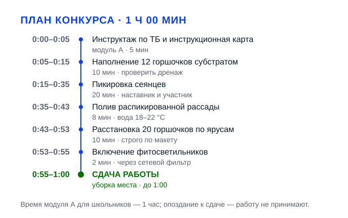
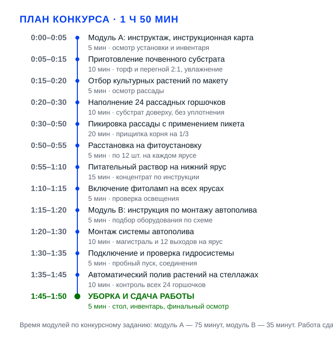
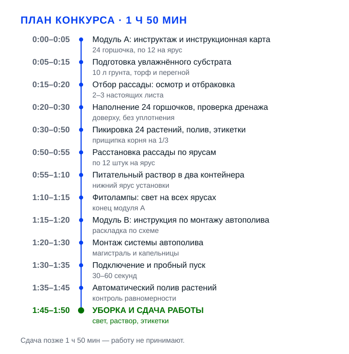

Озеленитель (ФВ)
Задания ниже — официальные файлы «Абилимпикс» (источник: abilympics-russia.ru), разложенные по категориям. Решения написаны по тексту задания, регламенту и критериям оценки; в них указано, что именно проверяет эксперт.
Школьник
14–16 лет, базовый уровень заданияВ официальном файле категории не разделены отдельными разделами — приводим задание целиком; различия по категориям смотрите в таблице модулей.
Пошаговое решение
Задание для школьников по компетенции «Озеленитель» на Фестивале возможностей состоит из одного модуля А и укладывается в один час: пять минут на инструкционную карту, десять на наполнение двенадцати рассадных горшочков готовым субстратом, двадцать на пикировку сеянцев, восемь на полив, десять на расстановку растений по ярусам фитоустановки, две на включение фитосветильников и пять на уборку. Пикировку по условиям задания выполняют наставник и участник вместе, поэтому часть времени уходит на согласование движений, а не только на работу руками. Смысл модуля — пройти полный цикл пересадки без потерь: влажный ком, лунка по центру, прищипнутый на треть корень, посадка до семядольных листьев, прижатая почва, полив и этикетка, и так девять пунктов технологической карты на каждое растение. Ошибки здесь нешумные: залитый горшочек, неподписанный сорт или тёмный ярус видны не сразу, а на осмотре, когда исправлять уже нечего.

Задача 1. Организовать рабочее место и разобрать заданиеМодуль А · инструкционная карта · 5 минут
Первые пять минут модуля А по регламенту отданы инструкционной карте, и это самая выгодная пятиминутка всего конкурса: здесь ещё ничего не испорчено, а вы уже понимаете, из чего состоит работа. За это время нужно пройти инструктаж по охране труда, надеть средства защиты, осмотреть рабочее место площадью шесть квадратных метров, прочитать девять пунктов технологической карты «Пикировка рассады» и разобрать макет фитомодуля. Дальше время пойдёт кусками по десять и двадцать минут, и откладывать чтение будет уже не на что: субстрат начнёт сохнуть, а сеянцы в общем контейнере — вытягиваться.
Действие 1.1. Пройти инструктаж и надеть средства защиты
Шаг 1.1.1
Инструктаж слушаем стоя, рядом с рабочим местом, и сразу выясняем четыре вещи, которые понадобятся в аварийной ситуации: где аптечка, где порошковый или углекислотный огнетушитель, где раковина и как обесточить фитоустановку. Отдельно уточняем, кому сообщать о неисправности инструмента — наставнику команды или главному эксперту, — и запоминаем, что к работе допускаются только прошедшие инструктаж и не имеющие противопоказаний по состоянию здоровья. Если что-то в объяснении осталось непонятным, спрашиваем сразу: позже эксперт будет занят другими участниками.
Без инструктажа участника к заданию не допускают, это прямо записано в требованиях охраны труда, и никакие баллы за растения этого не компенсируют. Кроме того, в задании есть работы с электричеством — фитосветильники и сетевой фильтр, — а по правилам при обрыве провода или запахе гари питание отключают немедленно и только потом разбираются. Знание этих адресов экономит минуты именно тогда, когда они дороже всего.
Проверьте себя тремя вопросами: сможете ли вы, не оглядываясь, показать рукой на аптечку и огнетушитель и назвать вслух, что делаете при запахе гари. Если хотя бы один ответ не находится — спросите сразу, до старта, пока эксперт рядом и не занят.
Типичная ошибка — отстоять инструктаж формально, думая о рассаде, а потом искать огнетушитель наощупь. Вторая, более дорогая: увидеть треснувшую вилку фитосветильника и всё равно включить, потому что «работает же». Это нарушение требований безопасности, за которое работу останавливают.
Эксперт фиксирует факт инструктажа до старта и дальше наблюдает, соблюдаются ли правила по ходу: перчатки, сухие руки у розетки, порядок на столе. Переспросить на инструктаже — нормально, а вот начать работу без него нельзя.
Шаг 1.1.2
Надеваем халат или фартук, застёгиваем его полностью, убираем волосы под головной убор так, чтобы они не выбивались ни спереди, ни на затылке. Перчатки берём виниловые по размеру — в оснащении на человека приходится пара, а в расходных материалах ещё две, — и проверяем, что пальцы в них двигаются свободно: пикировочную палочку нужно держать тонко, почти как карандаш. Маску надеваем до того, как откроем контейнер с субстратом.
Требования безопасности во время работы разрешают выполнять задание только в средствах индивидуальной защиты — халате и перчатках. Практическая сторона не менее важна: торф и перегной сильно сушат кожу и поднимают пыль, а сухая пыль субстрата раздражает слизистую, поэтому маска при вскрытии контейнера и первых порциях грунта — не формальность.
Перчатки сидят без складок на ладони, халат застёгнут, волосы убраны, маска закрывает нос и рот. Поднимите руки и согните пальцы: если перчатка натягивается и мешает сгибать указательный палец, она велика и будет цепляться за край горшочка при посадке.
Самая частая ошибка — работать без перчаток, потому что «так чувствуешь растение»: это нарушение требований безопасности, и его видно с первого шага. Вторая — надеть слишком тесные перчатки и порвать их о борт горшочка, а потом весь остаток модуля поправлять разорванный палец и отмывать руки.
Смотрит на комплект защиты в первые секунды и отмечает, остаётся ли он на месте к моменту работы с субстратом и с электрикой. Отдельно фиксирует, снимает ли участник перчатки перед подключением светильников.
Шаг 1.1.3
Осматриваем рабочее место: площадь по заданию — шесть квадратных метров, проход между местами полтора метра, значит стол, стул, ведро с водой, фитоустановка и ведро для мусора должны стоять так, чтобы вы не переступали через них. Проверяем сетевой фильтр Smartbuy SBSP-50-W: шнур целый, вилка без трещин, розетка исправна, провод идёт по краю стола и не лежит на полу в зоне ног. Регулируем высоту стула под свой рост, чтобы локти были примерно под углом девяносто градусов.
Перед началом работы участник обязан осмотреть и привести в порядок рабочее место, проверить правильность подключения оборудования и отрегулировать стол и стул под себя. Это не бюрократия: за час работы вы наклонитесь над горшочками несколько десятков раз, и неудобная высота стола превращается в усталость кистей к моменту самой точной операции — посадки сеянца в лунку.
Провод фильтра не пересекает рабочую зону, на полу сухо, ведро с водой стоит сбоку, а не под ногами. Сядьте и проверьте посадку: стопы полностью на полу, спина прямая, до дальнего горшочка можно дотянуться, не вставая.
Классика — поставить ведро с водой под стол, поближе: его задевают коленом, вода оказывается рядом с сетевым фильтром, и это уже риск поражения электрическим током. Вторая ошибка — оставить на столе лишние вещи, которые придётся переставлять в разгар пикировки, когда руки заняты землёй.
Оценивает организацию места: свободные проходы, исправное подключение, отсутствие вещей, мешающих работе. Если участник принёс с собой лишнюю посуду или рюкзак на столе, эксперт это отметит.
Действие 1.2. Разобрать инструкционную карту и макет
Шаг 1.2.1
Берём инструкционно-технологическую карту «Пикировка рассады» и читаем все девять пунктов по порядку, отмечая карандашом то, что легко забыть: сеянцы поливают до пикировки водой комнатной температуры; горшочек обязательно с дренажным отверстием; субстрат насыпают доверху, не уплотняя; пикетом делают углубление по центру; сеянец выкапывают палочкой, прищипнув главный корень на треть; опускают до семядольных листьев; прижимают почву так, чтобы растение не меняло положения; поливают; клеят этикетку с названием, датой и фамилией.
Пять минут на ознакомление с заданием — отдельная операция модуля А, и её результат сформулирован прямо: инструкционная карта изучена. Дальше идёт пикировка на двадцать минут, где каждая ошибка в последовательности стоит переделки сразу нескольких горшочков. Прочитать карту один раз дешевле, чем двенадцать раз исправлять её последствия — особенно когда часть субстрата уже израсходована, а сеянцы вынуты из общего контейнера.
Закройте карту и перескажите порядок: что делаете пятым пунктом и что девятым. Если пятый пункт — выкопка с прищипкой корня, а девятый — этикетка, карта разобрана. Отдельно найдите в карте три пункта, где есть слова «до» или «не уплотняя»: именно они задают глубину посадки и плотность субстрата.
Читать карту по диагонали и пропустить девятый пункт с этикеткой: горшочки без названия сорта и даты невозможно ни оценить, ни сдать, а восстановить подпись задним числом уже не получится. Вторая ошибка — пропустить прищипку корня, считая её необязательной мелочью для школьной категории.
Эксперт может подойти в эти пять минут и спросить, что участник будет делать и в каком порядке. Уверенный ответ без подглядывания в карту — это ровно тот результат, который заложен в модуле, и он запоминается на всю работу.
Шаг 1.2.2
Подходим к фитоустановке и разбираем макет: сколько ярусов, сколько рассадных горшочков должно стоять на каждом, в каком порядке идут сорта и на каком ярусе какой. Сверяем числа из задания: при наполнении речь идёт о двенадцати горшочках, при расстановке на фитоустановке — о двадцати, а в оснащении лежат двадцать четыре. Считаем горшочки на столе, сравниваем с макетом и отмечаем, чего не хватает и откуда это взять.
Результат пятой операции модуля сформулирован как «оформленный элемент фитомодуля в соответствии с проектом (макетом)», то есть оценивают не просто наличие растений, а соответствие схеме. Если расставить горшочки ровными рядами «как красиво», совпадения с макетом может не быть вовсе, и операция не даст нужного результата даже при идеально выполненных растениях.
У вас в голове или на свободном поле карты есть схема: ярус, ряд, сорт — и количество сходится с двадцатью горшочками и двадцатью четырьмя в наличии. Сверьте ещё раз число ярусов на установке с числом строк в макете: они должны совпадать полностью.
Ошибка — посмотреть на установку одним взглядом и решить, что «там всё понятно»: на расстановку отведено десять минут, и выяснять схему в это время поздно, потому что горшочки уже стоят у вас на столе. Вторая — перепутать сорта местами и получить элемент, который не читается как проект.
Эксперт сверяет расстановку с макетом по количеству на каждом ярусе и по сортам. Если макет лежит на видном месте и участник к нему не подошёл ни разу, это заметно.
Шаг 1.2.3
В первые же пять минут уточняем у главного эксперта или наставника то, что в задании расходится: сколько горшочков заполнять субстратом — двенадцать или двадцать, откуда брать недостающие, если заполнять двадцать, какие именно сорта идут на каждый ярус и в каком виде сдаётся работа. Ответ записываем коротко на свободном поле карты, чтобы не держать в голове во время пикировки, когда руки заняты.
В конкурсном задании школьников прямо сказано, что пикировку выполняют наставник и участник, а в таблице модуля стоят и двенадцать, и двадцать горшочков — значит, уточнение не прихоть, а часть работы с инструкционной картой. Один вопрос в начале стоит тридцати секунд; обнаружение той же неясности на десятой минуте расстановки стоит восьми незаполненных горшочков и сорванного результата модуля.
Ответ получен, записан, и вы можете назвать точное число горшочков, которые должны уйти на установку, и число тех, что останутся на столе. Если эксперт сказал «делайте по макету» — считайте по макету и запишите цифру рядом со схемой.
Молча догадываться самому, а потом в середине работы искать, кого спросить: эксперт в это время занят другими участниками и может не ответить сразу. Вторая ошибка — спросить, но не записать и через десять минут забыть половину ответа, особенно про сорта по ярусам.
Наблюдает, как участник формулирует вопрос: коротко, по делу, с конкретными числами, а не «а что тут делать». Умение спросить один раз и точно входит в оценку коммуникации.
Действие 1.3. Разложить инструмент по зонам и проверить горшочки
Шаг 1.3.1
Организуем три зоны: субстрата, пикировки и полива. Справа и чуть впереди ставим контейнеры с грунтом, на борт кладём фасовочный совок, на пол справа — ведро для мусора, чтобы просыпь уходила в него одним движением щётки. В центре стола раскладываем пикет, пикировочную палочку, пустые горшочки рядами, этикетки и ручку, у раковины — кувшин, мерный стакан и ведро с водой. Всё должно оказаться в пределах вытянутой руки от того места, где вы сидите.
Субстрат пылит и сыплется, поэтому его зона должна быть удалена от той части стола, где лежат растения, этикетки и ручка. Пикировка — самая плотная часть задания: двадцать минут на двенадцать растений, то есть минута с небольшим на горшочек, и в таком темпе каждое лишнее движение повторяется двенадцать раз. Когда всё на своих местах, десять минут наполнения уходят на наполнение, а не на поиски совка под слоем земли.
Сядьте на рабочее место и проверьте: контейнер с грунтом, совок и горшочки берутся без поворота корпуса, пикет и палочка — правой рукой, горшочек — левой, ведро для мусора под правой рукой и не под ногами. Кувшин стоит там, где вы не будете задевать его локтем во время посадки.
Сложить всё в центр стола одной кучей: тогда горшочки стоят в грунте, этикетки пачкаются, а просыпь разносится по всей рабочей поверхности. Вторая ошибка — держать кувшин с водой на том же краю, где идёт пикировка: его обязательно задевают, вода разливается под горшочки, и субстрат в них переувлажняется ещё до полива.
Отмечает, насколько экономно двигается участник: лишние перемещения по столу и поиски инструмента видны сразу. Смотрит также, остались ли зоны такими же к концу модуля или всё смешалось.
Шаг 1.3.2
Перебираем горшочки по одному: переворачиваем и смотрим на дно — дренажное отверстие должно быть сквозным, а не намеченным. Отбраковываем горшочки с трещиной по борту и с заусенцем внутри: о такой край рвётся перчатка, а трещина разойдётся при первом поливе. Отобранные ставим отдельным рядом, брак откладываем в сторону, чтобы не перепутать, и берём замену из общего количества в двадцать четыре штуки.
Второй пункт технологической карты требует горшочек обязательно с дренажным отверстием, и это не украшение: через отверстие уходит излишек воды после полива. В горшочке без дренажа вода стоит над корнями, корни задыхаются и загнивают, и растение гибнет не в день конкурса, а через несколько дней — то есть работу сдают внешне красивую, но нежизнеспособную.
Поднимите горшочек на свет: отверстие видно насквозь. Борт без трещин, внутри гладко. Проверьте все двенадцать и ещё два запасных — запасные тоже должны быть целыми, иначе запас бесполезен. Для проверки достаточно одного движения: всё нужное находится, не вставая.
Взять горшочки не глядя, первым рядом: среди них почти всегда попадается один без отверстия или с трещиной, и обнаружится это после полива, когда пересаживать уже некогда. Вторая ошибка — выбросить бракованный горшочек в мусор, не отложив в сторону: его не хватит при расстановке, а искать замену придётся в спешке.
Проверяет дренаж выборочно, у двух-трёх горшочков уже на ярусах, и смотрит, не осталось ли в работе треснувших. Если участник отбирал горшочки не глядя, это видно по первому же проливу.
Шаг 1.3.3
Проверяем инструмент до первого касания земли: пикет острый на конце и не погнут, пикировочная палочка гладкая, без заусенцев, совок сухой и чистый, контейнеры без трещин. Протираем инвентарь влажной салфеткой и вытираем насухо бумажным полотенцем. В ведре проверяем уровень воды — оно должно быть налито заранее, потому что вода нужна уже на первом пункте карты, а набирать её в момент пикировки значит терять минуты.
Тупой или погнутый пикет не режет субстрат, а рвёт корни: вместо ровной лунки получается размочаленная ямка, и прищипка главного корня на треть делается не ногтем по корню, а разрывом. Грязный совок переносит с грунта споры и остатки прошлых растений. Всё это незаметно в момент работы и очень заметно через неделю, когда оценивают результат.
Проведите пикетом по ладони в перчатке: острие оставляет ровную линию, а не царапину с задиром. Совок сухой — субстрат с него не прилипает комьями. В ведре воды не меньше половины, и она не ледяная. Если среди двенадцати попался горшочек с заусенцем внутри, замените его сейчас.
Работать тем, что дали, не проверяя: согнутый пикет заставляет давить на субстрат, лунка выходит рваная, а сеянец садится криво. Вторая ошибка — набрать в ведро воды из-под крана ледяной и полить ею сеянцы перед пикировкой: они получают температурный шок и вянут.
Может взять инструмент в руки и осмотреть кромку; к этому моменту он должен быть чистым и сухим. Заодно проверяет, есть ли в ведре вода комнатной температуры.
Задача 2. Подготовить субстрат и наполнить рассадные горшочкиМодуль А · 12 горшочков · 10 минут
Наполнение горшочков — операция на десять минут с чётким результатом: двенадцать наполненных рассадных горшочков. Здесь решается то, что проявится позже: как поведёт себя вода после полива, насколько свободно пойдут вниз корни, не осядет ли сеянец через сутки. Субстрат в этом задании готовый, смесь готовить не нужно, но оценить его влажность, разбить комки и насыпать без уплотнения придётся руками — и именно уплотнение чаще всего портит результат, потому что плотный горшочек выглядит аккуратнее, а работает хуже.
Действие 2.1. Оценить и подготовить субстрат
Шаг 2.1.1
Открываем контейнер с почвенным субстратом и оцениваем его сверху и в глубине: однородный ли цвет, нет ли белого налёта плесени, кислого или гнилостного запаха, живых комков и личинок. Готового грунта по расходным материалам десять литров, и на двенадцать горшочков объёмом около трёхсот миллилитров этого хватает с запасом — значит, экономить и растягивать порцию не нужно. Контейнеров с субстратом в оснащении три, поэтому при сомнении всегда можно взять другой.
Субстрат на основе торфа и перегноя — это и питание, и среда для корней, и если в нём плесень или он закис, растение будет болеть независимо от аккуратности пикировки. Проверка занимает меньше минуты, а стоит она всего модуля: заметить проблему до наполнения ещё можно заменить контейнер, после наполнения — уже нет, потому что субстрат в горшочках смешается и дефект разойдётся по всей партии.
Субстрат однородного цвета, без белых пятен и без резкого запаха, комкуется, но не мажется. Если видите плесень на поверхности — не перемешивайте её внутрь, а покажите эксперту и попросите другой контейнер: в оснащении их три, и замена ничего не стоит.
Разровнять плесень рукой и работать дальше: споры окажутся по всему объёму, и половина горшочков через неделю покроется налётом. Вторая ошибка — сразу насыпать грунт, не посмотрев, что в контейнере, и обнаружить посторонние включения уже в готовых горшочках.
Может подойти и посмотреть в контейнер, а также спросить, что участник в нём проверял. Оценка этой операции строится на том, осматривали субстрат или брали его вслепую.
Шаг 2.1.2
Разрыхляем субстрат руками в перчатках, разбивая комки крупнее десяти миллиметров: крупный ком в горшочке — это пустота, в которую проваливается корневой ком сеянца и уходит вода. Выбираем щепки, камешки, куски корней и плёнки и отправляем в ведро для мусора. Ничего не добавляем от себя: ни песка, ни золы, ни удобрений — субстрат по заданию готовый, и любая добавка меняет его свойства неизвестно в какую сторону.
Разрыхлённый субстрат ложится в горшочек равномерно и потом так же равномерно удерживает влагу. Комки и щепки дают пустоты, из-за которых первый полив уходит по стенке в дренаж, не смачивая ком, а сеянец остаётся сухим при внешне политой земле. Это одна из самых обидных потерь: работа выглядит сделанной, а растения страдают от сухости, и причина не видна.
Проведите рукой по горсти субстрата: на ладони не остаётся твёрдых включений крупнее ногтя. Разотрите горсть — она рассыпается на мелкие фракции, а не распадается на плотные комья. В контейнере нет крупных обломков на поверхности.
Сыпать как есть, «потом разойдётся»: не разойдётся, комки останутся внутри и дадут пустоты, в которые при поливе проваливается вода. Вторая ошибка — добавить удобрение «для роста», не спросив: концентрация может обжечь молодые корни, и это уже необратимо.
Смотрит на однородность субстрата в горшочках после наполнения — по ней видно, разрыхляли его или нет. Крупные комья у стенки заметны сразу. Смотрит он и на контейнер после разрыхления: комьев там быть не должно.
Шаг 2.1.3
Проверяем влажность рукой: берём горсть субстрата и сжимаем в кулаке. Готовый к работе субстрат держит форму комка, но вода из него не течёт, а ладонь остаётся влажной, а не мокрой. Если комок рассыпается — субстрат пересушен, увлажняем из мерного стакана примерно сто пятьдесят миллилитров на три литра грунта, перемешиваем и даём постоять пять минут, чтобы вода распределилась равномерно.
Слишком сухой субстрат после наполнения осыпается со стенок, а при поливе вода проскакивает в дренаж, не смачивая ком. Слишком мокрый превращается в грязь: лунка под сеянец заплывает, корни в ней задыхаются, и приживаемость падает. Правильная влажность — то состояние, при котором карта и требует поливать сеянцы перед пикировкой.
Комок держится в кулаке, при сжатии на пальцах выступает влага, но капля не падает. Разомните его второй раз: субстрат должен рассыпаться на мелкие фракции, а не налипать на перчатку плотной массой. Если комок рассыпался в пыль, увлажните субстрат и проверьте снова.
Полить субстрат «на всякий случай» из кувшина: он превращается в мокрую массу, горшочки становятся тяжёлыми, а лунка под сеянец не держит форму и заплывает. Вторая ошибка — работать сухим, потому что «польём же потом»: потом поливают растение, а не субстрат, и сухой ком не смачивается равномерно.
Может сжать горсть субстрата сам и сравнить с тем, что видит в горшочках. Оценивает не только влажность, но и то, проверил ли участник субстрат до наполнения.
Действие 2.2. Наполнить горшочки субстратом
Шаг 2.2.1
Наполняем фасовочным совком, а не рукой: набираем субстрат и сыплем в горшочек порциями по три-четыре движения, поворачивая горшочек свободной рукой, чтобы грунт ложился по кругу, а не кучей в центр. Горшочек при этом стоит на столе, а не висит в воздухе, и под рукой лежит салфетка или поддон — просыпь собирается за один раз, а не размазывается по столу до конца модуля.
Совок даёт ровную струю и не разбрасывает субстрат по столу, а порционное наполнение не оставляет комков внутри. На десять минут отводится двенадцать горшочков — это меньше минуты на штуку, поэтому темп важен, но рвать его бегом не нужно: наполнение делается спокойно и одинаково, иначе горшочки выйдут разными по плотности и высоте, а полив придётся делать разный.
Грунт ложится ровно, без пустых углов и без комков у стенок. Поставьте три наполненных горшочка рядом и сравните: они должны выглядеть как копии друг друга. Проверьте, не осталось ли пустоты у стенки — она видна, если посмотреть на горшочек на свет.
Сыпать из контейнера прямо в горшочек, наклоняя его: половина субстрата оказывается на столе, а внутри остаются пустоты. Вторая ошибка — набирать полную горсть и заталкивать рукой, разминая грунт: получается тот же утрамбованный горшочек, только быстрее.
Смотрит, как наполнены горшочки: ровно ли, нет ли комков и пустот у стенок. Двенадцать штук за десять минут — это спокойный темп, и спешка здесь от эксперта не скрыта.
Шаг 2.2.2
Досыпаем субстрат доверху, как требует третий пункт карты, но не уплотняя его. Чтобы грунт сел, а не утрамбовался, горшочек два-три раза стукают дном о стол с высоты два-три сантиметра, дают субстрату осесть и досыпают до борта. Верхний уровень — на одной линии с краем или на пять миллиметров ниже, чтобы при поливе вода не скатывалась сразу через борт и не уносила часть субстрата на стол.
Уплотнение — главная ошибка этой операции: в плотном субстрате корням не хватает воздуха, полив уходит по стенкам, и сеянец долго не трогается в рост. Постукивание даёт как раз нужную, естественную осадку без давления, и после неё в горшочке остаётся тот объём, который нужен корневому кому сеянца, а не больше и не меньше.
Проверьте пальцем в перчатке: субстрат пружинит под нажатием, а след от пальца затягивается, а не остаётся плотной ямкой. Уровень у всех горшочков одинаковый, до борта не больше пяти миллиметров, бугра нет.
Прихлопывать ладонью сверху «чтобы не осыпалось»: поверхность становится плотной коркой, вода по ней скатывается к стенке, а не впитывается, и первое, что видит эксперт, — сухой ком при политом горшочке. Вторая ошибка — насыпать выше борта с горкой, из-за чего первый полив смывает субстрат вместе с растением.
Обращает внимание именно на плотность: аккуратно нажимает на поверхность в двух-трёх горшочках. Разница между «прижать» и «утрамбовать» — это разница между растением, которое приживается за сутки, и растением, которое неделю стоит на месте.
Шаг 2.2.3
Снимаем излишек субстрата ребром совка или линейкой, ведя по борту горшочка, и ссыпаем его обратно в контейнер или в ведро, но не на стол и не на пол. Поверхность выравниваем, не вдавливая. Горшочки ставим рядами по три или по четыре — так их легче считать и удобнее брать при пикировке; рядом раскладываем этикетки по числу горшочков и кладём ручку.
Ровная поверхность нужна для того, чтобы лунка пикетом получилась по центру и одинаковой глубины во всех горшочках, а не гуляла от борта к середине. Ряды вместо беспорядочной кучи дают простой контроль: вы видите, что все двенадцать на месте, и считаете их одним взглядом, а не по одному, перекладывая горшочки и пачкая стол.
Пересчитайте ряды: двенадцать штук плюс два запасных, все с ровной поверхностью и одинаковой высотой. Просыпи на столе нет — она уже в ведре или в контейнере, а этикетки лежат стопкой рядом с ручкой. Ровная поверхность без ямок — признак того, что субстрат не давили.
Оставить просыпь на столе «уберу в конце»: она разносится по всей рабочей поверхности, попадает в горшочки и на этикетки, а на уборку в конце отведено всего пять минут. Вторая ошибка — сметать излишек рукой, размазывая влажный субстрат по борту, после чего горшочки выглядят грязными.
Смотрит на стол и на ряды горшочков: чистота и порядок видны без измерений. Двенадцать штук, разложенные рядами, — это результат операции, и его считают при приёмке.
Действие 2.3. Проверить качество наполнения
Шаг 2.3.1
Проверяем дренаж на нескольких горшочках: ставим два-три на поддон и проливаем примерно по пятьдесят миллилитров воды из мерного стакана. Вода должна показаться в дренажном отверстии через пять-десять секунд. Если вода не выходит, отверстие забилось субстратом — прочищаем палочкой или заменяем горшочек из запасных, пока в нём нет растения. Проверку делаем на горшочках из разных рядов, потому что брак бывает не сплошным.
Дренаж — единственный способ убедиться, что горшочек работает как горшочек, а не как стакан. Через несколько минут вы начнёте высаживать растения, и проверять будет поздно: обнаружится всё на поливе, когда излишек воды останется внутри, а исправлять придётся пересадкой уже распикированных сеянцев, то есть потерей и растений, и времени.
Капли появились на дне в пределах десяти секунд, поддон до пролива был сухой. Проверьте горшочек из первого ряда и из последнего: если оба пропускают воду одинаково быстро, наполнение сделано однородно.
Пропустить проверку, решив, что отверстия видели при отборе: увидеть отверстие и убедиться, что оно не забито грунтом, — разные вещи, потому что при наполнении субстрат как раз и забивает дно. Вторая ошибка — пролить пробу на глаз и оставить воду в поддоне, из-за чего низ горшочка переувлажнён ещё до посадки.
Иногда сам просит показать, как уходит вода, — это быстрый способ проверить понимание технологии. Если участник проливает горшочек и смотрит на дно, эксперт видит, что операция осмыслена.
Шаг 2.3.2
Сравниваем все двенадцать горшочков между собой: одинаковая высота наполнения, одинаковая масса на ощупь, ровная поверхность, нигде не видно пустоты у стенки. Разницу в весе легко поймать, поднимая горшочки по очереди одной рукой: явно лёгкий набит с пустотами, явно тяжёлый переувлажнён или утрамбован, и оба варианта дадут разное поведение при поливе.
Одинаковые горшочки — это не эстетика, а предсказуемость: одинаковый объём субстрата означает одинаковый запас влаги, и на фитоустановке растения будут развиваться ровно. Когда один горшочек тяжелее другого вдвое, полив приходится делать разным, а времени на индивидуальный подход в модуле не заложено — восемь минут на все сразу.
Поднимите каждый горшочек и поставьте обратно: разброс на ощупь не должен бросаться в глаза. Проверьте просвет между субстратом и бортом — он одинаковый по всему кругу, а не пять миллиметров с одной стороны и двадцать с другой.
Оставить один-два горшочка недосыпанными, потому что «и так сойдёт»: при поливе вода стекает по стенке, корневой ком оголяется, и сеянец наклоняется. Вторая ошибка — не заметить переувлажнённый горшочек и посадить в него растение сразу после прищипки корня, когда корни особенно уязвимы.
Сверяет горшочки между собой — разница видна и без взвешивания. Ровный ряд из двенадцати одинаковых горшочков и есть результат этой операции. Отдельно отмечает, не осталось ли у стенок пустот, в которые уйдёт вода.
Шаг 2.3.3
Расставляем готовые горшочки в том порядке, в котором будем их заполнять растениями: первый ряд — первый сорт, второй — второй, и так далее, если сорта разные. Первый по счёту горшочек отмечаем этикеткой или сдвигаем на сантиметр, чтобы не сбиться со счёта. Рядом кладём этикетки по числу горшочков и ручку, которая пишет по влажному пластику, а не смазывается от первого полива.
Порядок в рядах экономит время на самой дорогой операции: когда двадцать минут распределены на двенадцать растений, сбитый счёт означает, что часть горшочков останется пустой, а часть получит по два сеянца. Этикетки, разложенные заранее, не дают забыть девятый пункт карты в спешке, а отмеченный первый горшочек держит порядок до самого конца.
Этикетки лежат стопкой рядом, ручка не потерялась, горшочки стоят ровными рядами и пересчитываются за пять секунд. Отмеченный первый горшочек видно с рабочего места, и по нему вы сверяете, на каком сорте остановились.
Свалить горшочки в кучу и подписывать их после посадки, отыскивая нужный сорт по памяти: почти всегда два-три горшочка остаются без этикетки, и сорт определить уже невозможно. Вторая ошибка — подписывать ручкой, которая не пишет по влажному пластику, и обнаружить это на последнем горшочке.
Смотрит на этикетки и на порядок в рядах; отсутствие подписи — самый заметный минус результата, потому что по этикетке сорт сверяют с макетом. Подписанные заранее этикетки на столе он видит до начала пикировки.
Задача 3. Отобрать растения и выполнить пикировкуМодуль А · 20 минут · сеянцы в горшочках
Пикировка — сердце задания и самая долгая операция модуля: двадцать минут, за которые каждый отобранный сеянец должен переехать из общего контейнера в отдельный горшочек с целым корнем и подписанной этикеткой. Здесь важен не темп, а повторяемость: девять пунктов технологической карты выполняются одинаково для первого и для двенадцатого растения, и именно одинаковость даёт ровный результат. Ошибка, допущенная на первом сеянце, обычно повторяется на всех остальных — поэтому первые две минуты этой операции самые важные, а запасные сеянцы, отложенные заранее, спасают ровно в тот момент, когда до сдачи остаётся мало времени.
Действие 3.1. Отобрать культурные растения по проекту
Шаг 3.1.1
Открываем контейнер с растительными культурами и осматриваем сеянцы при хорошем свете, раздвигая их палочкой, а не выдёргивая. Смотрим на всю массу сразу: где растения крепче, где полегли, где видны пятна на листьях и потемнения у корневой шейки. Культурные растения в расходных материалах не ограничены по количеству — значит, отбирать можно спокойно, с запасом, не пытаясь спасти каждый сеянец и не вытягивая один и тот же из общей массы по три раза.
Отбор — отдельная операция модуля А с результатом «рассада растений, осмотр рассады». Оценивают именно умение выбрать жизнеспособные сеянцы: растение с повреждённой корневой шейкой или вытянутое в темноте не приживётся, и горшочек с ним формально считается выполненным, а фактически пустым. Осмотр всей массы до отбора нужен ещё и для того, чтобы не разносить болезнь: один сеянец с чёрной ножкой занесёт её во все горшочки, куда вы его посадите.
В контейнере вы видите разницу между крепкими и слабыми сеянцами и отбираете не первые попавшиеся. Проверьте освещение: если сеянцы приходится рассматривать, наклоняясь к самому столу, включите общий свет или поверните контейнер к окну, потому что по тёмным пятнам на шейке в полумраке не разобрать ничего.
Брать все сеянцы подряд, чтобы «успеть»: слабые погибнут или будут стоять на месте, а время на них уже потрачено. Вторая ошибка — выдёргивать сеянцы из общей массы, растаскивая корни соседей: повреждённые соседи уже не приживутся, и вы теряете запас, который сами себе оставили.
Наблюдает за отбором: бережно ли участник обращается с общей массой сеянцев и осматривает ли их до того, как взять в руки. Осмотр контейнера целиком — признак того, что человек понимает, зачем отбирает.
Шаг 3.1.2
Отбираем по четырём признакам: два-три настоящих листа кроме семядольных, высота примерно пять-восемь сантиметров, ровная корневая шейка без тёмного кольца и уплотнения, листья чистые, без пятен и без желтизны. Стебель должен быть упругим, не вытянутым и не водянистым. Семядольные листья могут быть целыми или слегка надорванными — это не брак, растение живёт за счёт настоящих листьев.
Именно эти признаки определяют приживаемость: сеянец с двумя-тремя настоящими листьями уже имеет собственные корни, способные работать в новом объёме, а слишком молодой в горшочке остановится и не тронется в рост до конца смены. Тёмное кольцо на корневой шейке — признак чёрной ножки, и занести такой сеянец в горшочек значит занести болезнь во всю партию, где она разойдётся за неделю.
Проверьте на трёх отобранных сеянцах: листьев не меньше двух настоящих, шейка светлая и ровная, стебель держит форму и не падает, если отпустить его на ладони. Сомнительный сеянец отложите в сторону, а не в горшочек, и не возвращайте его в общий контейнер.
Брать самые высокие и вытянутые сеянцы, потому что они «крупные»: они как раз и вытянулись из-за нехватки света и после пересадки полегают. Вторая ошибка — не заметить тёмную шейку и перемешать больной сеянец со здоровыми, после чего браковать приходится всю партию.
Может попросить показать отобранные растения и посмотреть на шейку и листья. Отбор по признакам, а не «какие попались», — это и есть результат операции.
Шаг 3.1.3
Отбираем двенадцать сеянцев по числу горшочков и ещё два-три запасных — их держим отдельно, на влажной салфетке в тени. Запасные нужны на случай, если при выкопке у одного оборвётся корень или при посадке сломается стебель: заменить растение быстрее, чем разбираться с повреждённым. Отобранные укладываем корнями к себе, листьями от себя, и прикрываем корни влажным субстратом, чтобы они не подсохли.
Запас — это страховка от единственной невосполнимой потери в этой операции: растения в расходных материалах не ограничены, но времени на повторный отбор в графике нет. Две-три запасные единицы не мешают и не занимают места, зато они есть в тот момент, когда до сдачи остаётся десять минут и искать что-то в контейнере уже некогда. Прикрытые корни — тоже не формальность: тонкие корни теряют влагу за минуту-две на воздухе.
На столе двенадцать сеянцев, отложенных для посадки, и отдельно два-три запасных. Ни один сеянец не лежит просто на столе с открытыми корнями, и видно, где кончается основная партия. Пересчитайте отобранные растения ещё раз перед началом посадки.
Отобрать ровно двенадцать и не оставить ни одного запасного: первая же неудачная выкопка ставит под угрозу весь результат. Вторая ошибка — держать отобранные сеянцы сухими на открытом столе, пока идёт наполнение лунок: корни подсыхают, и растения после посадки вянут.
Считает отобранные растения — двенадцать и запас — и смотрит, прикрыты ли корни. Наличие запаса и его состояние эксперт отмечает отдельно: это показатель того, как участник планирует работу.
Шаг 3.1.4
Раскладываем отобранные сеянцы по сортам и, если сортов несколько, ставим перед каждой группой этикетку с названием. Внутри группы растения укладываем так, чтобы корни были прикрыты влажным субстратом или салфеткой, а листья не лежали друг на друге. Порядок посадки выбираем от первого горшочка к последнему, а не вразнобой, и заранее решаем, какой горшочек получит какой сорт.
Сортность — часть результата: этикетка на горшочке должна совпадать с растением внутри. Если один сеянец поменялся местами с другим, ошибка не видна сразу, но проявится, когда эксперт сверит подписи с макетом, где сорта распределены по ярусам. Порядок посадки по номерам убирает и эту ошибку, и потерю счёта, которая почти всегда случается на восьмом-девятом горшочке.
У каждой группы своя этикетка, растения лежат корнями к вам, и видно, какой горшочек заполняется следующим. Проверьте, что число растений в группах совпадает с числом горшочков, отведённых под эти сорта.
Смешать сорта и подписать горшочки «по памяти»: в двадцатиминутной операции память подводит первой, особенно когда торопишься. Вторая ошибка — разложить сеянцы так, что при переносе их приходится переворачивать, рискуя обломить стебель у самой шейки.
Сверяет этикетки на горшочках с растением внутри — это первое, что проверяют после сдачи работы. Сверяет он и то, не перепутаны ли группы между собой: подпись перед каждой группой — простой признак порядка.
Действие 3.2. Подготовить сеянцы к пересадке
Шаг 3.2.1
Поливаем сеянцы в контейнере водой комнатной температуры за тридцать-шестьдесят минут до выкопки — это первый пункт технологической карты, и он не случайно стоит первым. Поливаем по краю контейнера тонкой струёй из кувшина, не заливая листья, до полного смачивания кома. Если вода в ведре холодная, наливаем её в кувшин заранее, чтобы она успела согреться до восемнадцати-двадцати двух градусов.
Влажный ком не рассыпается при выкопке, и корни выходят целиком, а не обрываются по одному. Полив перед пикировкой — это и подготовка растений к стрессу: они уходят в новый объём с запасом влаги, и приживаемость заметно выше. Холодная вода тормозит корни, поэтому температура здесь важнее объёма: лить много и холодной — худший из вариантов.
Ком на ощупь влажный по всей глубине, лишней воды в контейнере нет. Проверьте пальцем у стенки: если в нижней трети сухо, полейте ещё, но не оставляйте воду стоять на дне контейнера. Если вода стоит на дне контейнера, слейте её, прежде чем браться за выкопку.
Полить ледяной водой из-под крана: корни получают температурный шок, и сеянцы вянут уже в первые минуты после посадки, хотя внешне всё сделано правильно. Вторая ошибка — полить в самый момент выкопки, когда ком ещё не пропитался и рассыпается в руках.
Обращает внимание на температуру воды и на то, пропитан ли ком перед выкопкой. Полив перед пикировкой — первый пункт карты, и его пропуск виден по осыпающемуся кому.
Шаг 3.2.2
Пикетом делаем углубление в центре горшочка: вводим инструмент вертикально на глубину два-три сантиметра и слегка покачиваем, формируя лунку диаметром чуть больше корневого кома сеянца. Лунку делаем в каждом горшочке заранее, до того как возьмём в руки растение, — с влажным комом в руке ковырять субстрат уже неудобно, а держать сеянец в воздухе нельзя.
Карта требует делать углубление именно пикетом и именно по центру: центр задаёт будущее положение стебля, а от него зависит, как растение будет стоять на ярусе и не упрётся ли в соседа. Лунка нужной глубины позволяет опустить сеянец до семядольных листьев одним движением, не заталкивая корни силой, а именно заталкивание ломает корни и загибает их вверх петлёй.
Лунка ровная, по центру, глубиной примерно два-три сантиметра, её стенки не осыпались. Проверьте палочкой: она входит в лунку свободно и достаёт до дна, а не упирается в плотный слой на середине. Глубину первой лунки удобно сверить палочкой до того, как возьмёте сеянец.
Ковырять лунку пальцем или тем же пикетом, но на глаз, у самого борта: растение окажется с краю, корни упрутся в стенку, и при поливе вода пойдёт мимо кома. Вторая ошибка — сделать лунку слишком глубокой, из-за чего корневая шейка окажется заглублённой и точка роста уйдёт под субстрат.
Смотрит на положение лунки: центр горшочка виден сразу, смещение к борту бросается в глаза при расстановке, потому что ряд перестаёт быть ровным. По лунке видно, понимает ли участник, зачем она нужна и откуда взялась глубина.
Шаг 3.2.3
Выкапываем сеянец пикировочной палочкой: вводим её под углом примерно тридцать-сорок пять градусов на два-три сантиметра от стебля, поддеваем снизу вместе с комом и вынимаем, придерживая растение за семядольный лист. Тянуть за стебель нельзя ни в каком случае. Если ком не идёт, палочку заводим глубже и подрезаем им корень снизу, а не тянем сильнее и не раскачиваем растение из стороны в сторону.
Корни, вышедшие с комом, приживаются почти без потерь, а оборванные заставляют растение неделю восстанавливаться, и всё это время оно не растёт. За семядольный лист растение держится надёжно: даже если лист надорвётся, стебель и корень останутся целыми, а вот раздавленный или надломленный стебель уже не восстановится, потому что точка роста у сеянца одна.
Ком держится на корнях, а не осыпается, стебель целый, семядоли на месте. Отложите вынутый сеянец на ладонь и посмотрите: корней должно быть видно несколько, они белые и целые, а не бурые и размочаленные.
Тянуть сеянец за стебель, потому что «ком тяжёлый»: стебель рвётся у корневой шейки, и растение погибает вместе с корнем, который остался в земле. Вторая ошибка — выдёргивать сеянец из общей массы, оголяя и повреждая корни соседних растений, которые вы планировали посадить следующими.
Наблюдает именно за этим движением — оно лучше всего показывает навык. Ком в руке и целый стебель эксперт видит с расстояния нескольких шагов. Рваный срез корня и осыпавшийся ком он замечает при осмотре готовых горшочков.
Шаг 3.2.4
Прищипываем главный корень примерно на треть длины, как требует пятый пункт карты: держим сеянец над горшочком и чистым ногтем или кончиком палочки отщипываем самый кончик стержневого корня. Делаем это до посадки, пока растение на виду, а не в лунке. Если корень уже оборвался при выкопке — прищипывать нечего, просто сажаем, и это не считается ошибкой.
Прищипка заставляет растение развивать боковые корни вместо одного длинного, и в ограниченном объёме горшочка это даёт заметно более мощную корневую систему — именно поэтому пункт стоит в карте отдельно. Кроме того, укороченный корень не упирается в дно горшочка и не загибается в лунке, а загнутый корень работает хуже прямого.
Длина корня уменьшилась примерно на треть, срез чистый, не размочаленный, растение не потеряло тургор. Сравните с неприщипнутым сеянцем из запаса: разница в длине видна глазом, и по ней легко проверить себя.
Отщипнуть половину корня «для надёжности»: растение теряет слишком много и дольше приживается, а в двадцатиминутной операции это критично. Вторая ошибка — рвать корень, а не отщипывать: рваный срез загнивает, особенно если субстрат переувлажнён, и сеянец гибнет от гнили.
Проверяет, прищипнут ли корень, у одного-двух растений в горшочках, и при необходимости спрашивает, какая часть удалена. Оценка идёт по результату, а не по движению.
Действие 3.3. Посадить сеянец в горшочек
Шаг 3.3.1
Берём подготовленный сеянец за семядольный лист или придерживаем корневой ком двумя пальцами, не сжимая стебель. Держим его над горшочком, а не на весу в стороне: путь от руки до лунки должен быть минимальным. Если сеянец отложен в сторону, корни подсыхают за минуту-две, поэтому берём по одному и сразу сажаем, а не раскладываем всю партию по горшочкам заранее.
Стебель у сеянца травянистый, и сжатие пальцами оставляет в нём вмятину, которая потом превращается в перетяжку и точку перелома. Держание за семядольный лист — приём из технологической карты, и он работает потому, что лист в этом возрасте уже не нужен растению так, как стебель: потеря семядоли компенсируется, потеря точки роста — нет.
Растение висит вертикально, корни вниз, стебель не пережат. Проверьте после посадки: на стебле нет тёмных вмятин от пальцев, семядоли целы или надорваны незначительно, ком не развалился по дороге. Семядоли при этом остаются над субстратом и не засыпаны землёй.
Брать сеянец за стебель всей горстью, «чтобы надёжнее»: перетяжка видна на второй день, растение останавливается в росте. Вторая ошибка — держать несколько сеянцев в одной руке, пока сажаете первый: остальные теряют влагу и ломаются.
Смотрит на стебли в горшочках: перетяжки и сломы видны сразу, и они относятся к качеству посадки, а не к качеству растений. Перетяжка на стебле — самый заметный дефект посадки, и её видно сразу.
Шаг 3.3.2
Опускаем сеянец в лунку до семядольных листьев, корнями вниз, и расправляем кончики корней палочкой, чтобы они шли вниз и в стороны, а не загибались вверх петлёй. Семядольные листья должны остаться над поверхностью субстрата на пять-десять миллиметров. Если корень не входит, лунку углубляем палочкой, а не вдавливаем растение в субстрат силой. Лунку держим открытой до того момента, когда сеянец окажется в ней.
Шестой пункт карты задаёт глубину: до семядольных листьев. Это значит, что стебель получает дополнительную опору в субстрате, а семядоли остаются на свету и работают на растение, пока не появятся новые листья. Завёрнутый вверх корень не может нормально снабжать растение водой и через несколько дней даёт увядание при внешне политой земле — и причину этого никто не увидит, потому что сверху всё в порядке.
Семядоли над субстратом, стебель вертикальный, корни уходят вниз. Аккуратно потяните палочкой у стенки лунки: если видно, что корень идёт вбок или загнут, поправьте его сейчас, а не после полива, когда субстрат схватится.
Вдавить сеянец в лунку силой, если корень не входит: корень ломается или загибается, и растение обречено. Вторая ошибка — заглубить сеянец по самые семядоли в землю, из-за чего точка роста оказывается под субстратом и растение гибнет от загнивания.
Проверяет глубину посадки у нескольких горшочков, отгибая субстрат у стебля. Слишком глубоко посаженное растение он находит именно так, потому что внешне оно выглядит нормально.
Шаг 3.3.3
Засыпаем лунку субстратом с двух сторон, подталкивая его палочкой или пальцем в перчатке к стеблю и поддерживая растение второй рукой в вертикальном положении. Субстрат берём тот же, из контейнера, не уплотняя его в лунке. Засыпаем до уровня окружающей поверхности, без бугра и без ямы вокруг стебля. Придерживаем растение до последнего движения, иначе оно наклонится в сторону.
Ровная засыпка нужна для того, чтобы вода при поливе распределялась по всему объёму, а не скатывалась в ямку у стебля и не размывала бугор. Поддержка растения второй рукой — единственный способ засыпать лунку и при этом не дать сеянцу наклониться в сторону, а наклон потом очень трудно исправить без пересадки.
Поверхность вокруг стебля ровная, стебель вертикальный без наклона, ямки и бугра нет. Посмотрите на горшочек сбоку на уровне стола: стебель должен стоять по оси горшочка, а не под углом к ней. Поверхность вокруг стебля должна быть ровной со всех сторон, а не только спереди.
Засыпать одной рукой, отпустив растение: сеянец наклоняется, и потом его приходится выправлять, рискуя обломить корень. Вторая ошибка — оставить вокруг стебля воронку, в которой при поливе собирается вода и вымывает субстрат от корней.
Смотрит на положение стебля относительно оси горшочка — это видно с любого расстояния, и отклонение сразу читается как небрежность. Заглублённую посадку он находит именно так: отгибает субстрат у стебля.
Шаг 3.3.4
Прижимаем почву вокруг стебля большим и указательным пальцами, с двух сторон, умеренно — до состояния, когда при лёгком подёргивании за семядольный лист сеянец не меняет своего положения. Это седьмой пункт карты, и он формулирует критерий буквально: растение должно держаться, но субстрат не должен превратиться в плотный ком. Прижимаем у стебля, а не по всей поверхности горшочка.
Прижатая у стебля почва обеспечивает контакт корней с субстратом, без которого корни не получают влагу даже во влажной земле: между корнем и грунтом остаются воздушные полости. При этом проверка подёргиванием — самый честный тест, потому что она показывает ровно то, что произойдёт при поливе.
Подёргайте за семядольный лист вверх с усилием не больше веса монеты: сеянец стоит на месте, не выходит из лунки и не наклоняется. Субстрат у стебля пружинит под пальцем, а не проваливается ямкой. Проверьте два-три горшочка из разных мест ряда, а не только первый.
Прижать слишком сильно, «чтобы наверняка»: субстрат уплотняется, и корни задыхаются, а вода уходит по стенке. Обратная ошибка не лучше — не прижать вовсе: при первом поливе сеянец наклоняется и ложится на субстрат, и это видно на ярусе.
Проверяет устойчивость растения лёгким подёргиванием — это стандартный приём эксперта при осмотре растительной продукции. Приём он применяет выборочно, к двум-трём растениям, а не ко всем подряд.
Действие 3.4. Полить и подписать распикированные растения
Шаг 3.4.1
Поливаем каждый распикированный горшочек сразу после посадки: пятьдесят-сто миллилитров воды комнатной температуры по краю, по кругу, тонкой струёй, не попадая на листья. Льём в два-три приёма с паузой в десять-пятнадцать секунд, чтобы вода успевала впитываться, а не стекала по стенке. Заканчиваем, когда на дне покажутся первые капли из дренажного отверстия.
Восьмой пункт карты — полив после посадки, и он закрывает воздушные пустоты, которые всегда остаются вокруг корней после засыпки. Без этого полива корни контактируют с воздухом, а не с влажным субстратом, и растение вянет, хотя земля выглядит влажной. По краю поливают потому, что струя в центр размывает лунку и обнажает корневую шейку, а это уже дефект посадки.
Капли появились в дренаже, поверхность субстрата влажная и ровная, стебель не наклонён, лунка не размыта. Проверьте палец на глубину одного сантиметра: влажно по всей глубине, а не только в верхнем слое, который сохнет первым.
Полить всю партию из кувшина разом, не отмеривая: часть горшочков залита, часть сухая, и разница проявится на ярусе через несколько дней. Вторая ошибка — лить в центр горшочка, размывая посадку, из-за чего приходится снова прижимать почву и выправлять растение.
Смотрит на состояние субстрата и на то, не размыта ли посадка, — после полива дефекты видны лучше всего, и исправлять их уже поздно, поэтому эксперт оценивает именно этот момент.
Шаг 3.4.2
Клеим этикетку на горшочек — девятый пункт карты: наименование растения и сорт, дата пикировки, фамилия и имя выполнившего. Пишем ручкой, разборчиво, по влажной поверхности, и клеим на наружную сторону горшочка, а не внутрь и не в субстрат. Если сортов несколько, название пишем так, как оно указано в задании, без сокращений и без «примерно такого же» названия.
Этикетка превращает горшочек из просто ёмкости с растением в учётную единицу: по ней эксперт сверяет сорт с макетом, а по дате видно, когда выполнена пикировка. Отсутствие подписи — самый частый минус в этой операции, потому что её делают в самом конце, когда время уже поджимает, и именно она стоит последней в карте не случайно.
На каждом горшочке есть этикетка с тремя сведениями, надпись читается не наклоняясь, чернила не смазаны и не потёкшие. Пересчитайте этикетки: их столько же, сколько горшочков с растениями, включая запасные, если они тоже посажены.
Подписать горшочки в самом конце и не успеть: часть остаётся без этикеток, и сорт определить уже невозможно, потому что сеянцы разных сортов внешне похожи. Вторая ошибка — писать карандашом или фломастером, который смазывается от воды при поливе.
Читает этикетки и сверяет сорта с макетом — это делается после сдачи работы, и подпись с датой здесь так же важна, как сам сорт. Отдельно смотрит, читается ли дата и фамилия без наклона к горшочку.
Шаг 3.4.3
Проверяем посадку у каждого горшочка: стебель вертикальный, семядоли над субстратом, вокруг стебля нет ямы и нет оголённых корней, поверхность ровная. Наклонившееся растение выправляем, подсыпав субстрат с одной стороны, а не вытягивая за листья. Если из дренажа вымылся субстрат, досыпаем до уровня. Затем ставим горшочки ровным рядом в стороне от фитоустановки, в тени от ламп, на один-два часа.
Проверка сразу после полива — единственный момент, когда дефекты ещё можно исправить без пересадки: через полчаса субстрат схватится, и любое выправление будет означать разрушение кома. Ровно стоящие растения — это то, что видит эксперт при осмотре ярусов. Тень в первые часы нужна потому, что после пересадки растение в стрессе, и яркий свет усиливает испарение.
Все горшочки в ряду выглядят одинаково: стебли по центру, поверхности ровные, ни один сеянец не лежит. Отойдите на шаг и посмотрите на ряд целиком — разница видна сразу, как и число горшочков: двенадцать по заданию плюс запасные отдельно.
Оставить наклонившееся растение «оно само выправится»: не выправится, а при расстановке оно будет задевать соседей. Вторая ошибка — сразу включить фитолампы на полную мощность и поставить растения под них вплотную: сеянцы вянут, и к моменту сдачи половина лежит.
Оценивает состояние растений на момент сдачи: подвядшие сеянцы — прямой признак нарушенной технологии, и это видно без всяких измерений. Смотрит он и на то, ровно ли стоят горшочки в ряду и нет ли наклона.
Задача 4. Полить распикированную рассадуМодуль А · 8 минут · все растения политы
Полив выделен в отдельную операцию на восемь минут, хотя технически это несколько движений кувшином. Смысл в том, что поливают не «вообще», а до определённого состояния: все пикированные растения должны быть политы, но не залиты. За восемь минут нужно пролить двенадцать горшочков в два-три приёма, дождаться, пока вода дойдёт до дренажа, слить излишек из поддонов и убедиться, что влага дошла до корней, а не осталась в верхнем сантиметре субстрата, где она растению почти не нужна.
Действие 4.1. Подготовить воду и определить норму
Шаг 4.1.1
Набираем воду в кувшин из ведра и проверяем её температуру: она должна быть комнатной, восемнадцать-двадцать два градуса. Если вода в ведре холодная, переливаем в кувшин и ждём, пока согреется, а не льём сразу. Кувшин держим на столе рядом с горшочками, а не на весу над ними, и наливаем не до края — иначе при наклоне вода пойдёт через носик слишком сильно и размоет лунку.
Температура воды — не мелочь: холодная вода при поливе вызывает у сеянцев температурный шок, корни перестают работать, и растения вянут вскоре после полива, хотя вода в земле есть. Восемь минут в модуле отведены в том числе на то, чтобы вода успела подготовиться, и потратить их на ожидание правильнее, чем полить тем, что есть.
Опустите палец в кувшин: вода не ощущается холодной. На стенках кувшина нет конденсата от ледяной воды, а в ведре осталось не меньше половины объёма — на двенадцать горшочков по пятьдесят-сто миллилитров этого достаточно с запасом.
Полить прямо из ведра, где вода стояла у окна и осталась холодной: растения вянут, и часть работы приходится переделывать уже после основной операции. Вторая ошибка — набирать кувшин полным до краёв и расплёскивать воду на этикетки, после чего подписи смазываются.
Иногда проверяет температуру воды сам — это вопрос, на который участник должен ответить без запинки. Холодная вода сразу видна по реакции сеянцев, но проверяют её до полива.
Шаг 4.1.2
Определяем норму полива: на горшочек объёмом около трёхсот миллилитров уходит пятьдесят-сто миллилитров воды за один полив. Первые два горшочка поливаем, отмеряя мерным стаканом, и запоминаем, до какого уровня наливаем кувшин на каждый горшочек. Дальше поливаем по этому ориентиру, а не на глаз, потому что глаз на двенадцати горшочках сбивается уже к пятому, а к последнему полив всегда получается слабее.
Норма нужна, чтобы все растения получили одинаковое количество влаги: при поливе «на глаз» первые горшочки получают больше, последние меньше, и к сдаче ряд выглядит неоднородным, а при расстановке разница сохраняется. Кроме того, избыток воды вымывает питательные вещества из субстрата и создаёт условия для загнивания корней у корневой шейки.
После полива двух первых горшочков вода показалась в дренаже, а поверхность осталась ровной. Запомните объём и держите его для остальных: расхождение больше чем в два раза — уже ошибка, и её видно по влажности поддонов.
Полить всю партию до полного промокания, «пока не потечёт со всех»: часть горшочков залита, вода стоит в поддонах, а субстрат в нижней части кома переувлажнён. Вторая ошибка — лить понемногу и часто, смачивая только верхний сантиметр, где корней почти нет.
Смотрит, одинаково ли увлажнены горшочки в ряду, и сравнивает поддоны: разное количество воды в них — признак разного полива. Разный полив в ряду он замечает по поддонам: где-то сухо, где-то стоит вода.
Шаг 4.1.3
Проверяем кувшин или лейку перед поливом: носик не забит, струя тонкая и ровная, без рассекателя-душа. Рассекатель на этом этапе не нужен: он разбрызгивает воду по листьям, а листья у сеянцев после пикировки особенно уязвимы. Держим кувшин так, чтобы носик был в двух-трёх сантиметрах от поверхности субстрата, и наклоняем медленно. Наклоняем кувшин плавно, без рывка в конце, иначе вода выплёскивается.
Тонкая струя не размывает лунку и не обнажает корневую шейку — а именно это происходит, когда воду льют широкой струёй с высоты. Полив по краю горшочка с близкого расстояния даёт равномерное промачивание всего кома, включая нижнюю часть, где находится основная масса корней, и вода не разбрызгивается по этикеткам и соседним горшочкам.
Струя идёт ровно, не раздваивается, вода не бьёт в одно место. Проверьте на первом горшочке: поверхность после полива осталась ровной, лунка не размыта, а капли на листьях не остались. Капель на листьях после полива быть не должно, как и подтёков на бортах.
Лить с высоты тридцать сантиметров широкой струёй: субстрат размывается, корни оголяются, и растение приходится пересаживать, теряя время. Вторая ошибка — поливать через ситечко прямо на листья, из-за чего они покрываются каплями и под фитолампами получают ожоги.
Смотрит на аккуратность полива: размытые лунки, грязные листья и подтёки на горшочках видны сразу, без всяких приёмов. Подтёки на горшочках и грязные листья он видит сразу, без пояснений.
Действие 4.2. Полить растения и проверить результат
Шаг 4.2.1
Поливаем по краю горшочка по кругу, тонкой струёй, за два-три подхода с паузой в десять-пятнадцать секунд: первый подход смачивает поверхность, второй промачивает середину, третий доводит воду до дренажа. Двигаемся по ряду в одном направлении, от первого горшочка к последнему, и не возвращаемся назад, чтобы не сбить счёт и не полить один горшочек дважды.
Вода, поданная сразу большим объёмом, уходит по стенке в дренаж, оставляя середину кома сухой, — это самая распространённая ошибка полива, и она не видна сверху. Паузы дают воде впитаться, а движение в одном направлении не даёт случайно полить один горшочек дважды и пропустить другой, что при двенадцати штуках случается почти всегда.
После третьего подхода на дне видна капля, поверхность влажная, лунка на месте. Пройдите ряд взглядом: все горшочки выглядят одинаково влажными, ни один не остался сухим, подтёков на бортах нет. Каждый третий горшочек проверяйте на просвет дренажа, не наклоняя его.
Полить каждый горшочек одной порцией за одно движение: вода проскакивает мимо корней, а вы уверены, что полили. Вторая ошибка — ходить по ряду вперёд-назад и сбиться со счёта, после чего два горшочка залиты, а два пропущены.
Наблюдает за поливом и за тем, одинаково ли пролиты растения в ряду. Ровный ряд одинаково влажных горшочков — это и есть результат операции «все пикированные растения политы».
Шаг 4.2.2
Проверяем влажность пальцем на глубину одного-полутора сантиметров в двух-трёх горшочках из разных мест ряда: субстрат должен быть влажным, но не превращаться в грязь на пальце. Дополнительно проверяем наклон: если растение легко выходит из субстрата при лёгком подёргивании, значит, ком не промочен и держится только на поверхности, и полив нужно повторить.
Проверка пальцем — единственный доступный способ убедиться, что вода дошла до корневой зоны, а не осталась в верхнем сантиметре. Именно на этом этапе выясняется, была ли правильной плотность субстрата при наполнении: если вода стоит на поверхности, значит, грунт утрамбован или заилился, и это уже не исправить поливом.
Палец выходит влажным, но не в земле; вода не стоит на поверхности; растение сидит плотно и не выходит. Проверьте горшочки из начала, середины и конца ряда — ошибки полива обычно группируются на последних номерах.
Проверить только первый горшочек и по нему судить обо всех: в конце ряда полив всегда слабее, потому что внимание падает, и там же оказываются сухие растения. Вторая ошибка — доливать воду в горшочек, где она стоит на поверхности, вместо того чтобы разрыхлить верхний слой палочкой.
Может проверить влажность сам, в разных местах ряда. Проверка в нескольких точках — признак того, что участник понимает разницу между «полил» и «полито».
Шаг 4.2.3
Через пять минут после полива сливаем воду из поддонов и промокаем их бумажным полотенцем: стоячая вода под горшочком — прямой путь к загниванию корней и к мокрому столу под ярусами. Поддоны протираем насухо, стол под ними тоже. Если вода вытекала на стол, вытираем сразу, а не в конце модуля, и заодно отмечаем политые горшочки, сдвигая каждый на сантиметр вперёд.
Дренаж работает в обе стороны: он отводит излишек, но только если этому излишку есть куда уйти. Вода, оставшаяся в поддоне, поднимается обратно по капиллярам и держит нижнюю часть кома постоянно мокрой — корни в таких условиях задыхаются. На уборку в конце модуля отведено пять минут, и лужи под горшочками придётся убирать в спешке, на глазах эксперта.
Поддоны сухие, стол сухой, на поверхности горшочков нет воды. Проведите салфеткой под рядом: она должна остаться сухой. Все двенадцать горшочков отмечены и стоят ровно, ряд выровнен. Полотенце, которым промокали поддоны, после протирки остаётся сухим.
Оставить воду в поддонах «она впитается»: не впитается, а будет держать низ кома мокрым и размягчит субстрат. Вторая ошибка — вытирать стол рукой в перчатке, размазывая влажную землю по поверхности вместо того, чтобы собрать её салфеткой.
Сверяет число политых горшочков и ровность ряда перед расстановкой. Сухие поддоны и чистый стол — прямой признак того, что операция доведена до конца.
Задача 5. Собрать фитомодуль, включить свет и сдать местоМодуль А · 17 минут · фитомодуль и порядок
Финальная часть модуля собирает всё, что было сделано, в один результат: двадцать горшочков с растениями на ярусах фитоустановки по макету, включённые фитосветильники и чистое рабочее место. На расстановку отведено десять минут, на свет — две, на уборку — пять, и это самые быстрые операции задания. Именно поэтому они чаще всего и проваливаются: их делают в конце, когда время поджимает, а цена ошибки здесь не в одном растении, а в результате всего модуля — оформленном элементе фитомодуля, который либо соответствует проекту, либо нет.
Действие 5.1. Расставить горшочки на ярусах по макету
Шаг 5.1.1
Протираем полки ярусов влажной салфеткой и вытираем насухо, начиная с верхнего яруса и спускаясь вниз, чтобы пыль не падала на уже протёртое. Проверяем крепления полок и устойчивость всей установки: она не должна качаться при нажатии рукой. Под каждый горшочек ставим поддон, если он предусмотрен конструкцией, и следим, чтобы поддоны стояли ровно, а не свисали с полки краем.
Пыль и остатки земли с прошлых занятий на полке — это и грязный результат, и риск для растений, потому что в старой земле живут споры. Устойчивость проверяют до расстановки: качающуюся установку нельзя нагружать горшочками, а обнаружить это с полными горшочками в руках уже опасно. Поддон защищает полку от воды, которая выйдет через дренаж при следующем поливе.
Полки чистые и сухие, установка не качается, поддоны на месте и стоят ровно. Проведите салфеткой по полке после протирки: она должна остаться чистой, без серого следа. Проверьте также, не осталось ли земли в углах полки и на креплениях.
Протереть только те полки, куда будете ставить горшочки: остальные остаются пыльными, а эксперт осматривает установку целиком. Вторая ошибка — ставить горшочки на качающуюся полку, не проверив крепления: при первом же касании всё поедет.
Осматривает чистоту полок и устойчивость установки до начала расстановки. Полки и поддоны — первое, что видно на ярусах, и их состояние он отмечает отдельно от качества растений.
Шаг 5.1.2
Расставляем горшочки по макету: двадцать штук, в том порядке и на тех ярусах, которые указаны в проекте. Если по вашему заданию распикировано двенадцать горшочков, остальные берутся из подготовленных ранее или по указанию эксперта, и этот вопрос вы уже уточнили в первые пять минут. Каждый горшочек ставим этикеткой наружу, чтобы подпись читалась при осмотре, и берём горшочки по одному, а не переносим сразу по пять.
Результат операции сформулирован как оформленный элемент фитомодуля в соответствии с проектом (макетом), то есть оценивается совпадение со схемой, а не просто наличие растений на полке. Этикетка наружу нужна по той же причине: если подпись не читается, эксперт не может сверить сорт, и соответствие макету доказать нечем, даже когда оно есть.
На каждом ярусе стоит ровно столько горшочков, сколько указано в макете, порядок сортов совпадает, все этикетки смотрят наружу. Пересчитайте по ярусам и сложите числа: сумма должна дать двадцать, а не «примерно двадцать».
Расставить «как влезет», ровными рядами: внешне аккуратно, но не совпадает с макетом, и результат операции не зачитывается. Вторая ошибка — перепутать ярусы и поставить высокие растения туда, где по проекту низкие, из-за чего они упрутся в лампу.
Сверяет расстановку с макетом поярусно — это основная проверка операции, и делается она при участнике. Поярусный пересчёт при участнике — обычная практика приёмки работы.
Шаг 5.1.3
Ставим горшочки так, чтобы они не соприкасались: между соседними оставляем два-три сантиметра, листья одного растения не накрывают листья другого. Все горшочки на ярусе стоят на одинаковом расстоянии от лампы, а не один ближе, другой дальше. Крайние горшочки не свисают с полки: дно должно полностью стоять на поддоне. Каждый горшочек ставим на место, а не сдвигаем по полке к нужной точке.
Соприкасающиеся горшочки — это затенение: растения вытягиваются в сторону света и теряют форму, а по макету они должны стоять ровно. Одинаковое расстояние до лампы даёт одинаковый рост, и через неделю ярус выглядит как проект, а не как случайный набор. Свисающий горшочек упадёт от случайного касания, и вместе с ним пострадает соседний.
Просвет между горшочками виден глазом, листья не перекрываются, все стоят на одной линии по глубине полки. Проверьте крайние горшочки: дно полностью на полке, поддон не выступает за край. Просвет между бортами должен быть одинаковым по всему ярусу, без сгущений.
Поставить горшочки вплотную, чтобы все поместились: растения затеняют друг друга и вытягиваются, а нижние листья желтеют. Вторая ошибка — ставить по самому краю полки в расчёте на то, что «не упадёт».
Смотрит на ярус сбоку и сверху: плотность расстановки и ровность линии видны сразу, без всяких измерений. Плотную расстановку он отмечает как потерю результата операции.
Шаг 5.1.4
Обходим установку и проверяем каждый горшочек на устойчивость: лёгкое касание не должно сдвигать его к краю, поддон стоит под горшочком, дренажное отверстие не закрыто полкой. Смотрим снизу вверх: этикетки читаются, растения стоят вертикально, ни одно не завалилось на бок после переноса. Заодно снимаем с полок случайно просыпанный субстрат и поправляем горшочки, сдвинувшиеся при переносе.
Проверка после расстановки — последняя возможность поймать то, что сбилось при переносе: горшочки наклоняются, растения заваливаются, этикетки закрываются поддонами. Всё это видно при обходе и ничего не стоит, а на осмотре эксперта выглядит как небрежность, хотя работа была сделана аккуратно и аккуратно же испорчена последним движением.
Все горшочки на месте и устойчивы, растения вертикальны, этикетки читаются, полки чистые. Пройдите установку по кругу, а не только с рабочей стороны: со стороны прохода видно то, чего не видно из-за стола.
Проверить только передний ряд и не заметить, что в глубине полки один горшочек стоит на боку. Вторая ошибка — оставить на полке просыпь субстрата, которая на светлом фоне видна как грязное пятно. Убрать её потом уже нечем: щётка не достаёт в глубину полки.
Осматривает ярусы по кругу перед тем, как участник перейдёт к свету. Именно в этот момент фиксируется результат операции «оформленный элемент фитомодуля».
Действие 5.2. Включить фитосветильники
Шаг 5.2.1
Перед работой с электрикой снимаем перчатки и вытираем руки насухо: работать с вилками и выключателями можно только сухими руками. Осматриваем шнуры и вилки фитосветильников на всей длине: нет ли повреждения изоляции, трещин на вилке, следов нагрева и запаха гари. При любом повреждении светильник не включаем, а сразу сообщаем наставнику или эксперту и дальше действуем по его указанию.
Требования безопасности прямо относят поражение электрическим током к опасным факторам этого задания, а мокрые перчатки после полива — самый короткий путь к такому поражению. Повреждённый шнур нельзя включать даже «на минутку»: при обрыве провода или запахе гари питание отключают и сообщают о неисправности, работа при этом прекращается до устранения причины.
Руки сухие, изоляция целая по всей длине шнура, вилка без трещин, розетка исправна и не болтается в стене. Проверьте каждый шнур отдельно, а не только тот, который ближе: светильников на установке несколько, и повреждение чаще бывает на дальнем.
Включать светильник в перчатках после полива: вода на перчатке и неизолированные части — реальный риск, и это нарушение требований безопасности. Вторая ошибка — увидеть потёртый шнур и включить, потому что «раньше работало».
Смотрит, снимает ли участник перчатки перед подключением, и проверяет состояние шнуров вместе с ним. Безопасность при работе с электрикой — это тот пункт, где ошибка стоит не баллов, а допуска.
Шаг 5.2.2
Подключаем фитоустановку через сетевой фильтр Smartbuy SBSP-50-W: сначала вставляем вилки светильников в фильтр, затем вилку фильтра в розетку. Фильтр кладём на стол, а не на пол, кнопку ставим в положение «включено», после чего по очереди включаем тумблеры светильников на ярусах. Шнуры укладываем вдоль стойки так, чтобы они не свисали в проход и не лежали на полке.
Сетевой фильтр в оснащении предусмотрен именно для этого: он защищает от перегрузки и позволяет обесточить всю установку одним движением в аварийной ситуации. Порядок «сначала нагрузка, потом сеть» безопаснее, потому что вилки соединяются без напряжения. Шнуры вдоль стойки — это и порядок, и защита от случайного рывка, который оборвёт питание на половине ярусов.
Все вилки на месте, фильтр включён, тумблеры нажаты, шнуры не натянуты и не лежат в проходе. Проверьте, что фильтр не греется и индикатор на нём горит: тёплый корпус при малой нагрузке — признак проблемы.
Включать всё скопом, втыкая вилки в розетку через тройник: при перегрузке фильтр отключится, и на глазах эксперта погаснет весь фитомодуль. Вторая ошибка — оставить шнуры свисать в проход, где за них цепляются и участники, и члены жюри.
Проверяет подключение и порядок на столе у розетки. Фильтр на полу или шнуры, лежащие в проходе, — типичная претензия по организации рабочего места. Фильтр, лежащий на полу, — отдельная претензия по организации места.
Шаг 5.2.3
Проверяем результат включения: на каждом ярусе светильник горит, свечение ровное, без мерцания, расстояние от лампы до верхушек растений примерно пятнадцать-двадцать сантиметров. Если лампа слишком низко, поднимаем ярус или переставляем светильник. На лампы не смотрим прямо и не наклоняемся под них, а проверяем свечение сбоку: фитолампы дают интенсивное излучение, от которого быстро устают глаза.
Результат операции сформулирован как освещение растительных культур на каждом ярусе, то есть важно именно свечение на всех ярусах, а не факт нажатой кнопки. Высота пятнадцать-двадцать сантиметров — рабочий зазор: выше света не хватает и растения вытягиваются, ниже можно обжечь листья, и об этом стоит помнить, когда через неделю результат будет оцениваться.
Свет есть на каждом ярусе, мерцания нет, зазор до растений в пределах пятнадцати-двадцати сантиметров. Отойдите на два шага и посмотрите на установку целиком: освещены все ярусы, а не только верхний, и ни одна лампа не висит на одном креплении.
Включить и не проверить: один из ярусов оказывается тёмным, и результат операции не выполнен, хотя кнопки нажаты. Вторая ошибка — опустить лампу вплотную к растениям «чтобы лучше росли», после чего листья получают ожог.
Смотрит на установку со стороны и проверяет освещённость ярусов. Ровное свечение на всех ярусах — видимый результат, который фиксируют в протоколе. Тёмный ярус он находит при осмотре установки со стороны прохода.
Действие 5.3. Убрать рабочее место и сдать работу
Шаг 5.3.1
Убираем стол: щёткой сметаем субстрат и растительные остатки в совок и высыпаем в ведро для мусора. Остатки растений и землю не смываем в раковину — она забьётся, а раковина по заданию одна на рабочее место и нужна для мытья инвентаря. Крупные комья убираем совком, а не салфеткой, чтобы не размазать их по поверхности, и подметаем не только стол, но и пол вокруг рабочего места.
Уборка выделена в отдельную операцию на пять минут с результатом «порядок на рабочем месте», и порядок оценивают визуально, без всяких измерений. Земля, смытая в раковину, — это засор, из-за которого следующим участникам негде мыть инвентарь, а претензия адресуется вам. Пол в проходе — тоже часть рабочего места, и по нему ходят другие люди.
Стол свободен от земли и остатков растений, мусор в ведре, раковина не забита и не засыпана землёй. Проведите рукой по столу: на ладони не должно оставаться крупинок субстрата. Проверьте и пространство под столом: там чаще всего остаётся земля.
Сметать всё на пол «подметут потом»: пол в проходе тоже часть рабочего места, и по нему ходят другие участники с полными горшочками. Вторая ошибка — смывать землю в раковину и оставлять её забитой, из-за чего инвентарь негде помыть.
Осматривает стол и пол вокруг рабочего места в конце модуля. Просыпь под столом остаётся у большинства участников, потому что её не видно с рабочей стороны.
Шаг 5.3.2
Протираем стол влажными салфетками в одном направлении, от дальнего края к себе, меняя салфетку, когда она становится грязной. После влажной протирки вытираем насухо бумажным полотенцем: мокрый стол не считается убранным. Отдельно протираем место, где стояли контейнеры с грунтом, и полку под рядами горшочков, если на неё попала земля при расстановке.
Влажная протирка снимает пыль и тонкий слой земли, который щётка не берёт, а насухо вытирают потому, что мокрые разводы и лужицы видны на любом осмотре и читаются как незаконченная уборка. Кроме того, вода на столе рядом с сетевым фильтром — это уже вопрос безопасности, а не только чистоты, и эксперт смотрит на это как на риск.
Стол сухой и без разводов, салфетки использованные и выброшены, а не оставлены на столе. Проверьте углы стола и место под рядами горшочков — там чаще всего остаётся земля, потому что туда не достаёт щётка.
Протереть влажной салфеткой и оставить сохнуть: разводы остаются, а на светлом столе они заметны. Вторая ошибка — протереть стол грязной салфеткой, размазав землю тонким слоем по всей поверхности. В обоих случаях на светлом столе остаются заметные следы.
Смотрит на поверхность стола и на отсутствие разводов. Чистый и сухой стол — самый простой критерий, который невозможно оспорить. Сухость стола он проверяет ладонью, а не на глаз, и разводы видит сразу.
Шаг 5.3.3
Моем инвентарь: пикет, пикировочную палочку, совок, мерный стакан и кувшин промываем под водой и вытираем насухо, контейнеры закрываем и ставим на место. Инвентарь раскладываем так, как он лежал в начале, — это тоже часть порядка. Снимаем перчатки, выбрасываем их, если они порваны, и моем руки с мылом, как требует инструкция по окончании работ, и лицо тоже, если работали без маски.
Вымытый и высушенный инвентарь — условие того, что им можно пользоваться следующему участнику, и одновременно требование задания: использованный инвентарь очистить и положить на место. Мокрый инструмент, убранный в контейнер, даёт ржавчину и плесень, а немытые руки после работы с субстратом — прямое нарушение правил личной гигиены, которое проверяется легко.
Инвентарь чистый и сухой, лежит на своих местах, контейнеры закрыты, раковина пустая и не забита. Перчатки сняты, руки вымыты — это видно и проверяется одним взглядом, без уточняющих вопросов. Пикет и палочка должны лежать сухими, а не в луже у раковины.
Сложить грязный инвентарь в контейнер и закрыть: он закисает и покрывается плесенью, а раковина остаётся занятой. Вторая ошибка — уйти с рабочим местом, вымытым наполовину, потому что время кончилось.
Проверяет чистоту инструмента и сухость раковины. Грязный пикет, положенный на место, виден сразу, и это относится к оценке организации работы. Инвентарь он осматривает на месте, не беря его в руки и не прося показать.
Шаг 5.3.4
Докладываем эксперту о готовности коротко и по делу: сколько горшочков с растениями расставлено и на каких ярусах, какие сорта, что фитосветильники включены и работают, рабочее место убрано. Если чего-то не хватило или что-то пошло не так, говорим сразу и своими словами, а не ждём вопроса. После доклада отходим от рабочего места и не трогаем установку до команды.
Сдача — финальная точка модуля: работа, о которой участник не может сказать, что именно он сделал, выглядит незавершённой, даже если горшочки стоят правильно. Открытая информация о проблеме ценится выше, чем её сокрытие: обнаруженное позже объясняется сложнее, чем сказанное сразу, а нехватка горшочков будет видна при подсчёте в любом случае.
Доклад содержит три числа и один факт: количество горшочков, число ярусов, сорта и состояние освещения. Эксперт услышал и зафиксировал сдачу, вы отошли от установки и больше её не касаетесь. Пересчёт по ярусам занимает несколько секунд и делает доклад точным.
Молча отойти в сторону, считая, что «и так видно»: работа без сдачи может быть оценена как незавершённая. Вторая ошибка — начать переставлять горшочки после доклада, меняя уже зафиксированный результат и сбивая подсчёт.
Слушает доклад и сверяет названные числа с тем, что видит на ярусах. Точные числа без запинки — лучший финал работы, потому что показывают, что участник понимает, что именно он собрал.
Студент
учащиеся колледжей и техникумовВ официальном файле категории не разделены отдельными разделами — приводим задание целиком; различия по категориям смотрите в таблице модулей.
Пошаговое решение
Задание категории «Студенты» состоит из двух модулей и занимает 1 час 50 минут. В модуле А вы проходите полный цикл работы озеленителя в миниатюре: готовите увлажнённый почвенный субстрат, наполняете им 24 рассадных горшочка, отбираете культурные растения по проекту-макету, пикируете их с применением пикета, расставляете по 12 штук на каждом ярусе фитоустановки, готовите питательный раствор и ставите контейнеры на нижний ярус, включаете фитолампы. В модуле В вы изучаете инструкцию, монтируете систему автополива, подключаете её, проверяете гидросистему и выполняете автоматический полив растений на стеллажах. Порядок жёсткий: технология пикировки, прищипка корня и глубина посадки дают основную часть оценки, а питательный раствор и автополив проверяются на работающей установке, поэтому экономить минуты на подготовке нельзя. Внимательно читайте инструкционную карту до старта: время каждого перехода в ней расписано по минутам, и опоздание внутри модуля почти всегда оборачивается тем, что последний пункт делается второпях.

Задача 1. Войти в работу: инструктаж, защита, осмотр установкиМодуль А · ознакомление 5 мин
Первый переход модуля А отведён на ознакомление с конкурсным заданием и инструкционной картой — пять минут, за которые нужно не просто прочитать лист, а понять, где на площадке лежит каждая позиция из перечня оборудования. Параллельно вы надеваете средства индивидуальной защиты и осматриваете фитоустановку: целы ли полки, работают ли светильники, есть ли у горшочков дренажные отверстия. Всё, что обнаружено на этом этапе, ещё можно заменить через наставника; всё, что обнаружено после старта, придётся компенсировать собственным временем.
Действие 1.1. Пройти инструктаж и разобрать инструкционную карту
Шаг 1.1.1
Надеваем халат или фартук поверх одежды, застёгиваем на все пуговицы и подворачиваем рукава до локтя, чтобы ткань не свисала над горшочками. Волосы полностью убираем под косынку или колпак, длинные пряди дополнительно закалываем: выбившаяся прядь падает в субстрат и остаётся там до конца конкурса. На руки берём виниловые перчатки по размеру — они должны облегать кисть без складок у запястья, потому что свободная перчатка цепляется за кромку горшочка и рвётся уже на третьем растении. Маску надеваем так, чтобы она закрывала нос и рот, а не висела на подбородке.
Конкурсное задание прямо требует выполнять работы только в индивидуальных средствах защиты — спецхалат и перчатки, причём на участника выдаётся две пары перчаток: рабочая и замена на случай порыва. Торфяная смесь и минеральные удобрения сушат кожу, а следы от них остаются под ногтями и потом переносятся на растение. В оценочном листе соблюдение требований охраны труда идёт отдельной строкой, и снимается сразу, как только эксперт видит голые руки.
Проверьте себя по трём признакам: волос не видно ни спереди, ни сзади; при поднятых руках рукав не спускается ниже локтя; перчатка облегает кисть и не провисает между пальцами. Возьмите в руки пустой горшочек — если он скользит и проворачивается, перчатки велики, смените пару до начала работы, а не в середине пикировки.
Типичная ошибка — надеть перчатки «потом, когда начнётся грязь»: субстрат попадает под ногти на первом же замесе, и отмыть его до сдачи не получится. Вторая ошибка — кольца и часы под перчаткой: они рвут материал изнутри, перчатка лопается по пальцу, и работа идёт уже без защиты.
Эксперт осматривает участника до старта и дальше поглядывает по ходу модуля: интересует не только наличие халата и перчаток, но и то, остаются ли они чистыми, меняется ли пара после работы с концентратом.
Шаг 1.1.2
Берём инструкционную карту и читаем её дважды: первый раз целиком, чтобы увидеть порядок операций, второй — по пунктам, отмечая карандашом то, что относится к вашей категории. В карте для студентов и специалистов десять пунктов модуля А и четыре пункта модуля В, и они отличаются от школьной версии: добавлены подготовка субстрата, питательный раствор и автополив. Отдельно выписываем на свободное поле листа числа, которые придётся держать в голове: 24 горшочка, 12 штук на ярус, 20 минут на пикировку, 15 минут на раствор.
На ознакомление отведено 5 минут — это единственное время, когда разрешено спокойно разобраться в задании. Дальше счёт идёт на операции, и вернуться к чтению будет некогда. Практика показывает, что участники, которые пропускают этот пункт и начинают сразу с грунта, к пикировке подходят без плана и теряют на перестановках по пять-семь минут из двадцати.
Признак того, что карта разобрана: вы можете, не подглядывая, назвать последовательность из пяти первых операций и объяснить, зачем нужен каждый инструмент из набора. Если хотя бы одна позиция непонятна — уточните у эксперта до старта, это разрешено и не снижает оценку.
Ошибка — читать карту как художественный текст, не соотнося пункты с предметами на столе. В результате пикет ищут в момент, когда сеянец уже выкопан и держится в руке, а корни за это время подсыхают. Вторая ошибка — отложить карту в сторону и работать по памяти: перепутанный порядок «раствор → расстановка» стоит отдельного переделывания.
Эксперт в эти пять минут наблюдает, задаёт ли участник вопросы по существу и смотрит ли на оборудование, а не только в лист. Отмечается и то, выписаны ли ключевые цифры задания.
Действие 1.2. Осмотреть фитоустановку, инвентарь и материалы
Шаг 1.2.1
Обходим фитоустановку и проверяем её по порядку: ярусы (обычно их два рабочих плюс нижний под технологические контейнеры), целостность полок, крепление светильников, наличие розеток и сетевого фильтра. Обращаем внимание на расстояние от полки до лампы: если светильник висит слишком низко, высокий сеянец упрётся в него листьями уже через сутки. Проверяем, что установка стоит устойчиво и не шатается при нажатии на край полки.
Фитоустановка — единственное место, где растения проведут весь остаток фестиваля, и все дальнейшие операции привязаны к её геометрии: расстановка по 12 штук на ярус, контейнеры с раствором на нижнем ярусе, автополив по стеллажам. Если полка перекошена, горшочки встанут неровно, а вода при автополиве потечёт в одну сторону, и часть растений останется сухой — это видно эксперту при проверке гидросистемы.
Нажмите ладонью на середину и на край каждой полки: люфта и прогиба быть не должно. Проверьте, что все светильники на месте и их шнуры не натянуты. Убедитесь, что рядом есть свободная розетка для сетевого фильтра и что фильтр лежит на столе, а не на полу под ногами.
Ошибка — начать расстановку на установку, не проверив устойчивость: горшочек с влажным субстратом весит немало, полка играет, и один из них опрокидывается вместе с растением. Вторая ошибка — не заметить, что часть ламп не горит, и обнаружить это в конце модуля, когда времени на замену нет.
Эксперт отмечает, осматривает ли участник оборудование осознанно: проверяет полки, считает светильники, трогает крепления. Формальный взгляд «сверху» виден сразу.
Шаг 1.2.2
Раскладываем инвентарь по зонам, чтобы не искать его в субстрате: справа от рабочего места — контейнер с почвенным субстратом, мерный стакан и кувшин с водой комнатной температуры; слева — 24 рассадных горшочка, поставленных рядами по шесть; в центре — пикет, совок, сеянцы в контейнере с растениями. Ведро для мусора ставим под стол, ведро с водой — так, чтобы до него можно было дотянуться, не обходя стол. Влажные салфетки и бумажные полотенца кладём на видное место: ими придётся пользоваться постоянно.
Зоны важны не для красоты: на пикировку отведено 20 минут, и каждое лишнее движение через стол отнимает секунды, которых в конце не хватает на этикетки. Кроме того, порядок на рабочем месте — отдельный пункт оценочного листа, а разбросанный инвентарь считается нарушением культуры производства даже при хорошем результате.
Проверьте себя простым тестом: закройте глаза и по памяти покажите рукой, где лежат пикет, горшочки и ведро. Если хотя бы один предмет приходится искать взглядом — переложите. Считайте горшочки сразу: их должно быть ровно 24, не 20 и не 30.
Частая ошибка — свалить всё в одну кучу в центре стола: место для лунки и для вынутого сеянца оказывается занято, и растение кладут прямо на субстрат. Вторая — поставить ведро с водой за спиной: оборачиваться с сеянцем в руке неудобно, и стебель ломается о край стола.
Эксперт смотрит на организацию рабочего места в первые же минуты и возвращается к ней в конце: если инвентарь к финалу лежит на своих местах, это отдельный плюс в строке про порядок.
Шаг 1.2.3
Пересчитываем и осматриваем горшочки: 24 штуки, у каждого на дне дренажное отверстие, диаметр при посадке сеянца с комом земли — около 5–6 сантиметров. Отбраковываем треснувшие и с забитым отверстием, замену берём из резерва наставника до старта. Затем проверяем контейнеры с субстратом (их по перечню три) и концентрат питательных растворов (три упаковки): срок годности, целостность, отсутствие комков и плесени в грунте.
Дренажное отверстие — не формальность: без него вода остаётся в горшочке, корни задыхаются, и через два-три дня растение гибнет, хотя полив был нормальный. Именно поэтому инструкционно-технологическая карта требует брать стаканчик обязательно с отверстием на дне, а перечень оборудования включает ровно 24 горшочка на участника — считать их нужно до начала работы.
Возьмите горшочек на просвет: отверстие должно быть видно, а не затянуто плёнкой. Понюхайте субстрат — запах должен быть землистым, без кислоты и затхлости. Если в грунте попадаются комья больше грецкого ореха, их придётся разминать руками, и это займёт время из десяти минут на подготовку.
Ошибка — взять горшочки, не проверив дно: один-два с забитым отверстием попадаются почти всегда, и именно они через неделю выглядят хуже всех. Вторая — использовать заплесневелый грунт, решив, что «плесень поверху, перемешается»: споры остаются в субстрате и поражают сеянцы.
Эксперт проверяет пересчёт горшочков и качество материалов при приёмке, а потом — в какой момент участник обнаружил проблему: до старта или после. Отмечается и реакция на брак: спокойная замена через наставника или работа с тем, что есть, надеясь на удачу.
Задача 2. Приготовить увлажнённый почвенный субстратМодуль А · 10 мин
На подготовку почвенного субстрата отведено 10 минут, и это операция, которой нет у школьников: студент обязан не получить готовую смесь, а сделать её сам — соединить торф и перегной в нужной пропорции, разрыхлить, увлажнить до состояния, при котором субстрат держит форму комка, но не течёт между пальцами. Готовность субстрата определяет, как поведёт себя вода при первом поливе и на автополиве: пересушенная смесь отталкивает влагу и пропускает её мимо корней, переувлажнённая — забивает дренажное отверстие и лишает корни воздуха.
Действие 2.1. Смешать компоненты
Шаг 2.1.1
Берём контейнер для приготовления почвенного субстрата и насыпаем в него торф и перегной в пропорции примерно 2:1 — на две части торфа одна часть перегноя. Отмеряем не на глаз, а мерным стаканом: всего на 24 горшочка уходит около 10 литров грунта, то есть примерно шесть-семь стаканов торфа и три с лишним стакана перегноя. Сначала выкладываем торф, разминаем комки руками в перчатках и только потом добавляем перегной.
Пропорция задаёт два свойства сразу: торф даёт рыхлость и удерживает влагу, перегной — питание и плотность. При избытке торфа субстрат слишком кислый и лёгкий, комок рассыпается, и при пикировке лунка осыпается. При избытке перегноя смесь тяжёлая, плотная, корни в ней задыхаются. В оценочном листе готовность субстрата — отдельный результат модуля, и он проверяется на ощупь и на вид.
Проверьте однородность: в готовой куче не должно быть светлых волокон торфа, собранных в комки, и тёмных плотных кусков перегноя размером с грецкий орех. Проведите рукой по поверхности — она должна быть ровной и одинаковой по цвету.
Ошибка — сыпать компоненты «на глаз» и получить смесь, в которой один горшочек лёгкий, а другой тяжёлый: растения в одном ярусе окажутся в разных условиях, и это заметно при оценке однородности. Вторая ошибка — не размять комки: корни обходят плотный ком сбоку, и растение плохо закрепляется.
Эксперт подходит к контейнеру в момент смешивания и смотрит, отмеряет ли участник компоненты и разминает ли комки, а не просто перемешивает лопатой верхний слой.
Шаг 2.1.2
Перемешиваем смесь совком или рукой в перчатке до полной однородности, двигаясь от краёв к центру и обратно, не меньше полутора-двух минут. Одновременно выбираем из смеси случайный мусор: щепки, кусочки корней, камешки, обрывки плёнки. Если в субстрате попадаются сухие волокна, которые не разминаются, их убираем — они потом торчат из горшочка и мешают обжиму.
Однородность нужна для равномерного распределения влаги: вода при автополиве идёт по капиллярам, и слой перемешан неравномерно, она уходит в одном месте и не доходит до другого. Время на перемешивание есть — из десяти минут на подготовку субстрата уходит примерно половина, остальное остаётся на увлажнение.
Возьмите горсть из середины кучи и разотрите в ладони: смесь должна рассыпаться на мелкие однородные частицы, без отдельных волокон и комков. Визуально цвет по всему объёму одинаковый, мусора нет. Комков, которые не разминаются пальцами, в готовой смеси тоже нет.
Ошибка — перемешать только сверху, оставив на дне сухой слой: первый же горшочек, набитый снизу, окажется сухим внутри. Вторая — торопиться и оставить в смеси корни предыдущих растений: они гниют и дают очаг плесени.
Эксперт оценивает результат глазами и на ощупь, а также смотрит, потрачено ли на перемешивание разумное время: слишком быстро — значит поверхностно. Отдельно смотрится, выбирает ли участник случайный мусор из смеси по ходу перемешивания.
Действие 2.2. Увлажнить и довести до рабочей консистенции
Шаг 2.2.1
Увлажняем субстрат водой комнатной температуры из кувшина, добавляя её порциями по половине стакана и каждый раз перемешивая. На 10 литров смеси обычно уходит от двух до трёх литров воды, но ориентироваться нужно не на объём, а на состояние: как только смесь перестаёт пылить и начинает темнеть, добавление замедляем и переходим к проверке на комок. Холодную воду из-под крана не используем.
В задании прямо сказано: субстрат должен быть увлажнённым. Сухая смесь при поливе отталкивает воду — она скатывается по стенке горшочка и выходит в поддон, а корни остаются в пыли. Вода комнатной температуры нужна потому, что холодная тормозит рост корней и создаёт стресс у только что распикированного сеянца, который и без того потерял часть корневой системы.
Сожмите горсть субстрата в кулаке: комок должен держаться, при разжимании не распадаться, но при нажатии пальцем легко крошиться. Из кулака не должна течь вода, а на ладони не должно оставаться сухой пыли. Это и есть рабочая влажность.
Ошибка — вылить сразу весь объём воды: смесь превращается в грязь, горшочки набиваются тяжёлой массой, и при пикировке лунка заплывает. Вторая — увлажнить верхний слой и не перемешать: внутри остаётся сухая линза, и растение сажают фактически в пыль.
Эксперт проверяет субстрат на ощупь, взяв горсть из контейнера: оценивается именно способность держать комок, а не внешняя влажность кучи. Если комок рассыпается в руке, работу останавливают и просят добавить воды, пока не поздно.
Шаг 2.2.2
Даём смеси постоять 3–4 минуты, чтобы влага распределилась равномерно, и за это время накрываем контейнер влажной салфеткой или бумажным полотенцем. Затем проверяем ещё раз и, если нужно, добавляем воду точечно в те места, где смесь светлее и суше. Готовый субстрат оставляем в контейнере под накрытием до начала набивки горшочков. Контейнер держим прикрытым до самого начала набивки горшочков, чтобы поверхность не заветрилась.
Выдержка нужна потому, что торф впитывает воду не мгновенно: сразу после перемешивания влажность кажется достаточной, а через несколько минут часть воды уходит внутрь волокон, и смесь становится суше, чем была. Накрытие сохраняет влагу и не даёт поверхности заветриться, пока вы заняты отбором растений — по регламенту это следующий пункт, на него отведено 5 минут.
Через 3–4 минуты комок, сжатый в кулаке, по-прежнему держит форму, но не выделяет воду. Поверхность под накрытием влажная и тёмная, без светлых сухих пятен. Пыли при пересыпании нет. Комок, сжатый через пять минут после накрытия, держится так же, как и сразу после увлажнения.
Ошибка — накрыть контейнер плотной плёнкой и оставить на полчаса: субстрат запаривается, появляется кисловатый запах. Вторая — не выдержать паузу и начать набивку сразу: нижние слои в горшочках окажутся суше верхних, и полив придётся повторять.
Эксперт обращает внимание на то, накрыт ли контейнер и не стоит ли готовая смесь открытой на сквозняке, пока участник занимается растениями. Открытый контейнер к моменту набивки обычно подсыхает по краям, и это заметно по цвету.
Задача 3. Отобрать культурные растения по проектуМодуль А · 5 мин
На отбор культурных растений отведено 5 минут — самый короткий переход модуля, и именно он определяет, что вы будете пикировать следующие 20 минут. Отбор идёт в два прохода: сначала осмотр всей рассады в контейнере и отбраковка слабых сеянцев, затем сверка выбранных экземпляров с проектом-макетом, в котором задано, какие культуры и в каком количестве должны стоять на каждом ярусе. Ошибка отбора стоит дороже, чем медленная пикировка: не тот сорт, высаженный в 24 горшочка, уже не исправить, а время на переделку в модуле не предусмотрено.
Действие 3.1. Осмотреть рассаду и отбраковать слабые сеянцы
Шаг 3.1.1
Ставим контейнер с растениями на стол, разворачиваем его к свету и осматриваем рассаду ряд за рядом, беря каждый сеянец двумя пальцами за семядольный лист, а не за стебель. Смотрим на три признака: толщину подсемядольного колена, цвет листьев и состояние корневой шейки. Для пикировки годятся крепкие сеянцы высотой примерно 5–8 сантиметров с двумя-тремя настоящими листьями и ровным, не вытянутым стеблем.
Именно эти сеянцы легче всего переносят пересадку: у них уже достаточно сформированных корневых волосков, чтобы удержать ком, и при этом они не переросли настолько, чтобы тратить силы на вытягивание. Вытянутый сеянец после пикировки полегает, и его приходится подвязывать, а это потеря баллов за качество посадки. Отбор относится к результату модуля «рассада растений (осмотр рассады)» — эксперт смотрит, что именно вы отложили.
Отобранные сеянцы выкладываем отдельной группой на влажную салфетку в тени, отбракованные складываем в ведро, а не обратно в контейнер. Проверьте крайние сеянцы в ряду — они обычно слабее остальных, потому что получали меньше света.
Ошибка — брать первые попавшиеся сеянцы из верхнего слоя: там как раз самые вытянутые, они тянулись к свету сильнее всех. Вторая — оставлять отбракованные в контейнере: их выдернут повторно, перепутав с отобранными, и потеряют ещё минуту из пяти.
Эксперт подходит в момент осмотра и смотрит на критерий отбора: отличает ли участник крепкий сеянец от вытянутого или берёт все подряд. Отдельно фиксируется, сколько сеянцев отложено в работу и сколько забраковано.
Шаг 3.1.2
Отбраковываем сеянцы с признаками болезни и повреждения: пятна на листьях, потемневшая корневая шейка, скрученные верхние листья, следы тли или паутинного клеща на нижней стороне листа, надломленный стебель. Такие экземпляры в работу не идут ни при каком дефиците материала — лучше поставить в горшочек здоровый сеянец меньшего размера, чем больной. Слабый, но здоровый сеянец допускается, больной — нет ни при каких условиях.
Больной сеянец в общем контейнере с фитоустановкой — это очаг: при плотной расстановке по 12 штук на ярус инфекция и вредитель переходят на соседние растения за несколько дней, и вся композиция теряет вид. Кроме того, утилизация растительных остатков прямо прописана в требованиях: рабочую поверхность очищают от почвы и растительных остатков, а не раскладывают их по столу.
Здоровый сеянец проверяется на просвет: листовая пластина ровная, без пятен и дырок; шейка упругая, зелёная, не коричневая. Слегка потяните сеянец за семядоли — он должен сопротивляться, а не выходить из грунта без усилия (признак подгнившей шейки).
Ошибка — оставить один заплесневевший сеянец «для количества»: через сутки плесень видна на субстрате, и это сразу замечают при оценке. Вторая — выбросить подозрительные сеянцы в ведро с водой вместо мусорного: остатки забивают гидросистему при проверке автополива.
Эксперт обращает внимание, умеет ли участник назвать признак, по которому забраковал растение: осознанный отбор и случайный выброс выглядят по-разному.
Действие 3.2. Сверить отбор с проектом и распределить по ярусам
Шаг 3.2.1
Берём проект-макет и считаем, какие культуры и в каком количестве должны стоять на каждом ярусе. Всего горшочков 24, по 12 на ярус, поэтому на каждом ярусе должно оказаться ровно по 12 растений, и распределение по культурам берём из макета, а не из собственного вкуса. Отобранные сеянцы раскладываем на столе двумя группами, соответствующими ярусам, и пересчитываем каждую группу вслух.
Проект-макет — это и есть техническое задание на композицию: в перечне результатов модуля стоит «оформленный элемент фитомодуля в соответствии с проектом». Если на ярусе окажется не 12 горшочков или не та культура, элемент считается не соответствующим проекту, сколько бы сил ни ушло на пикировку. Пересчёт до начала работы дешевле пересчёта после.
В руках у вас должно быть две группы, в каждой по 12 сеянцев, и в каждой — столько культур, сколько задано макетом. Сверьтесь с листом ещё раз после пересчёта: цифры на бумаге и на столе должны совпасть до единицы.
Ошибка — отобрать 24 сеянца одной культуры, потому что она выглядит лучше: композиция получается однообразной и не соответствует проекту. Вторая — отобрать с запасом в три-четыре лишних сеянца и не отбраковать их: лишние лежат на столе и путают счёт.
Эксперт проверяет соответствие отбора проекту в момент расстановки, когда видно, что именно стоит на каждом ярусе. Отмечается и то, пересчитывает ли участник группы до начала пикировки или берёт растения по ходу.
Шаг 3.2.2
Если по какой-то культуре сеянцев не хватает или они все слабые, не подменяем её молча, а сразу поднимаем вопрос: обращаемся к наставнику или эксперту и говорим коротко — какой культуры сколько не хватает. До старта пикировки замена ещё возможна, после начала работы материал считается принятым. Пока ждёте ответа, продолжайте готовить горшочки, чтобы не терять минуты.
Пять минут на отбор — это время, когда дефицит ещё решается организационно. Позже претензию не примут, а замена «на глаз» одной культуры другой приведёт к несоответствию проекта. Спокойное и точное обращение входит в оценку коммуникативных навыков: важно назвать проблему цифрами, а не эмоциями.
Факт обращения зафиксирован, ответ получен, и вы понимаете, работаете ли по макету или с заменой по согласованию. Отметьте это на листе карты, чтобы не забыть к моменту расстановки. Если замену не согласовали, работа идёт строго по макету, без самовольных подмен.
Ошибка — тянуть до пикировки и просить замену, когда половина горшочков уже занята: переделывать придётся всю группу. Вторая — спорить и требовать вместо того, чтобы спокойно объяснить ситуацию. Оба варианта стоят времени, которого в пятиминутном переходе нет вообще.
Наблюдает за тем, как участник формулирует проблему и насколько быстро включает её в работу, не останавливая процесс. Отмечается и точность формулировки: «не хватает трёх сеянцев томата» вместо «мало растений».
Задача 4. Наполнить 24 рассадных горшочка субстратомМодуль А · 10 мин
За 10 минут нужно получить 24 наполненных горшочка — это дословно тот результат, который записан в конкурсном задании. Горшочек наполняется доверху, но без уплотнения: субстрат насыпают и слегка поджимают, а не вдавливают кулаком. От плотности зависит всё дальнейшее — свободно ли войдёт пикет, не осыплется ли лунка, пройдёт ли вода до дренажного отверстия. Десять минут на 24 горшочка означают примерно 25 секунд на каждый, поэтому движение должно быть отработано: совок, две трети объёма, поджим, досыпка до края.
Действие 4.1. Подготовить горшочки и рабочую зону
Шаг 4.1.1
Расставляем 24 горшочка в два ряда по 12 штук — так же, как они потом встанут на ярусы, и так удобнее считать. Проверяем у каждого дренажное отверстие и убираем подсохшие остатки грунта с прошлого использования, если горшочки многоразовые: промываем и протираем. Под первый ряд подкладываем лист бумажного полотенца — просыпавшийся субстрат потом убирается одним движением, а не выметается из щелей стола.
Раскладка по 12 сразу решает две задачи: вы видите фактическое количество и не пересчитываете горшочки второй раз на расстановке, а кроме того, потом проще переносить ряд на ярус целиком, не путая, где какая культура. Подстилка из полотенца — это часть уборки, которая в конце модуля В оценивается отдельно: чистая рабочая поверхность без почвы.
Горшочки стоят ровно, не касаясь друг друга, ряд из 12 помещается на столе без свешивания края. У каждого видно отверстие на дне. На столе перед рядом свободна полоса шириной с ладонь — туда будет сыпаться субстрат.
Ошибка — расставить горшочки в кучу и считать «на глаз»: на 24 штуках легко ошибиться на один-два, а нехватка обнаруживается в момент расстановки, когда все 20 минут пикировки уже израсходованы. Вторая — не проверить отверстия повторно, хотя при осмотре один проблемный уже отбраковали.
Эксперт смотрит на организацию: ровные ряды и подстилка читаются как продуманная работа, куча горшочков — как спешка. Пересчитанные вслух горшочки снимают половину споров при сдаче работы.
Шаг 4.1.2
Открываем контейнер с субстратом и перекладываем смесь в рабочую ёмкость — небольшой лоток или прямо на подготовленную часть стола, чтобы совок брал материал рядом с горшочками. Если субстрат постоял и подсох, сбрызгиваем его водой из кувшина и перемешиваем ещё раз, но не разводим до грязи. Совок фасовочный держим в правой руке, горшочек — в левой.
Субстрат должен быть под рукой, а не в контейнере на другом конце стола: на 24 горшочка приходится около 50–60 зачерпываний, и лишний шаг на каждое съедает минуты. Одновременно вы контролируете влажность — за время отбора растений смесь подсаливается сверху, и её нужно освежить, иначе верхние горшочки получат сухой материал.
Набранная в лоток смесь держит форму комка и не течёт. В лотке нет сухих комьев и посторонних включений. Рядом лежит совок, а не ищется по столу. Смесь в лотке влажная на ощупь и не пылит при пересыпании совком.
Ошибка — брать субстрат прямо из трёхлитрового контейнера, наклоняя его над горшочками: часть смеси просыпается мимо, и на столе вырастает куча, которая потом мешает. Вторая — не освежить подсохшую смесь: горшочки получаются неравномерными по влажности.
Эксперт обращает внимание, работает ли участник от лотка или таскает контейнер по столу, теряя время. Оценивается и аккуратность насыпания: просыпанное мимо — это лишние минуты на уборку.
Действие 4.2. Наполнить и уплотнить
Шаг 4.2.1
Наполняем горшочек совком в два приёма: сначала до половины, затем досыпаем до верха. После первой порции слегка поджимаем субстрат пальцами у стенок, чтобы не осталось пустот по краям, после второй — выравниваем поверхность ладонью или дном второго горшочка, не вдавливая. Субстрат должен дойти до края, но не возвышаться над ним горкой. Каждый наполненный горшочек сразу возвращаем в ряд, не отставляя в сторону.
Наполнение в два приёма даёт равномерную плотность по всей высоте: если высыпать всю порцию сразу, у дна образуется рыхлая линза, а сверху плотная пробка, и вода при поливе не доходит до корней. Именно поэтому инструкционно-технологическая карта требует насыпать субстрат доверху, не уплотняя его — уплотняется он только поджимом у стенок.
Взятый горшочек весит заметно больше пустого, субстрат не проседает при нажатии пальцем, поверхность ровная, до края остаётся не больше полусантиметра. Поставьте горшочек на стол — он не качается и не перекашивается.
Ошибка — набить горшочек «до отказа» с усилием: субстрат становится плотным, пикет входит с трудом, а корни не могут расти в таком грунте. Вторая — недосыпать и оставить треть высоты пустой: при поливе вода скапливается в углублении и заливает точку роста.
Эксперт берёт горшочек в руки и проверяет плотность на ощупь — это самый быстрый способ увидеть переуплотнение. Второй признак — горшочек, поставленный на стол, не проседает и не качается.
Шаг 4.2.2
Повторяем операцию на всех 24 горшочках, двигаясь по ряду слева направо, не перескакивая и не возвращаясь назад: так счёт не сбивается, и вы всегда знаете, сколько осталось. Каждые шесть горшочков сверяем количество с числом зачерпываний и поглядываем на остаток субстрата — его должно хватать ровно на весь ряд. Готовые горшочки ставим на второй ряд стола, чтобы не путать наполненные с пустыми.
Ритмичная работа по ряду — единственный способ уложиться в 10 минут без спешки. Перескоки и возвраты стоят двух-трёх минут, а это половина времени, отведённого на пикировку одного яруса. Контроль остатка субстрата нужен, чтобы не оказалось, что 20 горшочков наполнены, а смеси на оставшиеся четыре не хватает.
К концу операции на столе 24 наполненных горшочка, все с ровной поверхностью, ни одного пустого и ни одного с горкой. В рабочем лотке остаётся немного смеси — примерно на один горшочек, это нормальный запас.
Ошибка — наполнять горшочки вразнобой, хватая то один, то другой: количество теряется, и в конце обнаруживается 22 или 26. Вторая — оставить пустые горшочки в общем ряду и на пикировке воткнуть сеянец в пустой, без субстрата.
Эксперт пересчитывает горшочки и оценивает однородность: все должны быть наполнены одинаково, а не «примерно так». Однородность проверяется на трёх горшочках из разных мест ряда, а не на первом.
Задача 5. Распикировать 24 растенияМодуль А · 20 мин
Пикировка — ядро модуля А: на неё отведено 20 минут, то есть примерно 50 секунд на растение, и именно она даёт главный результат «все растения аккуратно высажены в рассадные горшочки». Технология задана инструкционно-технологической картой и не предполагает импровизации: сеянцы поливают перед пикировкой, пикетом делают углубление по центру, сеянец выкапывают пикировочной палочкой с прищипкой главного корня на треть, опускают в лунку до семядольных листьев, устанавливают вертикально корнями вниз, слегка прижимают почву, поливают и подписывают этикетку. Каждый пропущенный элемент виден в оценочном листе отдельной строкой.
Действие 5.1. Подготовить сеянцы и лунки
Шаг 5.1.1
Перед пикировкой поливаем сеянцы в контейнере водой комнатной температуры из кувшина, тонкой струёй по стенке, чтобы не сбить листья. Поливаем обильно, но без лужи на поверхности: субстрат должен промокнуть на всю глубину, до дна контейнера. Даём постоять 5–10 минут, чтобы вода распределилась, и только потом начинаем выкапывать первые сеянцы. Воду берём из ведра с водой комнатной температуры, а не из-под крана.
Полив перед пикировкой — первый пункт инструкционной карты, и он не формальность: на влажном субстрате ком земли держится вокруг корней и переносится вместе с растением, а у сухого рассыпается, и корневые волоски остаются в контейнере. Сеянец без корневых волосков приживается вдвое дольше, часть растений полягает уже на следующий день.
Проверьте пальцем: субстрат влажный на глубину не меньше двух-трёх сантиметров, на поверхности нет сухой корки. Вода не стоит над поверхностью лужей. Комок, сжатый у края контейнера, держится и не рассыпается.
Ошибка — полить сверху сильной струёй: вода сбивает сеянцы, они ложатся на субстрат и путаются между собой. Вторая — полить за минуту до выкопки, когда вода ещё не впиталась: ком разваливается в руках, и корень рвётся.
Эксперт смотрит на этот шаг обязательно: сухой или залитый субстрат в контейнере сразу говорит о нарушении технологии пикировки. Отмечается и то, выдержана ли пауза после полива перед выкопкой.
Шаг 5.1.2
Берём пикет и делаем по центру каждого горшочка углубление глубиной примерно 3–4 сантиметра, диаметром чуть больше толщины корневой системы сеянца. Пикет держим вертикально, погружаем без раскачивания и вынимаем, слегка провернув вокруг оси: так стенки лунки не осыпаются. Лунки готовим не на все 24 горшочка сразу, а партиями по 5–6 штук — ровно столько, сколько успеете засадить, пока лунки не подсохли.
Глубина лунки определяет, насколько глубоко сядет растение: если сделать мельче, корни не поместятся и останутся на поверхности; если глубже — сеянец провалится, и точка роста окажется в субстрате. Партиями по 5–6 работают потому, что открытая лунка на сухом воздухе подсыхает за несколько минут, и её стенки начинают осыпаться внутрь.
Лунка стоит по центру, её стенки держат форму, глубина проверяется пикетом: погружённый до нужной отметки, он входит свободно и не упирается в дно горшочка. Края лунки не обваливаются при лёгком касании.
Ошибка — наделать 24 лунки заранее: пока пикируете десятое растение, первые уже осыпались, и их приходится повторять, а это лишние минуты. Вторая — сделать лунку сбоку от центра: при обжиме субстрат с одной стороны уплотняется сильнее, и растение наклоняется.
Эксперт проверяет центровку и глубину лунки в момент, когда сажает следующее растение: смещённая лунка видна по наклону уже высаженных. Считается и число подготовленных лунок: партиями по пять-шесть, а не все двадцать четыре.
Шаг 5.1.3
Организуем перенос: рядом с рядом горшочков ставим влажную салфетку, на которую будем на секунды класть выкопанный сеянец, если понадобится освободить руку. Держим сеянец только за семядольный лист или за ком земли, никогда — за стебель у корневой шейки. Пикировочную палочку кладём поперёк лотка, пикет — справа от ряда, чтобы брать не глядя. Влажную салфетку меняем, как только она намокла от субстрата.
Пятьдесят секунд на растение не оставляют времени на поиски инструмента, а главное — на исправление раздавленной корневой шейки: место, за которое держишь сеянец, самое уязвимое, и передавленный стебель уже не восстановится. Салфетка нужна, чтобы корни не подсыхали за те секунды, пока вы переставляете горшочек: тонкие корневые волоски гибнут на воздухе очень быстро.
Инструменты лежат на своих местах, рука находит их без взгляда. Салфетка влажная, а не мокрая. Между горшочками есть свободное место, чтобы поставить очередной, не переставляя соседние. Пикет и палочка лежат так, что их видно и можно взять, не переставляя руку.
Ошибка — брать сеянец за стебель двумя пальцами и тянуть: шейка ломается или передавливается, и растение погибает уже в горшочке. Вторая — класть выкопанные сеянцы кучей на сухой стол: за пять минут корни подсыхают и теряют способность приживаться.
Эксперт наблюдает, как участник держит сеянец: за лист или за ком — правильно, за стебель — сразу минус в строке качества пикировки. Видно и то, не кладёт ли участник выкопанные сеянцы прямо на сухой стол.
Действие 5.2. Выкопать сеянец и прищипнуть корень
Шаг 5.2.1
Выкапываем сеянец пикировочной палочкой: вводим её наклонно в субстрат на расстоянии 1,5–2 сантиметра от стебля, подводим под корень и легким движением вверх-на-себя приподнимаем растение вместе с комом. Не тянем за листья и не выдёргиваем: палочка должна поддеть корень, а не вырвать его. Ком в руке держим над лотком, чтобы осыпавшийся субстрат не терялся.
Пикировочная палочка нужна именно для подкапывания: при выдёргивании обрывается большая часть всасывающих корней, и растение после пересадки болеет неделю вместо двух-трёх дней. В конкурсном задании для студентов прямо прописана пикировка с применением пикета — то есть инструмент используется и для лунки, и для извлечения, а руками сеянцы не выдёргивают.
Ком земли держится на корнях, корневые волоски видны по краям кома, стебель целый. Если ком рассыпался — растение выкопано неправильно, и его лучше отложить в сторону, а не сажать оголённый корень. Корневые волоски на коме видны по краям.
Ошибка — поддеть сеянец слишком близко к стеблю: палочка проходит через корневую шейку и перерезает её. Вторая — тянуть вверх с усилием, когда корень где-то зацепился: обрыв корня на середине, растение уходит в горшочек без запаса.
Эксперт смотрит на инструмент в работе: палочка под корнем, а не рядом со стеблем, и ком сохраняется. Отмечается и глубина подкопа: палочка входит примерно в двух сантиметрах от стебля.
Шаг 5.2.2
Кладём сеянец на левую ладонь корнями к себе и прищипываем главный корень примерно на одну треть его длины — ногтем большого пальца или кончиком пикета, одним уверенным движением. Прищипываем только главный стержневой корень, боковые не трогаем. Если корень уже разветвлён, укорачиваем сам стержень до первого разветвления, а не режем мочку. Срез делаем чистый, одним движением, не раздавливая ткани корня.
Прищипка на треть — требование инструкционной карты, и смысл её агрономический: после укорачивания главного корня растение начинает развивать боковые корни, и корневая система становится мочковатой, а не стержневой. Такое растение лучше держится в горшочке, полнее использует объём субстрата и легче переносит пересадку на постоянное место. Слишком короткая прищипка (на половину) задерживает приживаемость, слишком щадящая не даёт эффекта.
Длина корня после прищипки — около двух третей исходной, срез ровный, без размочаленных волокон. Боковые корни на месте. Через лупу или на просвет видно, что срез светлый и чистый, а не раздавленный. Кончик корня не размочален и не раздавлен.
Ошибка — оторвать корень ногтем, размочалив его: рваная рана загнивает в переувлажнённом субстрате. Вторая — прищипнуть на глаз «чуть-чуть», оставив корень почти целым: растение продолжает тянуть стержень вниз, и мочковатой системы не образуется.
Эксперт проверяет прищипку у двух-трёх растений на выбор, вынимая горшочек и осматривая корневую систему: длина корня и наличие боковых корней показывают, была ли прищипка реальной.
Шаг 5.2.3
Опускаем сеянец в подготовленную лунку корнями вниз, расправляя их, чтобы они не загнулись вверх и не собрались в пучок. Заглубляем до семядольных листьев: точка роста остаётся над поверхностью, семядоли лежат на субстрате или чуть выше. Держим растение вертикально одной рукой, второй подсыпаем субстрат и распределяем его между корнями. Пустоты между корнями заполняем субстратом сразу, а не после того, как растение поставлено.
Глубина посадки — один из самых жёстких пунктов оценки: при мелкой посадке корни оказываются на поверхности и подсыхают, при глубокой точка роста засыпана, и растение либо гибнет, либо даёт слабый боковой побег. Вертикальное положение корнями вниз — тоже требование карты: загнутый вверх корень при обжиме ломается, и питание прекращается.
Семядольные листья на уровне поверхности субстрата, точка роста видна и не засыпана, стебель стоит ровно, без наклона. Корни не видны на поверхности. Посмотрите на горшочек сбоку: растение должно стоять по центру, а не у стенки.
Ошибка — вдавить сеянец в лунку пальцем, не расправив корни: они собираются в комок и растение долго не трогается в рост. Вторая — заглубить до первых настоящих листьев, засыпав точку роста, — это гарантированная потеря растения и минус за качество посадки.
Эксперт осматривает глубину посадки по семядолям на нескольких горшочках и обязательно проверяет, стоит ли растение по центру. Проверяется и то, не заглублены ли семядоли ниже поверхности субстрата.
Действие 5.3. Обжать, полить и подписать
Шаг 5.3.1
Обжимаем субстрат вокруг стебля двумя пальцами с двух сторон, направляя усилие к корню, а не вниз на растение. Обжимаем до состояния, при котором при лёгком подёргивании сеянца за семядольный лист он не меняет положения. Если после обжима образовалось углубление у стебля, досыпаем субстрат до общего уровня и обжимаем повторно. Обжим делаем по кругу, а не с двух сторон, чтобы субстрат уплотнился равномерно.
Обжим устраняет воздушные полости, из-за которых корни высыхают даже во влажном субстрате: пустота вокруг корня работает как канал, по которому уходит влага. Проверка подёргиванием — это и есть тот критерий, который сформулирован в карте: при легком подёргивании сеянец не должен менять своего положения.
Подёргните сеянец за семядольный лист вверх с небольшим усилием: он сопротивляется, но не выходит. Горшочек при этом можно придержать второй рукой. Субстрат вокруг стебля не проседает при нажатии пальцем.
Ошибка — прижать субстрат сильно, всей ладонью: плотный слой не пропускает воздух, и корни задыхаются. Вторая — не обжать вовсе, оставив растение «стоять» в рыхлой смеси: первый же полив оседает его набок, и оно оказывается в наклонном положении.
Эксперт проверяет обжим именно подёргиванием, поэтому делайте эту проверку сами на каждом растении, а не только на первом. Отдельно смотрится, придерживает ли участник горшочек второй рукой при проверке.
Шаг 5.3.2
Поливаем каждое распикированное растение сразу после обжима: аккуратно, по краю горшочка, тонкой струёй из кувшина или мерного стакана, пока вода не покажется в дренажном отверстии. На горшочек диаметром 5–6 сантиметров уходит примерно 30–50 миллилитров. Воду льём не под корень, а по стенке, чтобы не размыть лунку и не обнажить корневую шейку. Поливаем каждое растение сразу после обжима, не откладывая на весь ряд.
Полив после пикировки закрывает воздушные полости, оставшиеся после обжима, и даёт корням контакт с влажным субстратом — без этого растение стоит с обмякшими листьями уже через час. Вода, показавшаяся в дренажном отверстии, доказывает, что промок весь объём, а не только верхний слой. Струя под корень вымывает субстрат из лунки и оголяет шейку.
Вода выступила в поддоне или на дне горшочка, поверхность субстрата потемнела по всей площади, лунка не размыта, растение стоит прямо. Через 15–20 минут листья упругие, не повисли. Проверьте два-три горшочка снизу на просвет: вода должна дойти до дренажного отверстия.
Ошибка — полить все 24 горшочка один раз в конце: первые растения к этому моменту уже подвяли, а последние залиты. Вторая — лить полной струёй из кувшина: субстрат размывается, корни оголяются, и растение падает набок.
Эксперт обращает внимание на равномерность полива и на то, не осталась ли вода стоять в поддоне: застой — признак перелива и риск загнивания корней. Отмечается и объём: при слишком малой порции субстрат не промачивается на всю глубину.
Шаг 5.3.3
Заполняем этикетку на каждый горшочек: наименование растения и сорт, дата пикировки, фамилия и инициалы выполнившего. Пишем разборчиво, простым карандашом или водостойким маркером, и вставляем этикетку у стенки горшочка так, чтобы надпись была видна снаружи. Данные берём из маркировки контейнера с растениями, а не по памяти. Этикетку подписываем сразу после посадки растения, пока культуры не перепутались.
Этикетка — девятый пункт инструкционной карты и прямой результат работы: без неё невозможно ни сверить композицию с проектом, ни подтвердить, что растение распикировано именно вами и в этот день. При оценке соответствия проекту эксперту нужно видеть название культуры на горшочке; отсутствие подписи превращает проверку в догадку, а догадка трактуется не в пользу участника.
На каждом из 24 горшочков есть этикетка с тремя данными, надпись читается без наклона, этикетка не закрывает растение и не мешает поливу. Дата совпадает с датой конкурса, фамилия — ваша. Проверьте первую и последнюю этикетку: они чаще всего остаются незаполненными.
Ошибка — подписать только часть горшочков, обычно первые пять-шесть: дальше начинается спешка, и к расстановке половина растений безликая. Вторая — написать название культуры, но не указать сорт: при проверке соответствия проекту сорт часто и есть критерий.
Эксперт выборочно читает этикетки при расстановке и на финальной проверке: интересует полнота данных и разборчивость. Отмечается, заполнены ли этикетки на всех растениях, а не только на первых шести.
Задача 6. Расставить горшочки на ярусы фитоустановкиМодуль А · 5 мин
На расстановку отведено 5 минут, и результат записан в задании предельно конкретно: рассада должна стоять на каждом ярусе по 12 штук. Пять минут — это примерно 10 секунд на горшочек, поэтому расстановка идёт не по одному растению, а рядами, перенесёнными с обеденного стола целиком. Здесь же проверяется главное соответствие проекту: композиция на установке должна читаться так, как она нарисована в макете, а не так, как удобнее ставить.
Действие 6.1. Разметить схему расстановки
Шаг 6.1.1
Кладём проект-макет перед собой и переводим его в план действий: на каждом ярусе по 12 горшочков, порядок культур слева направо берём из макета. Проще всего мысленно разделить полку на две половины по шесть горшочков и запомнить, что стоит в центре каждой половины — это две опорные точки, относительно которых остальные растения ставятся по рисунку. Если в макете есть высокие и низкие растения, они чередуются, а не собираются в один угол.
Двенадцать на ярус — требование задания, и оно же определяет плотность посадки: при 12 горшочках на стандартной полке растения не затеняют друг друга, а при 15–16 нижние листья оказываются в тени и тянутся вверх. Соответствие проекту проверяется именно по расположению, поэтому произвольная перестановка «как красивее» читается как невыполнение пункта.
Перед началом переноса вы можете, не глядя в макет, назвать, что стоит в центре каждой половины яруса и какие культуры идут по краям. Количество на ярус — 12. Порядок культур сверен с макетом отдельно по каждой половине яруса.
Ошибка — начать расстановку с края, не определив опорные точки: к середине полки композиция съезжает, и в центре оказывается не то растение, что в макете. Вторая — расставить по 12, но в случайном порядке, посчитав, что важно только количество.
Эксперт сверяет расстановку с макетом после того, как работа закончена, — и именно порядок культур, а не только их число, отличает соответствие от простого заполнения полки.
Шаг 6.1.2
Определяем шаг между горшочками: они должны стоять так, чтобы листья соседних растений лишь слегка касались, но не лежали друг на друге — обычно это расстояние 2–3 сантиметра между стенками. От края полки отступаем не меньше 2 сантиметров, чтобы горшочек не свисал. Если полка с бортиком, горшочек ставим вплотную к бортику внутренней стороной — так он устойчивее при проверке автополива.
Плотность расстановки влияет на два оцениваемых момента: декоративность композиции и здоровье растений. Слипшиеся листья — это застой воздуха, конденсат и очаг грибковой инфекции уже через несколько дней; свисающий с полки горшочек — риск падения при подключении гидросистемы, а упавшее растение почти всегда теряет часть субстрата.
Проверьте рукой: между горшочками проходит палец, листья соседей не перекрывают друг друга больше чем на треть. Ни один горшочек не выступает за край полки. Ряд стоит ровно, без «волны». Проверьте крайние горшочки: именно они чаще всего свисают с полки.
Ошибка — поставить горшочки вплотную, чтобы все 12 поместились на короткой полке: через день листья прижимаются друг к другу, и композиция выглядит заросшей. Вторая — поставить с большим разбросом, и тогда 12 горшочков не помещаются, а часть остаётся на столе.
Эксперт оценивает ряды визуально: ровная линия и одинаковый шаг видны сразу, как и сбитая плотность в одном месте. Отмечается и то, одинаков ли шаг между горшочками по всей длине полки.
Действие 6.2. Перенести и выставить растения
Шаг 6.2.1
Переносим горшочки партиями по шесть штук, беря каждый за стенку двумя пальцами у самого верха, а не за растение. Сначала выставляем первый ярус слева направо по макету, затем второй — в том же порядке. Второй рукой придерживаем полку, если она подпружинивает. Пустые места не оставляем: если горшочек не встал, сразу меняем его расположение, а не откладываем на потом.
Партиями по шесть работают потому, что несут горшочки одной рукой, а второй придерживают полку: полная полка из 12 штук за один заход не переносится. Брать за растение нельзя — стебель после пикировки ещё не закрепился корнями, и любое потягивание выдёргивает его из субстрата. Порядок «сначала ярус, потом следующий» не даёт перепутать растения между ярусами.
На каждом ярусе ровно 12 горшочков, стоят по схеме макета, все растения вертикальны. Полка не прогнулась, горшочки не качаются при легком нажатии на край. Пустых мест и незанятых горшочков на столе нет.
Ошибка — таскать горшочки по одному и ставить их «куда встанет», переставляя потом: на 24 растения уходит всё отведённое время, а перестановки сдвигают композицию. Вторая — брать горшочек за листья: растение выходит из субстрата вместе с комом, и сажать его заново некогда.
Эксперт смотрит на способ переноса: за стенку горшочка — правильно, за растение — грубая ошибка, которая видна по наклонённым сеянцам. Видно и то, придерживает ли участник полку второй рукой во время переноса.
Шаг 6.2.2
После установки обоих ярусов отходим на шаг назад и сверяем результат с макетом целиком: количество на ярусах, порядок культур, общую линию. Затем пересчитываем вслух — 12 и 12, всего 24 — и поправляем последние перекосы, сдвигая горшочки за стенку, а не за листья. Этикетки разворачиваем наружу, чтобы надписи читались спереди. После сверки возвращаемся к столу и убираем с него остатки субстрата.
Пять минут на расстановку включают и эту сверку, и она экономит больше, чем стоит: обнаружить расхождение с макетом сейчас — значит сдвинуть два горшочка, обнаружить при финальной проверке — значит объясняться с экспертом. Пересчёт вслух нужен потому, что «на глаз» 24 предмета считываются неверно почти всегда.
Два яруса по 12, всего 24, порядок культур совпадает с макетом, этикетки читаются. Отойдя на два шага, вы видите ровные ряды без провалов и выступов. Сверьте число горшочков на полке с числом этикеток, которые вы подписали.
Ошибка — не пересчитать после установки: один горшочек остаётся на столе, и обнаруживается он уже при уборке, когда ярус сфотографирован. Вторая — поправлять положение, потянув за листья: растение наклоняется, а выпрямить его обратно без пересадки невозможно.
Эксперт делает финальный осмотр ярусов перед включением ламп и фиксирует соответствие проекту — это последний момент, когда расстановку ещё можно поправить без потери баллов.
Задача 7. Приготовить питательный раствор и поставить контейнерыМодуль А · 15 мин
Пятнадцать минут отведены на приготовление питательного раствора и размещение технологических контейнеров на нижнем ярусе фитоустановки. Это операция, которой нет у школьников, и она требует аккуратности в дозировке: концентрат питательных растворов берётся по инструкции на упаковке, разводится в воде комнатной температуры и перемешивается до полного растворения. Недодержанная концентрация не даст питания, передозировка обожжёт корни — и то и другое видно по состоянию растений к моменту проверки гидросистемы.
Действие 7.1. Развести концентрат
Шаг 7.1.1
Берём упаковку концентрата и читаем рекомендации по разведению: сколько миллилитров на литр воды, для какой стадии роста предназначен состав. На площадке выдаётся три упаковки концентрата, и в работу идёт та, что соответствует рассаде, а не взрослому растению. Дозу отмеряем мерным стаканом, а не на глаз и не колпачком от бутылки: отклонение в два раза уже критично для молодых корней.
Питательный раствор — это соли в воде, и у него есть рабочий диапазон концентрации. Слишком слабый раствор не даёт рассаде азота и фосфора, и растения стоят бледные; слишком крепкий создаёт высокое осмотическое давление, вода перестаёт поступать в корень, и листья обгорают по краям. Результат модуля сформулирован как приготовленный раствор, перелитый в технологический контейнер: оценивается и сам состав, и его размещение.
Вы можете назвать дозу и объём воды, которые использовали, и показать упаковку с той же рекомендацией. В мерном стакане отмерено ровно столько, сколько требуется на выбранный объём воды. Упаковка концентрата лежит рядом и открыта на строке с рекомендацией.
Ошибка — сыпать концентрат «побольше, чтобы лучше росло»: передозировка проявляется к концу конкурса сухими краями листьев, и это видит эксперт. Вторая — взять концентрат для цветения или для взрослых растений, не посмотрев на упаковку.
Эксперт подходит в момент отмеривания и смотрит, пользуется ли участник мерным стаканом и инструкцией на упаковке. Отмечается и то, не выливает ли участник концентрат на глаз прямо из бутылки.
Шаг 7.1.2
Наливаем в контейнер для приготовления раствора воду комнатной температуры примерно на две трети объёма, вливаем отмеренную дозу концентрата и перемешиваем круговыми движениями не меньше минуты, пока на дне не останется осадка и жидкость не станет однородной по цвету. Концентрат вливаем в воду, а не воду в концентрат. Готовый раствор переливаем в технологический контейнер через край, стараясь не пенить.
Порядок «концентрат в воду» нужен потому, что при обратном добавлении соли выпадают в осадок локально, и часть питания остаётся на дне нерастворённой. Осадок на дне технологического контейнера — это ещё и риск забить трубку автополива при проверке гидросистемы. Пена в растворе не вредна сама по себе, но мешает оценить уровень и полнее заполняет контейнер.
Раствор однородный, без взвеси и осадка на дне, уровень в технологическом контейнере ниже верхнего края на 2–3 сантиметра. Цвет соответствует указанному на упаковке. На стенках нет нерастворённых кристаллов.
Ошибка — размешать «до появления цвета» и оставить осадок: при подаче в гидросистему крупинки забивают форсунки, и часть растений не получает влаги. Вторая — готовить раствор в грязном контейнере с остатками прошлого состава, меняя концентрацию в неизвестную сторону.
Эксперт осматривает раствор на просвет и проверяет дно контейнера: осадок виден сразу. Смотрится и порядок смешивания: концентрат в воду, а не наоборот, иначе осадок остаётся на дне.
Действие 7.2. Разместить контейнеры на нижнем ярусе
Шаг 7.2.1
Ставим технологический контейнер с раствором на нижний ярус фитоустановки, по центру или так, как указано в схеме монтажа автополива. Проверяем, что контейнер стоит на ровной поверхности, не свисает с края и не упирается в стойку. Если раствор готовился в двух ёмкостях, второй контейнер ставим рядом с тем же отступом от края. Под контейнер подкладываем салфетку, чтобы сразу видеть появившийся подтёк.
Нижний ярус выбран не случайно: раствор должен подаваться снизу вверх, и размещение ёмкости выше уровня растений сделало бы подачу самотёком невозможной. Устойчивость важна потому, что следующий шаг — монтаж и проверка гидросистемы, при которой к контейнеру подключают трубку: сдвинутая ёмкость опрокидывается в момент подключения, и раствор оказывается на полу.
Контейнер стоит устойчиво, при лёгком нажатии не качается, его край не выступает за полку. Уровень раствора виден и остаётся тем же, что был при переливании. Рядом есть место для шланга и разъёма. Салфетка под контейнером остаётся сухой.
Ошибка — поставить контейнер на верхний ярус, освободив нижний под инвентарь: питание перестаёт подаваться, и автополив работает вхолостую. Вторая — поставить на край полки: при подключении трубки ёмкость сдвигается и падает.
Эксперт проверяет размещение перед подключением автополива и после: контейнер должен остаться на нижнем ярусе в том же положении. Отмечается и то, не заслоняет ли контейнер доступ к нижним полкам.
Шаг 7.2.2
Проверяем, что доступ к контейнеру свободен: трубка или капилляр от гидросистемы должен дотягиваться до раствора без натяжения и без петли, в которой собирается воздух. Если система с забором через трубку, её конец опускаем в раствор, не касаясь дна, чтобы не поднимать осадок. Если подача капиллярная, следим, чтобы уровень раствора был ниже кромки контейнера, но выше входа капилляра.
Петля на трубке — самая частая причина, по которой автополив не начинает качать: в верхней точке собирается воздушная пробка, и вода не идёт, хотя всё собрано по схеме. Касание дна поднимает осадок концентрата, и он уходит в форсунки. Проверка доступа занимает полминуты и снимает половину проблем, которые потом ищут при подключении.
Трубка лежит свободно, без перегибов и натяжения, её конец в растворе и не касается дна. Контейнер можно приподнять и поставить обратно, не сдвигая трубку. Рядом с контейнером нет инвентаря, который его заслоняет.
Ошибка — натянуть трубку так, что она тянет контейнер к краю: при включении насоса ёмкость сдвигается. Вторая — уложить трубку петлёй под полкой, где её не видно: воздушная пробка обнаруживается только при проверке, за которую уже отвечает модуль В.
Эксперт обращает внимание на аккуратность подключения: свободная, правильно уложенная трубка говорит о понимании схемы, а не о механической сборке. Отдельно смотрится, не касается ли трубка дна контейнера.
Задача 8. Подключить и проверить фитолампыМодуль А · 5 мин
На подключение фитоламп отведено 5 минут, и результат сформулирован в задании просто: освещение на фитоустановке включено. За этой простотой стоят три вещи, которые проверяет эксперт, — целостность шнуров и вилок, включение всех светильников на всех ярусах и правильное расстояние от лампы до растения. Ошибки здесь редки, но последствия тяжёлые: недожатая вилка или перегруженный сетевой фильтр — это риск для всей установки, а слишком низкая лампа оставляет ожог на листьях уже к моменту финального осмотра.
Действие 8.1. Подключить светильники
Шаг 8.1.1
Перед включением осматриваем шнуры светильников по всей длине: изоляция целая, вилки без трещин, на разъёмах нет следов нагрева и потемнения. Раскладываем шнуры так, чтобы они не висели над ярусами с растениями и не касались мокрых полок: провод, лежащий на влажной поверхности, — это прямое нарушение требований электробезопасности. Руки перед подключением вытираем насухо, перчатки снимаем, если они мокрые.
В требованиях охраны труда перечислены ровно те риски, которые реализуются на этом шаге: поражение электрическим током при прикосновении к неизолированным частям и возгорание при неудовлетворительном контакте. Сетевой фильтр в перечне оборудования стоит не для удобства, а чтобы подключать несколько светильников через одну точку с защитой, а не каскадом удлинителей.
Шнуры целые, вилки сухие и без повреждений, провода не лежат на полках и не пересекают проход. Сетевой фильтр стоит на столе или на полу у стойки, его выключатель в положении «выключено», индикатор не горит.
Ошибка — включить вилку в фильтр с мокрыми руками или в мокрых перчатках: это самый частый путь к удару током на таких площадках. Вторая — оставить провод лежать на полке рядом с горшочками, чтобы «не мешал»: при поливе он намокает.
Эксперт следит за этим шагом внимательно, потому что нарушения электробезопасности фиксируются сразу и не компенсируются качеством остальной работы. Отмечается, сухие ли руки и не лежит ли провод на мокрой полке.
Шаг 8.1.2
Подключаем светильники к сетевому фильтру: сначала все вилки, потом фильтр в сеть, и только затем включаем кнопку. Включаем и сразу отходим на шаг — смотрим на установку целиком, а не в одну лампу. Если светильники на ярусах включаются отдельными выключателями, проходим по всем и оставляем их в положении «включено», чтобы к моменту проверки горело всё.
Последовательность «нагрузка, потом питание» защищает от искры в разъёме под нагрузкой и от броска тока, который выбивает защиту фильтра. Взгляд на установку целиком нужен потому, что одна неработающая лампа на втором ярусе не видна, если смотреть на первый. Результат модуля записан как «освещение на фитоустановке включено» — то есть требуется работающая установка, а не подключённые провода.
Горят все светильники на всех ярусах, ни один не мигает и не гудит. Индикатор фильтра светится, запаха нагретой изоляции нет. Пройдите вдоль установки и посчитайте горящие лампы — их число должно совпасть с числом светильников в перечне.
Ошибка — включить половину ламп и решить, что «остальные потом»: растения на неосвещённом ярусе вытягиваются, и разница между ярусами видна на финальной проверке. Вторая — оставить мигающую лампу: неплотный контакт греется и может выбить фильтр вместе со всем освещением.
Эксперт проверяет освещение по ярусам обходом установки и отмечает, горит ли свет одновременно, а не по очереди. Отдельно смотрится, включены ли светильники на всех ярусах одновременно.
Действие 8.2. Проверить равномерность и расстояние до растений
Шаг 8.2.1
Оцениваем, как свет ложится на растения: под каждой лампой должна быть освещена вся площадь яруса, а не только середина. Проверяем расстояние от светильника до верхних листьев — для рассады оно должно быть таким, чтобы растение не касалось лампы и не получало ожог, а свет доходил до нижних листьев. Если лампа висит на регулируемых подвесах, выставляем высоту по самому высокому растению на ярусе. Общую освещённость рабочего места норматив определяет не ниже 300 люкс, и при тусклом свете об этом стоит сказать наставнику сразу.
Равномерность важнее яркости отдельной точки: при свете, собранном в центре, крайние растения тянутся вбок, стебли искривляются, и композиция теряет вид — а внешний вид элемента фитомодуля оценивается отдельно. Слишком близкая лампа даёт локальный перегрев и сухие пятна на листьях, которые невозможно исправить к сдаче. Норматив по освещённости в конкурсном задании указан для рабочих мест, но тот же принцип применим и к растениям.
Все растения на ярусе освещены, ни одно не стоит в тени соседнего. Верхние листья не касаются лампы и не подпалены. Тень от лампы не смещена в один угол: посмотрите на полку сверху — светлое пятно должно закрывать весь ряд из 12 горшочков.
Ошибка — опустить лампу как можно ниже «чтобы лучше росло»: через час на верхних листьях появляются сухие бурые пятна, и это видно на финальном осмотре. Вторая — оставить лампу высоко и не заметить, что свет достаёт только до середины яруса.
Эксперт осматривает установку со светом в самом конце модуля А и фиксирует, равномерно ли освещены ярусы и не касаются ли растения светильников. Отмечается и высота подвеса: она выставляется по самому высокому растению яруса.
Задача 9. Смонтировать и запустить систему автополиваМодуль В · 35 мин
Модуль В полностью посвящён автополиву, и на него отведено 35 минут: 5 минут на изучение инструкции, 10 на монтаж, 5 на подключение и проверку, 10 на полив растений и 5 на уборку. Логика модуля простая: сначала вы должны по схеме определить, какое оборудование вообще нужно, потом собрать систему, потом доказать, что она работает, и только затем полить растения автоматически. Порядок нарушать нельзя — смонтированная без проверки система при первом пуске заливает полки и срывает расстановку, на которую уже потрачены баллы модуля А.
Действие 9.1. Разобрать инструкцию и подобрать оборудование
Шаг 9.1.1
Открываем инструкцию по монтажу автополива и читаем её со схемой перед глазами: на схеме показаны точки забора из нижнего контейнера, магистраль, распределители по ярусам и места выхода воды к растениям. Сначала находим на схеме контейнер с приготовленным раствором — он уже стоит на нижнем ярусе — и ведём линию вверх, отмечая каждый элемент по порядку. На это отведено 5 минут, и тратить их нужно именно на чтение, а не на пробную сборку.
Результат шага в задании сформулирован как определение необходимого оборудования для монтажа автополива согласно схеме. Это значит, что оценивается не скорость сборки, а способность прочитать схему и собрать комплект до начала работы: собранная наугад система почти всегда имеет либо лишний тройник, либо недостающую заглушку.
Вы можете перечислить элементы схемы по порядку от контейнера до растения и показать каждый из них на столе. Количество распределителей совпадает с количеством ярусов. Схема при этом остаётся открытой на столе — по ней идёт сборка.
Ошибка — начать сборку, не прочитав инструкцию, и обнаружить нехватку элемента в середине монтажа: время на поиск уходит из десяти минут, отведённых на всю сборку. Вторая — прочитать инструкцию от другого комплекта, где другая схема подключения.
Эксперт подходит в эти пять минут и задаёт вопросы по схеме: участник должен показать, откуда берётся вода и куда она приходит. Отмечается и то, насколько уверенно участник называет элементы схемы по порядку.
Шаг 9.1.2
Раскладываем комплектующие на столе в том порядке, в каком они стоят на схеме: насос или заборный узел, магистральная трубка, тройники, распределители по ярусам, капельницы или форсунки, заглушки, крепёж. Пересчитываем каждую позицию и сверяем с количеством на схеме, отмечая недостающее сразу. Отдельно проверяем, что трубка не пережата и не смята в упаковке.
Разложенный комплект — это единственный способ уложиться в 10 минут монтажа: когда все элементы под рукой в нужном порядке, сборка идёт последовательно, без возвратов. Проверка трубки на залом важна потому, что смятая трубка в месте перегиба перекрывает поток, и система выглядит собранной правильно, но не качает.
Все позиции на месте, количество совпадает со схемой, трубка ровная, без трещин и заломов. Недостающие элементы запрошены у наставника до начала сборки, а не в процессе. Раскладка повторяет порядок схемы слева направо, без перестановок.
Ошибка — начать монтаж с того элемента, который первым попал под руку: в середине выясняется, что тройник уже вкручен не туда, и его приходится вынимать. Вторая — не проверить трубку на залом и потом искать причину отсутствия подачи в насосе.
Эксперт оценивает подготовку: разложенный по схеме комплект читается как понимание процесса, куча деталей — как работа наугад. Отмечается и то, обнаружена ли нехватка детали до начала сборки.
Действие 9.2. Смонтировать систему
Шаг 9.2.1
Собираем магистраль снизу вверх: от контейнера с раствором поднимаем трубку вдоль стойки, закрепляя её так, чтобы она не провисала и не касалась полок с растениями. Режем трубку ровно, под прямым углом, и вставляем в разъёмы до упора, а не на половину глубины. Каждый тройник ставим в точку, обозначенную на схеме, и проверяем, что свободный отвод смотрит в нужную сторону.
Ровный рез и посадка до упора — главное условие герметичности: скошенный или недожатый конец трубки даёт течь именно в месте соединения, и при первом пуске вода идёт по стойке на пол. Прокладка магистрали вдоль стойки, а не над ярусами, защищает растения от случайных капель и позволяет видеть все соединения при проверке.
Трубка держится на стойке, не провисает, все соединения посажены до упора и не шатаются при лёгком подёргивании. Рез ровный, без заусенцев. Тройники стоят в точках схемы, свободные отводы направлены к ярусам.
Ошибка — резать трубку ножницами под углом: торец не прижимается к уплотнению, и соединение течёт. Вторая — прокладывать магистраль над растениями: при проверке капли падают на листья, а вода на листьях рассады оставляет пятна.
Эксперт осматривает соединения и крепление магистрали до пуска: именно на этом шаге видно, понимает ли участник, где возникнет течь. Отдельно смотрится, ровно ли лежит трубка и не провисает ли она между креплениями.
Шаг 9.2.2
На каждом ярусе ставим распределитель и от него — капельницы или форсунки по количеству горшочков: по 12 на ярус. Выход воды направляем в горшочек, у стенки, а не в центр растения, и закрепляем так, чтобы при поливе струя не сбивала субстрат. Заглушки ставим на все свободные отводы, иначе вода пойдёт мимо растений на полку. Капельницы считаем по ходу: двенадцать на ярусе, ни одной лишней.
Направление выхода воды определяет, будет ли полив равномерным: струя в центр размывает лунку и обнажает корневую шейку, а струя в стенку горшочка равномерно промачивает весь объём. Заглушки на свободных отводах — обязательный элемент: без них давление в системе падает, и до дальних капельниц вода не доходит.
На каждом ярусе по 12 выходов, каждый направлен в свой горшочек, все свободные отводы заглушены. Капельницы держатся на месте при лёгком толчке трубки. При взгляде сверху каждый горшочек накрыт своей точкой полива.
Ошибка — оставить один свободный отвод без заглушки: вода идёт в него, и половина растений остаётся сухой, а полка залитой. Вторая — направить капельницу в центр горшочка: за один полив размывается лунка, и растение наклоняется.
Эксперт проверяет соответствие числа выходов числу горшочков и направление струи — это видно ещё до включения, по расположению капельниц. Отмечается и то, заглушены ли свободные отводы — это видно ещё до пуска.
Действие 9.3. Подключить, проверить и полить
Шаг 9.3.1
Подключаем систему к питанию и делаем пробный пуск: сначала проверяем, что все соединения затянуты, контейнер с раствором на месте, конец заборной трубки в жидкости, а на полках нет ничего лишнего. Включаем подачу на короткий цикл — буквально на 10–15 секунд — и смотрим на соединения, а не на растения. Если насос не качает, первым делом проверяем, не собрался ли воздух в трубке.
Пробный пуск нужен, чтобы поймать течь в тот момент, когда её ещё можно устранить, не вынимая горшочки: подтёк на соединении появляется в первые секунды. Короткий цикл не заливает субстрат, поэтому расстановку не придётся переделывать. Воздушная пробка — самая частая причина «насос работает, воды нет», и лечится она прокачкой, а не разборкой.
Все соединения сухие, капель на стойке и на полках нет, вода дошла до дальних капельниц. Насос работает ровно, без рывков и постороннего шума. Уровень раствора в контейнере немного снизился. Салфетка под контейнером осталась сухой.
Ошибка — включить систему сразу на полный цикл, не проверив соединения: течь обнаруживается, когда вода уже на растениях и на полу. Вторая — начать разбирать насос, не проверив заборную трубку и воздух в магистрали.
Эксперт присутствует при подключении и смотрит на порядок действий: проверка до пуска, короткий пробный цикл, осмотр соединений. Отмечается и то, проверены ли соединения до включения питания.
Шаг 9.3.2
Запускаем рабочий цикл полива и проходим вдоль установки, проверяя каждый горшочек: вода должна поступать во все 24, субстрат — темнеть равномерно, а не только у стенки. Если какая-то капельница не подаёт воду, проверяем её положение и заглушки, а не увеличиваем подачу. После цикла проверяем, что в поддонах и на полках нет застоя воды, и при необходимости уменьшаем длительность цикла.
Результат модуля В записан как проверенная гидросистема и выполненный автоматический полив растений — то есть оценивается полив всех растений, а не факт включения. Застой воды на полке опаснее недолива: корни в мокром субстрате задыхаются, а на полке появляется грязь, которую потом видно при уборке. Регулировка длительности — штатная операция, она не считается ошибкой.
Все 24 растения политы, субстрат влажный по всей поверхности горшочка. Застоя воды на полках и в поддонах нет, течей не появилось. Растения стоят вертикально, ни одно не размыто струёй. Проверьте крайние горшочки на ярусе: до них вода идёт хуже всего.
Ошибка — открыть подачу на полную и держать её, пока не промокнет всё: вода вымывает субстрат из горшочков и заливает полки. Вторая — считать полив выполненным по факту включения насоса, не проверив каждое растение.
Эксперт проходит вдоль ярусов вместе с участником и смотрит, проверены ли все горшочки или только первый ряд. Отмечается и длительность цикла: слишком долгий даёт застой в поддонах.
Шаг 9.3.3
Приводим систему в состояние, предусмотренное регламентом: если по условиям конкурса автополив остаётся работать, оставляем подачу включённой и убеждаемся, что таймер или режим выставлен; если систему положено отключить после полива, отключаем её и оставляем в собранном виде, не разбирая соединений. Контейнер с остатком раствора остаётся на нижнем ярусе, заборная трубка — в растворе.
Разбирать систему после проверки нельзя: смонтированная и работающая гидросистема — это результат модуля, и её состояние проверяют в конце. Остаток раствора в контейнере нужен, чтобы система могла продолжить работу после конкурса и чтобы было видно, что раствор готовился. Выключенная, но собранная система отличается от разобранной ровно тем, что показывает сохранение результата.
Система в том состоянии, которое требует регламент площадки: либо работает по таймеру, либо отключена, но собрана. Соединения не разъединены, контейнер на месте, капельницы направлены в горшочки. На полу и полках сухо.
Ошибка — разобрать систему, посчитав, что «полив выполнен, больше не нужна»: на финальной проверке модуль В выглядит несмонтированным. Вторая — оставить систему под давлением с пустым контейнером: насос работает всухую.
Эксперт фиксирует конечное состояние гидросистемы на финальном осмотре, и именно оно идёт в результат модуля В. Отмечается и то, остался ли раствор в контейнере и не работает ли насос всухую.
Задача 10. Убрать рабочее место и сдать работуМодуль В · уборка 5 мин
Последние пять минут отданы уборке, и они оцениваются отдельной строкой: порядок на рабочем месте. Убрать нужно не «в целом», а по пункту регламента — очистить рабочую поверхность от почвы и растительных остатков, протереть стол влажными салфетками, вымыть и положить на место использованный инвентарь. Одновременно это последняя возможность посмотреть на установку свежим взглядом: поправить горшочек, развернуть этикетку, заметить подтёк под контейнером.
Действие 10.1. Очистить стол и инвентарь
Шаг 10.1.1
Убираем со стола всё лишнее: пустые горшочки, обрывки упаковки, остатки субстрата, использованные салфетки. Сметаем просыпавшуюся землю щёткой в совок и высыпаем в ведро для мусора, а не на пол и не в раковину — субстрат забивает слив. Рабочую поверхность протираем влажной салфеткой в одном направлении, от дальнего края к себе, меняя салфетку, как только она перестаёт собирать грязь. В конце проходим сухим бумажным полотенцем.
В требованиях к уборке перечислено: очистить рабочую поверхность от почвы и растительных остатков, протереть стол влажными салфетками, использованный инвентарь очистить и положить на место. Влажная протирка нужна потому, что сухая тряпка размазывает землю по столешнице, а многократное использование одной салфетки переносит грязь обратно. Сметание в совок, а не сдувание, — чтобы пыль не оседала на растениях и в открытом контейнере с раствором.
Стол чистый на ощупь: проведите по поверхности белым бумажным полотенцем — следов земли не остаётся. Ведро не переполнено, мусор внутри, а не рядом. На полу под столом нет рассыпанного субстрата. Салфетка после протирки остаётся чистой.
Ошибка — смести всю землю на край стола и оставить там: при проверке край столешницы виден. Вторая — смывать субстрат в раковину: слив забивается, и это уже нарушение порядка на площадке. Третья — вытирать стол сухой тряпкой, размазывая землю по всей площади.
Эксперт осматривает рабочие места в конце, проводя рукой по столешнице и заглядывая под стол: чистота поверхности — прямой критерий уборки. Отмечается и то, убран ли мусор из-под стола, а не только с поверхности.
Шаг 10.1.2
Промываем использованный инвентарь — пикет, пикировочную палочку, совок, мерный стакан, кувшин, лоток — под проточной водой, удаляя субстрат из углублений и с кромок, и вытираем насухо бумажным полотенцем. Складываем инвентарь на место, предусмотренное на площадке, а не в общую кучу. Перчатки снимаем и выбрасываем или оставляем в отведённом месте, руки моем с мылом.
На инструменте остаётся влажный субстрат, и если убрать его мокрым, на следующий день на пикете появляется налёт, а с ним переносится инфекция на следующую партию растений. Сушка и укладка на место — требование регламента по уборке, и оно проверяется: инвентарь, оставленный в лотке с землёй, читается как незаконченная работа. Мытьё рук после работы с субстратом и концентратом — гигиеническое требование, а не формальность.
Инвентарь чистый, сухой, лежит на своих местах, ничего не брошено на столе. Ведро с водой пустое или вылито по указанию наставника. Раковина не забита землёй, на полу сухо. На раковине и вокруг неё нет земли, полотенца в мусоре, а не на столе.
Ошибка — сполоснуть пикет и поставить мокрым в лоток: к финальной проверке он снова в земле, и уборка выглядит сделанной для вида. Вторая — оставить ведро с грязной водой под столом: при проверке это первое, что видят.
Эксперт проверяет уборку по трём точкам: стол, инвентарь, пол. Отдельно отмечается, вымыты ли руки. Отмечается и то, вымыт ли инвентарь от субстрата, а не просто сполоснут.
Действие 10.2. Финальный осмотр и сдача
Шаг 10.2.1
Отходим на два шага и осматриваем установку так, как её увидит эксперт: два яруса по 12 горшочков, все растения вертикальны, этикетки развёрнуты надписями наружу, свет горит на всех ярусах, контейнер с раствором на нижнем ярусе, гидросистема собрана и не подтекает. Проверяем, что в поддонах нет воды, а на полках нет упавших листьев. Затем убираем с установки всё, что там не должно стоять, и приглашаем эксперта для сдачи работы.
Финальный осмотр — единственный момент, когда можно исправить мелочи, которые стоят баллов: сдвинутый горшочек, повёрнутая тыльной стороной этикетка, капля под контейнером. После сдачи поправки уже не принимаются, а результат модулей фиксируется по тому, что видно на площадке в момент сдачи. Порядок проверки идёт сверху вниз и от общего к частному, чтобы не пропустить ярус целиком.
Все пункты осмотра выполнены, работа выглядит законченной: ярусы заполнены по 12, свет горит, раствор на месте, гидросистема собрана, стол чист. Сдача зафиксирована экспертом, время сдачи записано. Проверьте ярусы с двух концов установки, а не только спереди.
Ошибка — сдавать работу, не отойдя на расстояние: с шага не видно, что ряд на втором ярусе сбит, а одна этикетка повёрнута. Вторая — продолжать поправлять растения после того, как эксперт начал осмотр: это воспринимается как вмешательство в оценку.
Эксперт фиксирует результат по тому состоянию установки, которое застал при сдаче, и отдельно отмечает, готова ли работа к показу, а не только выполнена технологически.
Специалист
работающие профессионалыВ официальном файле категории не разделены отдельными разделами — приводим задание целиком; различия по категориям смотрите в таблице модулей.
Пошаговое решение
Разбор конкурсного задания регионального чемпионата «Абилимпикс» 2026 по компетенции «Озеленитель» для категории «Специалисты». На всё задание отводится 1 час 50 минут и два модуля: модуль А — 75 минут на субстрат, отбор рассады, наполнение 24 рассадных горшочков, пикировку с прищипкой главного корня на треть, расстановку по 12 штук на ярус фитоустановки, питательный раствор на нижнем ярусе и включение фитоламп; модуль В — 35 минут на монтаж, подключение и проверку системы автополива с последующим автоматическим поливом растений. Ниже задание разложено на пять задач и пятьдесят один шаг: в каждом указано, что именно делать, зачем это нужно по карте, как проверить результат, какая ошибка встречается чаще всего и на что в этот момент смотрит эксперт. Отдельно стоит помнить про числа, которые проверяют на сдаче: 24 горшочка, по 12 на ярус, 10 литров грунта, три концентрата, два контейнера с раствором и 300 люкс освещённости на рабочем месте.

Задача 1. Войти в работу: инструктаж, инструкционная карта, осмотр фитоустановкиМодуль А · 15 минут из 1 ч 50 мин
Первые пятнадцать минут модуля А задают всё остальное: пока вы читаете инструкционную карту и осматриваете фитоустановку, вы решаете, успеете ли сделать 24 горшочка, раствор и свет без спешки. Здесь не зарабатывают баллы за растения, зато здесь их теряют — на пропущенном пункте карты, на не проверенном дренаже, на инструменте, который оказался грязным. Поэтому вход в работу делается медленно и внимательно, ровно те 15 минут, что отведены картой.
Действие 1.1. Пройти инструктаж и подготовить себя к работе
Шаг 1.1.1
Читаем инструкционную карту целиком, от первой строки до последней, держа рядом лист и карандаш, и отмечаем операции, где нужен инструмент из набора, и операции, где нужны вода и электричество. На ознакомление с заданием в модуле А отведено 5 минут, и тратить их на разглядывание фитоустановки нельзя: карту выдают один раз, а вопросов по ней потом эксперт не принимает. В конце прогоняем последовательность про себя: субстрат, отбор рассады, наполнение горшочков, пикировка, расстановка, питательный раствор, фитолампы, автополив, уборка.
В карте зафиксированы количества, от которых зависит весь результат: 24 рассадных горшочка и по 12 штук на каждом ярусе фитоустановки. Участник, который начал с горшочков, не дочитав про питательный раствор, к середине модуля обнаруживает, что 15 минут на раствор уже негде взять. Ошибки на ознакомлении потом не исправляются, потому что формально вы с заданием ознакомлены и время модуля идёт.
Признак того, что карта разобрана: вы можете, не подглядывая, назвать числа — 24 горшочка, 12 на ярус, 10 литров грунта, три концентрата. Если хотя бы одно число приходится искать глазами, читайте карту ещё раз, это дешевле, чем переделывать.
Типичная ошибка — прочитать только первый пункт и схватиться за совок: дальше выясняется, что часть операций идёт в другом порядке, и пикировка делается в сухой субстрат. Вторая — не отметить, где именно в карте сказано про автополив, и в конце модуля искать его наугад.
Эксперт подходит в первые минуты и смотрит, читает участник карту или сразу тянется к инвентарю: по этому жесту видно, будет работа по плану или на импровизации.
Шаг 1.1.2
Надеваем халат на все пуговицы, убираем волосы под головной убор, надеваем виниловые перчатки и медицинскую маску, если она в наборе. Перчаток по перечню две пары, поэтому одну надеваем сразу, а вторую держим сухой и отдельно: в мокрых перчатках пальцы скользят по пикету, и сеянец рвётся при выемке. Рукава закатываем по локоть, часы и кольца снимаем заранее, до первого касания субстрата.
Спецодежда и перчатки вписаны в требования охраны труда: работать разрешено только с ними, и это проверяется на входе, а не по итогам. Для растений это тоже важно, потому что через руки передаётся чёрная ножка — инфекция, которая валит сеянцы в первые сутки после пикировки, и никакой балл за аккуратность её не компенсирует.
Проверяем себя по трём признакам: перчатки сидят по руке и не болтаются на пальцах, халат чистый и застёгнут, волосы не выбиваются. Вторая пара перчаток лежит отдельно и остаётся сухой — она понадобится после работы с раствором.
Самая частая ошибка — работать в перчатках, снятых с мокрой руки или вывернутых наизнанку: они рвутся на большом пальце именно в момент прищипки корня. Вторая — снять перчатки на пикировке, потому что «так чувствуется лучше»: это прямое нарушение требований охраны труда.
Эксперт фиксирует наличие халата и перчаток до старта и следит, остаются ли руки чистыми по ходу: субстрат под ногтями к концу модуля читается как небрежность.
Шаг 1.1.3
Раскладываем набор садовых инструментов и проверяем каждый предмет до работы: пикировочную палочку и пикет — на заусенцы и трещины, совок фасовочный — на прочность ручки, мерный стакан и кувшин — на чистоту и отсутствие трещин, щётку и совок для уборки — на месте ли они вообще. Пикировочная палочка должна быть гладкой: любая шероховатость при выемке сеянца сдирает кожицу с корня, и такое растение потом неделю стоит на месте.
Инструмент — это то, чем делается пикировка на 20 отведённых минут, и неисправный предмет стоит дороже времени, потраченного на осмотр. По требованиям охраны труда при обнаружении неисправного инструмента работа прекращается и о ней сообщают наставнику, поэтому обнаружить проблему лучше сейчас, а не на десятом горшочке.
Готовность проверяется просто: палочка гладкая на ощупь, мерный стакан прозрачный и без трещин, на инструменте нет налипшего грунта от предыдущего участника. Всё разложено так, что не надо искать: слева субстрат, по центру горшочки, справа инструмент.
Ошибка — брать инструмент, не глядя, и обнаружить на нём чужой грунт: это и грязь, и возможный перенос инфекции. Вторая — держать палочку и пикет в одном ведре с мусором, где они пачкаются о растительные остатки.
Эксперт смотрит на порядок на столе в первые минуты: разложенный инструмент — признак того, что участник работал с этим набором раньше. Отмечает он и то, на чём лежит инструмент — на салфетке или прямо на столе.
Действие 1.2. Разобрать макет и спланировать 110 минут
Шаг 1.2.1
Кладём перед собой проект, то есть макет расстановки, и сверяем его с ярусами фитоустановки: сколько горшочков на верхнем ярусе, сколько на втором, где именно стоят технологические контейнеры с питательным раствором. По карте на ярусах размещается 24 горшочка по 12 штук, а контейнеры с раствором идут на нижний ярус, и это надо увидеть глазами, а не по памяти. Если макет расходится с тем, что вы видите, вопрос задаётся сразу, до наполнения горшочков.
Расстановка оценивается как отдельный результат модуля А: требуется оформленный элемент фитомодуля в соответствии с проектом, и «примерно как на картинке» здесь не считается. Понять геометрию до пикировки нужно потому, что от неё зависит, в каком порядке вы будете нести горшочки: сразу партиями на ярус или по одному, теряя время на подъём.
Проверяем себя так: вы можете пальцем показать на установке место каждого из 24 горшочков и назвать, где будут стоять два контейнера с раствором. Если место хотя бы одного горшочка не определено, макет разобран не до конца.
Типичная ошибка — считать, что 24 горшочка распределятся «как влезут», и обнаружить, что на ярусе помещается десять: остальные четыре приходится втискивать, и расстановка перестаёт совпадать с макетом.
Эксперт сверяет расстановку с макетом в конце модуля А, но смотрит, как участник ориентируется в проекте, уже в первые минуты. Смотрит он и на то, показывает ли участник место каждого горшочка на установке.
Шаг 1.2.2
Раскладываем 110 минут на отрезки и держим в голове три контрольные точки: к 25-й минуте субстрат готов и горшочки наполнены, к 55-й закончена пикировка всех 24 растений, к 1 часу 25 минутам включены фитолампы. Дальше идёт модуль В на 35 минут: 5 минут на инструкцию по автополиву, 10 на монтаж, 5 на подключение и проверку, 10 на полив, 5 на уборку. Точки удобно записать на уголке листа и поглядывать на часы, а не считать в уме.
Модуль А занимает 75 минут, модуль В — 35, и вместе это ровно 1 час 50 минут конкурсного времени. Участники, которые не разложили время, обычно застревают на пикировке: она съедает все 20 минут и ещё десять сверху, а потом раствор и монтаж делаются в спешке, из-за которой течёт автополив и не проверены фитолампы.
Признак работающего плана: в 30 минут вы наполняете последний горшочек, а не начинаете третий. Если к контрольной точке опоздание больше пяти минут, следующий этап делается быстрее и проще, без попыток улучшить уже сделанное.
Ошибка — планировать «по ощущениям» и оставить монтаж автополива на последние 15 минут: монтаж с проверкой требует 20, и в остатке времени его делают наспех, без пробного пуска. Контрольные точки проверяются по часам, а не по ощущению.
Эксперт отмечает, поглядывает ли участник на часы и укладывается ли в контрольные точки по ходу модуля; на сдаче это видно по всему сразу. Полезно, если контрольные точки записаны на листе и лежат на виду.
Действие 1.3. Осмотреть фитоустановку и организовать рабочее место
Шаг 1.3.1
Обходим фитоустановку и проверяем то, что нельзя починить в процессе: ярусы держатся и не качаются, полки сухие и чистые, крепления фитоламп затянуты, провода не натянуты и не лежат в зоне, где вы будете ставить горшочки с водой. Отдельно смотрим нижний ярус: там будут стоять контейнеры с питательным раствором, и поверхность должна быть ровной, иначе контейнер перекосится и раствор пойдёт через край при первом же толчке.
Качающийся ярус — это не косметика: 24 горшочка с влажным субстратом весят прилично, и люфт в креплении означает, что после полива конструкция начнёт играть, а горшочки поедут. По требованиям охраны труда при неисправности оборудования работа прекращается и о ней сообщают наставнику, поэтому замеченный люфт надо показать сразу, а не выравнивать своими силами.
Проверка занимает две минуты: покачайте ярус рукой, проведите ладонью по полке — на ней не должно оставаться воды и грязи, подёргайте каждый провод у лампы, чтобы убедиться, что разъём сидит. Всё, что шатается или мокрое, отмечается и решается до начала работы.
Ошибка — проверить только верхний ярус, до которого легко дотянуться, и не заметить, что нижний залит водой от предыдущего участника: контейнер с раствором поедет по мокрому, а вместе с ним и весь план по раствору.
Эксперт смотрит на осмотр установки как на часть организационных навыков: подходить к конструкции и проверять её — правильное поведение, а не потеря времени.
Шаг 1.3.2
Разбиваем стол на зоны и держим их до конца: слева три контейнера с почвенным субстратом и контейнер для его приготовления, в центре пустая площадка под 24 горшочка и лоток с рассадой, справа инструмент и мерная посуда. Ведро с водой ставим так, чтобы до него не тянуться через горшочки, а ведро для мусора — под столом у края, чтобы растительные остатки уходили вниз, а не на рабочую поверхность. Влажные салфетки и бумажные полотенца кладём на виду.
Зоны нужны не для красоты: 24 горшочка занимают почти весь стол, и если на нём ещё лежат совок, мусор и мокрая тряпка, горшочки приходится переставлять по десять раз. Каждое переставление — это риск опрокинуть распикированное растение, а порядок на рабочем месте входит в оцениваемый результат обоих модулей.
Проверяем так: пройдите взглядом путь от контейнера с субстратом до последнего горшочка — он должен быть свободен. Рядом с рабочим местом остаётся не меньше 1,5 метра прохода, потому что столько требует минимальное оснащение мест для участников с разными нозологиями.
Частая ошибка — поставить ведро с водой на стол, «чтобы было под рукой»: при первом же неловком движении вода оказывается в поддоне, а субстрат в горшочках размывается. В итоге время уходит на перестановку, а не на растения.
Эксперт оценивает организацию места в начале и в конце: разделённые зоны и свободный проход видны сразу, без вопросов. Отдельно фиксируется, свободен ли проход шириной 1,5 метра, который требуется по оснащению.
Шаг 1.3.3
Проверяем электрику до того, как она понадобится: сетевой фильтр Smartbuy SBSP-50-W ставим на сухую поверхность, проверяем, что кнопка в положении «выключено», а свободных розеток хватает на фитолампы и на систему автополива. Руки к фильтру и разъёмам подходим только сухими, перчатки снимаем или меняем на сухие. Здесь же проверяем условия: освещённость на рабочем месте не ниже 300 люкс, температура воздуха в помещении в пределах 21–24 градуса для лёгкой работы.
Эти три числа не случайны: 300 люкс — минимальная освещённость рабочего места, оговорённая в требованиях к оснащению, 21–24 градуса — оптимальный микроклимат для работы с растениями и для участников с соматическими заболеваниями. Фитолампы дают растениям свет, но не заменяют общее освещение, и работать в полутьме с мелкими сеянцами просто опасно для глаз.
Быстрая проверка: включите фильтр без нагрузки и убедитесь, что индикатор горит, затем выключите. Если в помещении сумеречно, скажите об этом наставнику до старта — позже добавить свет будет нечем. Проверка занимает полминуты, но экономит глаза на все 110 минут работы.
Ошибка — включить фильтр с уже воткнутыми фитолампами одним движением и мокрыми руками: это прямой риск поражения током, о котором прямо сказано в требованиях охраны труда. Вторая — оставить провода лежать на столе под горшочками.
Эксперт проверяет готовность электрики и микроклимата на входе; работа с влажными руками у сетевого фильтра фиксируется как нарушение. Нарушение с мокрыми руками у фильтра фиксируется сразу, без предупреждения.
Задача 2. Приготовить субстрат и наполнить 24 рассадных горшочкаМодуль А · 20 минут: 10 на субстрат, 10 на горшочки
Модуль А начинается с земли: 10 минут на подготовку почвенного субстрата и 10 минут на наполнение 24 горшочков. Именно эти двадцать минут решают, приживётся ли рассада, потому что пикировка в сухой или, наоборот, в залитый субстрат губит сеянец быстрее любой ошибки рук. В карте отдельно оговорено, что горшочек должен быть с дренажным отверстием, а субстрат насыпается доверху и не уплотняется, поэтому работа идёт не на скорость, а на одинаковость всех 24 горшочков.
Действие 2.1. Приготовить увлажнённый почвенный субстрат
Шаг 2.1.1
Вскрываем три контейнера с почвенным субстратом и высыпаем грунт в контейнер для приготовления субстрата. По перечню на участника приходится 10 литров грунта на основе торфа и перегноя, и этого объёма хватает на 24 горшочка с запасом на досыпку. Прежде чем ссыпать, оцениваем грунт руками: комок должен рассыпаться от нажатия, а не лежать камнем и не расползаться как грязь.
Подготовка субстрата — отдельный результат модуля А на 10 минут, и он оценивается как готовый, то есть пригодный к посадке. Плотный слежавшийся грунт из контейнера не даёт корням дышать, а пересушенный торф потом отталкивает воду, и полив уходит по стенкам горшочка вниз, не смачивая корневой ком.
Проверяем на ощупь и на глаз: в грунте нет комьев больше лесного ореха, нет мусора и растительных остатков, нет запаха плесени и кислого запаха. Если попадаются крупные комья, их разминают руками в перчатках прямо в контейнере.
Ошибка — высыпать грунт и сразу заливать его водой из кувшина: торф впитывает неравномерно, сверху образуется корка, а внутри остаётся сухая середина. Вторая — работать без перчаток и потом тереть глаза.
Эксперт подходит к контейнеру с субстратом и смотрит структуру: однородность и отсутствие комьев видны без всяких приборов. Смотрит он и на то, вскрыты ли все три контейнера и не осталось ли сухих комьев.
Шаг 2.1.2
Смешиваем торф и перегной в контейнере для приготовления субстрата, пересыпая совком по слоям и перемешивая до однородной массы. Ориентир по объёму — примерно равные части, но главный критерий не пропорция, а структура: смесь должна быть рыхлой, серо-коричневой, без резких переходов цвета. Перемешиваем не меньше двух минут, потому что именно неравномерность потом даёт разную влагоёмкость в соседних горшочках.
Однородность субстрата — это однородность полива: в горшочек с преобладанием торфа вода уходит медленнее, чем в горшочек с перегноем, и при одинаковом объёме полива одни растения получат залив, а другие останутся сухими. Для оценки это важно, потому что смотрят не средний результат по 24 горшочкам, а каждый горшочек отдельно.
Проверяем так: возьмите горсть смеси и разомните — цвет и влажность одинаковые по всей горсти, комков перегноя не видно. Второй признак: после перемешивания на дне контейнера нет слоя одного компонента.
Частая ошибка — высыпать перегной сверху и не перемешать, рассчитывая, что «при наполнении само смешается». В горшочках получаются слои, и корни упираются в жирный слой, не проходя дальше. Растение в таком горшочке стоит на месте и не трогается в рост.
Эксперт может попросить показать субстрат до наполнения горшочков; смотрит на однородность и влажность. Отмечает он и цвет смеси: серо-коричневый, без светлых и тёмных пятен.
Шаг 2.1.3
Увлажняем субстрат водой комнатной температуры, добавляя её постепенно из мерного стакана или кувшина и перемешивая после каждой порции. Правильное состояние — комок, сжатый в кулаке, держит форму, не выделяет воду каплями и рассыпается от лёгкого прикосновения. Ориентировочно это 3–4 литра воды на 10 литров грунта, и лучше добавить меньше, чем перелить, потому что досыпать сухой грунт проще, чем спасать залитый.
Влажность субстрата до посадки — прямое требование инструкционной карты: перед пикировкой сеянцы поливают, а сам субстрат должен быть увлажнённым, иначе пересаженное растение тратит силы на поиск воды вместо укоренения. Холодная вода из-под крана здесь не годится: она охлаждает корневой ком, и сеянец останавливается в росте на несколько дней.
Берём щепотку субстрата и сжимаем: комок держится, но при разминании рассыпается, на ладони остаётся влажный след, а не лужица. Второй тест — сжать горсть и посмотреть, не потекла ли вода между пальцами.
Ошибка — залить субстрат до состояния грязи, потому что «так точно хватит воды»: в переувлажнённом грунте корень при пикировке ломается, а сам сеянец загнивает за сутки. Вторая — увлажнять сухой торф, не перемешивая, и получить сухую середину.
Эксперт проверяет влажность пальцами, взяв горсть субстрата; перелив и сухость различаются мгновенно. Проверяет он и то, какой водой увлажняли — комнатной температуры или холодной.
Шаг 2.1.4
Даём субстрату постоять 5 минут в контейнере, накрыв его влажной салфеткой или бумажным полотенцем, чтобы влага распределилась равномерно по всему объёму. За это время достаём и пересчитываем 24 рассадных горшочка, проверяем у каждого дренажное отверстие на дне и ставим их рядами по шесть штук на рабочую площадку. Отверстие проверяем на просвет: если оно забито землёй или его нет вовсе, горшочек откладываем в сторону и берём другой.
Отдых субстрата нужен, чтобы вода не осталась локальными карманами: за пять минут она распределяется, и при наполнении все горшочки получают одинаковую влажность. Дренажное отверстие — отдельное требование карты, и без него вода стоит на дне, корни задыхаются, а растение гибнет при внешне нормальном поливе.
Проверяем: на дне каждого из 24 горшочков видно отверстие, горшочки стоят ровно, не сложены один в другой, а разложены по одному. Пересчёт обязателен, потому что 24 — это ровно то число, которое оценивают.
Ошибка — взять горшочки, не глядя на дно, и обнаружить отсутствие отверстий, когда все 24 уже наполнены и политы. Вторая — наполнять горшочки, сложенные стопкой, и потом разбирать их, рассыпая грунт. Досыпать грунт после этого уже нельзя.
Эксперт пересчитывает горшочки на соответствие количеству и отдельно проверяет дренажные отверстия — это пункт, который легко упустить. Смотрит он и на то, разложены ли горшочки по одному, а не в стопке.
Действие 2.2. Наполнить горшочки субстратом
Шаг 2.2.1
Наполняем горшочки субстратом совком, порциями по три-четыре ложки, и заполняем его доверху, как требует карта, но не уплотняем: грунт засыпается свободно, после чего горшочек дважды постукивают дном о стол, чтобы земля осела сама. После осадки досыпаем до уровня на 1,5–2 сантиметра ниже края, оставляя место для полива, иначе вода при первом же поливе скатится через борт.
Карта прямо говорит: насыпать субстрат доверху и не уплотнять. Уплотнённый субстрат лишает корни воздуха, и сеянец после пикировки не растёт, а стоит, потому что корневой ком не может разрастись. Свободная засыпка с досыпкой после осадки даёт как раз ту плотность, при которой растение держится, но не задыхается.
Признак правильно наполненного горшочка: субстрат не проваливается под пальцем, поверхность ровная, до края остаётся полтора-два сантиметра. Все 24 горшочка наполнены до одного уровня — это видно, если поставить их в ряд и провести ладонью над поверхностью.
Ошибка — прихлопывать грунт ладонью «чтобы не осыпался»: поверхность становится плотной коркой, и вода при поливе уходит по стенкам, не смачивая ком. Вторая — насыпать с горкой, а потом срезать: часть горшочков остаётся недосыпанной.
Эксперт смотрит на наполнение в момент, когда горшочки стоят рядами: разная высота субстрата в соседних горшочках сразу заметна. Отмечает он и уровень субстрата: полтора-два сантиметра до края у всех 24.
Шаг 2.2.2
Держим одинаковый темп и одинаковую плотность: на каждый горшочек уходит примерно 20–25 секунд, то есть 24 горшочка закрываются за 10 отведённых минут без спешки. Работаем партиями по шесть штук, чтобы не сбиваться со счёта: наполнили ряд — проверили уровень — перешли к следующему. Горшочки не наполняем заранее «на весь модуль», а делаем ровно 24 и сразу переходим к отбору рассады.
Ровный темп нужен, чтобы не выйти за 10 минут: в карте на наполнение отведено именно столько, а следующая операция — отбор растений — тоже имеет свой лимит. Партии по шесть удобны ещё и тем, что позволяют проверить ряд целиком, не возвращаясь к отдельным горшочкам.
Проверяем счёт: четыре ряда по шесть — это ровно 24. Если в ряду оказалось пять или семь, значит, счёт сбит, и надо пересчитать всё заново, а не добавлять горшочек наугад. Пересчёт занимает полминуты и снимает весь риск расхождения с картой.
Ошибка — сделать больше 24 горшочков «про запас» и не знать, куда их ставить: на ярусах места ровно под 12 и 12. Вторая — наполнять горшочки в спешке, роняя грунт на стол и на пол, а потом тратить время на уборку.
Эксперт пересчитывает наполненные горшочки до пикировки; лишние или недостающие — прямое расхождение с картой. Сверяет он и то, не сделано ли горшочков больше двадцати четырёх.
Шаг 2.2.3
Проверяем готовность партии к пикировке: поверхность субстрата влажная на ощупь, но не блестит от воды, горшочек держит форму при подъёме за стенки, грунт не высыпается через дренажное отверстие. Если из отверстия сыплется сухая земля, субстрат пересушен, и такой горшочек надо слегка увлажнить и дать постоять. Затем накрываем наполненные горшочки влажным полотенцем, чтобы не пересыхали, пока идёт отбор рассады.
Пять минут отбора рассады — это время, за которое открытая поверхность влажного субстрата заметно подсыхает, особенно если в помещении 21–24 градуса и работает вентиляция. Пересушенная поверхность — главная причина, по которой распикированный сеянец не приживается: корень оказывается в сухом слое.
Проверка простая: поднимите один горшочек и посмотрите на дренажное отверстие — там должно быть влажно, но вода не должна капать. Второй признак готовности — субстрат не прилипает к пальцу сухой пылью.
Ошибка — наполнить горшочки заранее, до чтения карты и отбора растений, и оставить их открытыми на полчаса: к началу пикировки верхний слой сухой, и растение не приживается. Спасением считается повторное увлажнение, но оно уже вне графика модуля.
Эксперт проверяет влажность субстрата непосредственно перед пикировкой, и это тот пункт, где чаще всего теряют баллы за подготовку. Смотрит он и на то, накрыта ли партия полотенцем, пока идёт отбор рассады.
Действие 2.3. Подготовить лунки под пикировку
Шаг 2.3.1
Берём пикет — пикировочную палочку с тупым концом — и делаем по центру каждого горшочка углубление глубиной 2–3 сантиметра, примерно на треть высоты горшочка. Палочку держим вертикально, вдавливаем без покачивания, затем аккуратно вынимаем, чтобы стенки лунки не осыпались. Лунку делаем непосредственно перед посадкой, по три-четыре штуки за раз, а не все 24 сразу.
Центральная лунка нужна, чтобы корень ушёл строго вниз, а не вбок: при боковом положении корня сеянец наклоняется и потом падает. Засыпанная или осыпавшаяся лунка означает, что корень придётся вдавливать, а вдавливание ломает главный корень — ту самую часть, которую по карте положено прищипнуть контролируемо, а не раздавить.
Проверяем лунку палочкой: она входит на 2–3 сантиметра и стоит вертикально, стенки не осыпаются, на дне не собралась вода. Если палочка входит с усилием, субстрат слишком плотный, и его надо разрыхлить именно в этом горшочке.
Ошибка — натыкать лунки во всех 24 горшочках заранее, а потом распикировывать час: за это время лунки заплывают, а часть засыпается грунтом с краёв. Вторая — делать лунку в стороне от центра, у самой стенки.
Эксперт смотрит, делает ли участник лунку прямо перед посадкой: это видно по ритму работы, и такой ритм считается правильным. Отмечает он и глубину лунки: два-три сантиметра, не глубже.
Шаг 2.3.2
Проверяем готовность к пикировке ещё раз, уже с инструментом в руках: пикет и пикировочная палочка лежат справа, лоток с отобранной рассадой — слева, горшочек с готовой лункой — по центру, кувшин с водой комнатной температуры — рядом. Такая раскладка позволяет брать сеянец, сажать и поливать без перехода вдоль стола, то есть экономить по 5–10 секунд на каждом растении, а на 24 растениях это уже 3–4 минуты из 20 отведённых на пикировку.
Пикировка в карте ограничена 20 минутами на 24 растения, то есть около 50 секунд на растение. Ровно столько получается только у того, у кого всё под рукой. Любое лишнее движение, сделанное 24 раза, съедает время, и в результате последние горшочки делаются в спешке и с потерями.
Проверяем: для пикировки одного растения вы не делаете ни шага в сторону. Если кувшин с водой стоит за спиной или на другом конце стола, переставьте его сейчас, а не после пятого горшочка. Раскладка проверяется до первого растения, а не в процессе.
Ошибка — разложить инструмент по краям стола, где он мешает, и потом искать пикировочную палочку под лотком с рассадой. Вторая — держать воду далеко и поливать все растения скопом в конце, когда часть уже подвяла.
Эксперт отмечает эргономику и организацию места во время пикировки: лишние перемещения видны и оцениваются как потеря организации. Смотрит он и на то, укладывается ли участник в 50 секунд на растение.
Шаг 2.3.3
Ставим рядом лоток с чистой водой для ополаскивания пикировочной палочки между растениями и убираем со стола всё лишнее: пустые упаковки, обрезки, рассыпанный грунт сметаем щёткой в ведро для мусора. Стол к началу пикировки должен быть чистым, потому что частицы грунта, прилипшие к пальцам, переносят инфекцию от одного сеянца к другому — и это уже не вопрос аккуратности, а вопрос сохранности всей партии.
Чистое рабочее место входит в требования охраны труда: содержать рабочее место в надлежащем порядке нужно в течение всего конкурсного времени. Для растений это ещё и защита: чёрная ножка и плесень распространяются именно через грязный инструмент и остатки грунта на столе.
Проверяем так: проведите ладонью по свободной части стола — на ней нет грунта и влаги. Пикировочная палочка лежит на чистой салфетке, а не прямо на столе, и рядом стоит ёмкость для ополаскивания. Проверка занимает секунды.
Ошибка — оставить на столе кучки высыпанного грунта, ссылаясь на то, что его «всё равно много». Вторая — вытирать инструмент о халат, перенося грязь на спецодежду. На пикировке это оборачивается потерей двух-трёх растений из двадцати четырёх.
Эксперт проходит мимо стола перед пикировкой; чистая рабочая поверхность читается как готовность к работе. Проверяет он и наличие ёмкости для ополаскивания палочки между растениями.
Задача 3. Отобрать рассаду, распикировать 24 растения, полить и подписатьМодуль А · 35 минут: 5 на отбор, 20 на пикировку, 10 на полив
Сердце модуля А — пикировка: 24 сеянца за 20 минут, и каждый по инструкционно-технологической карте. Здесь важен не темп, а повторяемость: одно и то же движение, одна и та же глубина, один и тот же обжим на всех 24 растениях, потому что оценивают каждое отдельно. Перед пикировкой растения отбирают и поливают, после — поливают снова и подписывают этикетку с наименованием, датой и фамилией, иначе работа считается неоформленной.
Действие 3.1. Осмотреть и отобрать культурные растения
Шаг 3.1.1
Ставим контейнер с растительными культурами на свет и осматриваем его целиком, не вынимая растений: смотрим, какие виды и сорта даны, сколько сеянцев в лотке, как они выглядят. По карте на отбор отводится 5 минут, и за это время надо успеть понять главное: хватает ли растений на 24 горшочка с запасом на отбраковку. Осматриваем сверху и сбоку, а потом приподнимаем один сеянец, чтобы увидеть, как развита корневая система.
Отбор — отдельный результат модуля А: по карте требуется осмотр рассады, и это не формальность. Если в лотке 26 растений и три из них с признаками болезни, вы должны знать это до первого горшочка, потому что заменить растение после пикировки нечем, а больной сеянец в общей партии — риск для всех остальных.
Признак того, что осмотр сделан: вы можете назвать число пригодных растений и число отбракованных, а также вид и сорт. Если растения различаются по виду, их раскладывают по группам сразу, до пикировки.
Ошибка — начать пикировку с первого попавшегося сеянца и только на десятом заметить, что половина лотка поражена. Вторая — не считать растения и остаться с 22 горшочками вместо 24. Счёт растений — первое, что проверяют при сдаче модуля.
Эксперт подходит к лотку и слушает, что участник говорит о состоянии рассады: осмысленный отбор виден по словам, а не по действиям. Слушает он и то, может ли участник назвать число пригодных растений.
Шаг 3.1.2
Отбираем сеянцы по трём признакам: два-три настоящих листа помимо семядольных, ровный не вытянутый стебель и плотный корневой ком, который держится при подъёме. Отбраковываем всё вытянутое и бледное, с пятнами на листьях, с потемневшим основанием стебля, с искривлённым или раздвоенным стеблем, а также растения с повреждёнными корнями. Отбракованные складываем отдельно, в сторону от лотка, а не обратно в общую массу.
Признаки отбора заданы биологией, а не вкусом: вытянутый бледный сеянец вырос при недостатке света и после пикировки поляжет, а потемневшее основание стебля — первый признак чёрной ножки, которая за сутки переходит на соседние растения через общий грунт и воду. Отбраковка в стороне нужна, чтобы больное растение не вернулось в лоток при случайном движении.
Проверяем партию перед пикировкой: отобранных не меньше 24, все одной высоты, листья чистые, стебли упругие. Возьмите крайний сеянец за семядольный лист и слегка потяните — он должен сопротивляться, а не выходить из грунта без усилия.
Ошибка — брать все растения подряд, «чтобы хватило», и вместе с хорошими перенести в горшочки два больных. Вторая — отбраковывать слишком строго и остаться с 20 растениями при 24 горшочках. Лишние горшочки без растений тоже становятся расхождением с картой.
Эксперт смотрит на отобранную партию до пикировки и на отбракованную: умение видеть разницу между сеянцами — часть профессиональной оценки. Считает он и отбракованные растения: их должно быть немного.
Шаг 3.1.3
Поливаем сеянцы в лотке водой комнатной температуры за несколько минут до пикировки, проливая грунт по краю лотка, а не по листьям, до полного смачивания кома. Это первый пункт инструкционно-технологической карты, и он обязателен: сухой ком рассыпается при выемке, и корень остаётся в лотке. Воду берём из ведра с водой, стоящего на рабочем месте, или из кувшина, и льём медленно, чтобы не размыть грунт.
Полив перед пикировкой решает две задачи сразу: влажный ком держится вокруг корней и выходит из лотка целиком, а само растение становится тургорным, то есть упругим, и меньше травмируется. Карта ставит это действие первым пунктом не случайно: именно от него зависит, дойдут ли корни до нового горшочка.
Проверяем: грунт в лотке потемнел от влаги, но вода не стоит на поверхности, а при наклоне лотка не вытекает через край. Комок, взятый у стенки, держит форму и не рассыпается в руке. Полив делается за несколько минут до выемки, не раньше.
Ошибка — полить лоток накануне или за час, и к пикировке он снова сухой сверху, а внутри мокрый. Вторая — полить прямо перед выемкой, не дав воде впитаться: ком разъезжается, и корень рвётся. Повторный полив уже не спасёт ком.
Эксперт фиксирует полив перед пикировкой как отдельную операцию и смотрит, не льёт ли участник воду на листья. Смотрит он и на то, льётся ли вода по краю лотка, а не по листьям.
Действие 3.2. Распикировать 24 растения по карте
Шаг 3.2.1
Вынимаем сеянец пикировочной палочкой: вводим её наклонно в грунт на 2–3 сантиметра от стебля, поддеваем ком снизу и вынимаем растение вместе с комом, держа за семядольный лист, а не за стебель. Ком держим над лотком, чтобы осыпавшаяся земля не терялась, и сразу переносим к горшочку с готовой лункой. На выемку одного растения уходит 5–7 секунд, и это нормальный темп, а не медлительность.
Карта требует выкапывать сеянцы пикировочной палочкой, и это принципиально: выдёргивание за стебель обрывает тонкие всасывающие корешки, и растение после пересадки долго болеет. Ком на корнях сохраняет контакт с почвой, поэтому сеянец приживается практически без остановки в росте.
Проверяем вынутый сеянец: ком целый, корни не обнажены полностью, стебель не пережат у основания. Если ком рассыпался и корень висит голой ниткой, такое растение сажают с особым обжимом и следят за ним отдельно.
Частая ошибка — тянуть растение вверх, упираясь палочкой в дно лотка: ком рвётся пополам, и половина корней остаётся в земле. Вторая — держать сеянец за стебель, оставляя на нём вмятину. Такой сеянец приживается вдвое дольше и даёт худший результат к сдаче.
Эксперт смотрит именно на выемку: работа палочкой под углом и растение за семядольный лист — признак освоенного навыка. Отмечает он и то, держится ли растение за семядольный лист, а не за стебель.
Шаг 3.2.2
Прищипываем главный корень пикетом или ногтем на треть длины, то есть укорачиваем его приблизительно на 30 процентов, и делаем это чистым инструментом, а не рвём корень пальцами. Срез получается ровным, поперёк корня, без размочаленных волокон. Прищипку делаем сразу после выемки, пока ком не подсох, и только у главного корня: боковые корешки не трогаем.
Прищипка главного корня на треть — прямое требование инструкционно-технологической карты, и она нужна для того, чтобы растение наращивало не один стержневой корень, а разветвлённую мочковатую систему. Мочковатые корни лучше держат растение в горшочке и быстрее осваивают объём субстрата, что важно при расстановке на ярусы с ограниченным поливом.
Проверяем: длина корня уменьшилась примерно на треть, срез светлый и ровный, не раздавленный. Если корень размочален, срез делается заново выше, чистым инструментом, а не «как получилось». Проверка идёт на двух-трёх растениях из партии, а не на одном.
Ошибка — оторвать корень целиком или отщипнуть половину, потому что «чем короче, тем лучше»: такое растение не приживается и гибнет за двое суток. Вторая — прищипывать и боковые корни, лишая растение почти всей всасывающей поверхности.
Эксперт проверяет прищипку на двух-трёх растениях из партии, вынув их из горшочка или осмотрев при посадке: длина корня и ровный срез видны сразу. Отмечает он и срез: ровный, светлый, сделанный чистым инструментом.
Шаг 3.2.3
Опускаем сеянец в лунку до семядольных листьев, корнями строго вниз, и держим его вертикально: одной рукой придерживаем за семядольный лист на нужной высоте, второй засыпаем лунку субстратом с краёв. Стебель оказывается заглублён по семядольные листья, но точка роста и сами листья остаются над поверхностью, не присыпанные землёй. Если лунка оказалась глубокой, растение подтягиваем вверх до нужного уровня, а не засыпаем стебель с головой.
Глубина посадки до семядольных листьев — пункт карты, и у него есть точный смысл: заглублённый стебель даёт дополнительные корни и растение становится устойчивее. Но если присыпать точку роста, сеянец перестаёт расти и часто загнивает, потому что верхушечная почка не переносит постоянного контакта с влажным грунтом.
Проверяем: семядольные листья лежат на уровне поверхности или чуть выше, точка роста видна, стебель стоит вертикально, без наклона. Корень при посадке не загнут вверх — это видно, если слегка отодвинуть субстрат у стенки горшочка.
Ошибка — посадить растение слишком глубоко, «чтобы не выскочило», и присыпать листья. Вторая — оставить корень загнутым кверху, отчего растение выталкивается из земли при первом поливе. Проверка глубины делается на каждом горшочке, а не только на первом.
Эксперт осматривает несколько горшочков сразу после посадки: уровень семядольных листьев относительно края — самый наглядный признак. Отмечает он и то, видна ли точка роста над поверхностью субстрата.
Шаг 3.2.4
Обжимаем субстрат вокруг стебля двумя пальцами с двух сторон, средним усилием, и сразу проверяем посадку лёгким подёргиванием за семядольный лист: растение не должно менять положения и не должно выходить из грунта. Обжим идёт от стебля к стенкам, чтобы не осталось воздушной полости у корня. Если после подёргивания сеянец подался, субстрат досыпаем и обжимаем повторно, пока он не сядет плотно.
Требование карты сформулировано именно так: почву слегка прижать, чтобы при лёгком подёргивании сеянец не менял своего положения. Пустота у корня — главная причина гибели распикированных растений, потому что корни обдуваются воздухом и пересыхают в первые же часы. При этом слишком сильный обжим так же вреден, как отсутствие всякого: он сдавливает корни и перекрывает доступ воздуха.
Проверяем двумя движениями: подёргивание за семядольный лист и осмотр поверхности — она должна быть ровной, без трещин и воронок вокруг стебля. Если трещины есть, их засыпают и обжимают снова. Проверка делается на каждом растении.
Ошибка — обжать горшочек целиком ладонью сверху, смяв стебель и листья. Вторая — не проверять посадку вовсе: горшочек выглядит нормально, а растение держится на честном слове до первого полива. Проверка подёргиванием занимает две секунды.
Эксперт проверяет устойчивость растений в нескольких горшочках, взяв их за лист: именно этот приём назван в карте. Смотрит он и на поверхность субстрата: ровная, без воронки у стебля.
Шаг 3.2.5
Держим темп и порядок: 24 растения за 20 минут — это примерно 50 секунд на растение, и такой темп держится только при работе партиями по четыре горшочка. Сделали четыре — отставили ряд, проверили, поставили следующий. Готовые горшочки ставим на левую сторону стола, ненаполненные и пустые — на правую, и не смешиваем их ни на минуту, чтобы не поливать дважды одно и то же растение.
Пикировка — самая длинная операция модуля А, 20 минут, и именно на ней чаще всего теряется время: участники застревают на середине партии, начинают переделывать уже сделанное и в итоге не успевают к расстановке. Партии по четыре удобны тем, что дают естественную точку контроля: видно, сколько сделано и сколько осталось.
Проверяем на 10-й минуте пикировки: сделано должно быть около двенадцати горшочков. Если меньше восьми, темп надо поднять за счёт отказа от лишних движений, а не за счёт глубины посадки. Счёт ведётся по готовым горшочкам на левой стороне стола.
Ошибка — переделывать каждый горшочек по три раза, добиваясь идеальной картинки, и не успеть к расстановке. Вторая — не считать сделанное и обнаружить промах по времени на двадцатом растении. Часы здесь работают против участника.
Эксперт наблюдает за ритмом пикировки: ровная работа без бросков оценивается выше, чем рывки с переделками. Считает он и наполненные горшочки к середине пикировки: около двенадцати.
Действие 3.3. Полить распикированное, подписать этикетки, осмотреть партию
Шаг 3.3.1
Поливаем каждое распикированное растение сразу после посадки, а не всю партию в конце: из кувшина или мерного стакана, по краю горшочка, медленной струёй. Ориентировочный объём — 50–100 миллилитров на горшочек, до потемнения субстрата и появления первых капель в поддоне. Льём так, чтобы вода не попадала на листья и не размывала лунку, в которую только что посадили сеянец.
Полив после пикировки — восьмой пункт карты и обязательная операция: он осаживает субстрат вокруг корней, закрывая те самые воздушные полости, и даёт растению воду в момент, когда корни ещё не работают в полную силу. Полив по краю нужен потому, что струя в центр вымывает сеянец из лунки, а вода на листьях в прохладном помещении провоцирует грибные пятна.
Проверяем: субстрат потемнел по всей глубине, вода показалась в поддоне, растение стоит на месте и не наклонилось. Если горшочек после полива полегчал и вода вышла мгновенно, значит, субстрат пересушен, и полив повторяют через несколько минут малым объёмом.
Ошибка — полить все 24 горшочка одной большой порцией из ведра, размыв лунки и повалив растения. Вторая — не полить вовсе, считая, что субстрат был влажным до посадки: влажный субстрат и полив после посадки — разные операции карты.
Эксперт проверяет полив по поддонам и по состоянию субстрата в нескольких горшочках; сухие горшочки видны по светлой поверхности. Отмечает он и то, полит ли каждый горшочек сразу после посадки.
Шаг 3.3.2
Заполняем этикетку на каждое растение или на группу одного сорта: наименование растения и сорт, дата пикировки, фамилия и инициалы того, кто пикировал. Пишем разборчиво, шариковой ручкой, а не карандашом, и вставляем этикетку в горшочек у стенки так, чтобы надпись была видна сверху. Дата ставится фактическая, то есть сегодняшняя, а не «примерно». Разборчивость важнее красоты почерка.
Этикетка — девятый пункт инструкционно-технологической карты, и в ней указаны именно три поля: наименование, дата пикировки, исполнитель. Без подписи работа считается неоформленной, потому что по этикетке потом определяют и срок пересадки, и ответственного, а на конкурсе — ещё и то, что участник довёл операцию до конца, а не остановился на посадке.
Проверяем: на этикетке читаются все три поля, надпись не смазана, этикетка стоит вертикально и не заслоняет растение. Пройдите по ряду и прочитайте надписи — они должны читаться без наклона горшочка. Проверка идёт по всему ряду.
Ошибка — подписать один горшочек из шести и решить, что этого достаточно: по карте подписывается каждое растение вместе с сортом. Вторая — писать карандашом, который стирается от влаги уже к концу конкурса.
Эксперт читает этикетки при сдаче модуля и сверяет дату с фактической; отсутствие фамилии фиксируется отдельно. Отмечает он и то, проставлена ли фактическая дата пикировки.
Шаг 3.3.3
Осматриваем всю партию из 24 горшочков целиком: все растения стоят вертикально, у всех семядольные листья над поверхностью, ни одно не выдавлено из грунта, поддоны без луж. Там, где субстрат осел после полива, досыпаем его до прежнего уровня и слегка обжимаем, не засыпая точку роста. Растительные остатки и отбракованные сеянцы убираем в ведро для мусора, стол подметаем щёткой.
Финальный осмотр партии — это то, что отделяет 24 одинаковых растения от двадцати четырёх разных: расстановка на ярусы оценивается по каждому горшочку, и один выдавленный сеянец портит общую картину. Досыпка после полива нужна потому, что вода осаживает субстрат на сантиметр и больше, а корневая шейка не должна оказаться на воздухе.
Проверяем пересчётом и осмотром сверху: 24 горшочка, у каждого растение на одном уровне с соседями. Если поставить ряд на край стола и посмотреть вдоль него, разница в высоте растений сразу видна. Осмотр идёт до подъёма на ярусы.
Ошибка — оставить осмотр на потом, когда горшочки уже стоят на ярусах, где поднимать и поправлять их неудобно. Вторая — не убрать отбракованные растения и получить по карте расхождение в количестве. Расхождение в количестве фиксируется при сдаче.
Эксперт смотрит партию перед расстановкой и отмечает однородность: одинаковая высота и одинаковый уровень субстрата читаются как результат. Отмечает он и пересчёт: двадцать четыре горшочка, ни одного лишнего.
Задача 4. Расставить рассаду на фитоустановке, приготовить раствор, включить светМодуль А · 25 минут: 5 на расстановку, 15 на раствор, 5 на свет
Заключительная часть модуля А собирает работу воедино: 24 горшочка встают на ярусы по 12 штук в соответствии с макетом, на нижний ярус отправляются два контейнера с питательным раствором, а над растениями загораются фитолампы. Здесь особенно видно, работал ли участник по карте: перепутанная геометрия расстановки, разлитый раствор и не включённая лампа на одном ярусе — три самых частых способа потерять уже заработанное.
Действие 4.1. Разместить 24 горшочка по ярусам
Шаг 4.1.1
Берём горшочки партиями по шесть и переносим на ярусы, ставя по 12 штук на ярус, как указано в карте. Держим горшочек за стенки двумя пальцами, а не за растение, и ставим его на полку ровно, без наклона и без удара дном. Ряды выравниваем по переднему краю яруса с одинаковым шагом, чтобы горшочки не касались друг друга листьями, но и не оставляли пустых провалов в ряду.
Расстановка по 12 штук на ярус — это не пожелание, а зафиксированный результат модуля А. При шаге с касанием листьев растения затеняют друг друга, а на ярусе с фитолампой это означает, что крайние горшочки недополучают свет и вытягиваются. Пустые провалы при этом портят общую картину фитомодуля, которую сверяют с макетом.
Проверяем счёт на каждом ярусе: 12 и 12, всего 24. Ряды ровные, если смотреть с торца яруса — горшочки стоят на одной линии, без перекосов. Расстояние между горшочками одинаковое по всему ряду. Проверка идёт по каждому ярусу.
Ошибка — расставить горшочки с наклоном, «чтобы лучше падал свет»: при поливе вода сливается на одну сторону и подтёк уходит на полку. Вторая — поставить на один ярус 14, а на другой 10 и не заметить этого до сдачи.
Эксперт пересчитывает горшочки по ярусам при оценке результата: 12 и 12 сверяются с картой напрямую. Отмечает он и шаг между горшочками: одинаковый по всему ряду.
Шаг 4.1.2
Проверяем устойчивость: каждый горшочек стоит на ровной поверхности поддона, не свисает за край, не опирается на соседний и не касается металлических элементов яруса. Если ярус сетчатый, горшочек ставим точно на перекрестие, а не на просвет. Свисающие за край горшочки сдвигаем к центру, освобождая по два-три сантиметра до края с каждой стороны. Так горшочек не опрокинется при поливе.
Влажный горшочек с субстратом тяжёлый, а полка фитоустановки узкая, поэтому свисающий за край горшочек опрокидывается от малейшего толчка, когда вы протягиваете руку с кувшином. Упавшее растение — это и потерянный горшочек, и рассыпанный грунт на нижнем ярусе, где уже стоят контейнеры с раствором.
Проверяем, слегка надавив на горшочек пальцем у края: он не качается и не сдвигается. Пройдите вдоль яруса и убедитесь, что ни один горшочек не выходит за габарит полки. Проверка не требует ни инструмента, ни времени, только взгляда вдоль полки.
Ошибка — расставить горшочки вплотную друг к другу, чтобы все поместились: при поливе они слипаются и падают вместе. Вторая — поставить горшочки на просвет сетки, отчего они перекашиваются. Опрокинутый горшочек считается потерей растения.
Эксперт проверяет устойчивость расстановки, заглядывая под полку: свисающие горшочки видны снизу. Отмечает он и то, не стоит ли горшочек на просвете сетки.
Шаг 4.1.3
Сверяем готовую расстановку с макетом и пересчитываем всё заново: 24 горшочка, по 12 на ярус, этикетки читаются сверху, поддоны на месте. Если макет предполагает определённый порядок сортов по ярусам, выравниваем и его, переставляя горшочки за стенки. Финальную сверку делаем глазами от входа в рабочую зону, то есть с той точки, откуда смотрит эксперт.
Сверка с проектом — это отдельный критерий: требуется оформленный элемент фитомодуля в соответствии с проектом и макетом. Смотреть надо с той же дистанции, с какой смотрит эксперт, потому что вблизи видно каждое растение, а с трёх метров видно геометрию — а оценивают именно её.
Проверяем по трём признакам: количество совпадает, геометрия читается, ничего не перекошено. Если приходится объяснять, где какой ярус, значит, расстановка не соответствует макету. Сверка делается один раз, но правильно.
Ошибка — сверять расстановку, стоя вплотную к установке и глядя сверху вниз: перекос ряда в этом положении не виден. Вторая — не считать горшочки и оставить один в стороне на столе. Пересчёт занимает меньше минуты и закрывает весь риск расхождения.
Эксперт оценивает расстановку целиком, отойдя на несколько шагов: именно так видны и количество, и геометрия. Отмечает он и то, читается ли геометрия с трёх шагов от установки.
Действие 4.2. Приготовить питательный раствор и поставить контейнеры
Шаг 4.2.1
Готовим рабочее место под раствор: на столе остаются два контейнера для приготовления питательного раствора, мерный стакан и кувшин, три концентрата питательных растворов по перечню. Читаем на упаковке концентрата дозировку и порядок приготовления, отмеряем нужный объём воды мерным стаканом. На всю операцию картой отведено 15 минут, поэтому всё нужное собирается на столе заранее, а не ищется в процессе.
Питательный раствор — отдельный результат модуля А: по карте требуется приготовленный раствор, перелитый в технологический контейнер и установленный на нижнем ярусе. Дозировка берётся с упаковки, а не «на глаз», потому что переконцентрированный раствор обжигает корни, а слабый просто не работает, и в обоих случаях результат оценивается как неверно приготовленный.
Проверяем готовность к смешиванию: оба контейнера чистые и сухие снаружи, мерный стакан не имеет трещин, на упаковке концентрата прочитана дозировка и вы её можете назвать. Если упаковка без дозировки, вопрос задаётся наставнику до смешивания.
Ошибка — начать смешивать, не прочитав дозировку, и получить раствор по интуиции. Вторая — взять грязный контейнер, в котором остался старый раствор или грунт. Проверка дозировки по упаковке — часть оцениваемого результата модуля.
Эксперт может спросить дозировку и порядок приготовления: ответ по упаковке, а не по памяти, считается правильным. Отмечает он и то, может ли участник назвать дозировку с упаковки.
Шаг 4.2.2
Смешиваем в правильном порядке: сначала наливаем в контейнер отмеренный объём воды комнатной температуры, затем добавляем концентрат тонкой струёй, постоянно помешивая, и только после полного растворения доливаем воду до нужного уровня. Концентраты добавляем по одному, а не все сразу: каждый размешиваем до однородности и лишь потом берём следующий. Ориентировочно на два контейнера уходит весь отмеренный объём, и остаток не выливаем в тот же контейнер.
Порядок «вода, затем концентрат» — общее правило приготовления рабочих растворов: если лить воду в концентрированный состав, в нижней части остаётся плохо растворимый осадок, и концентрация получается неравномерной. По одному концентрату за раз смешивают потому, что при одновременном добавлении компоненты реагируют друг с другом и выпадают в осадок, теряя питательность.
Проверяем: раствор однородный по цвету, без хлопьев и осадка на дне, уровень доведён до метки. Опустите в контейнер чистую палочку и посмотрите на неё на свет — налета быть не должно. Проверка на однородность занимает меньше минуты.
Ошибка — высыпать все три концентрата в воду сразу и размешать один раз: часть компонентов выпадает в осадок и оседает на дне контейнера. Вторая — использовать горячую воду «чтобы быстрее растворилось».
Эксперт проверяет раствор на однородность и спрашивает порядок смешивания; осадок на дне фиксируется как ошибка приготовления. Смотрит он и на порядок: вода, затем концентрат, по одному за раз.
Шаг 4.2.3
Проверяем объём и состояние раствора до переноса: уровень в обоих контейнерах одинаковый, соответствует метке, температура комнатная, на стенках нет капель концентрата. Протираем наружные стенки контейнеров насухо бумажным полотенцем, потому что мокрый контейнер скользит в руках и оставляет следы на ярусе. Крышки и мерную посуду сразу убираем со стола, чтобы не задеть их при переносе.
Одинаковый уровень в двух контейнерах нужен для равномерной подачи: автополив в модуле В будет забирать раствор из этих ёмкостей, и если один контейнер полнее, подача пойдёт неравномерно. Сухие стенки — вопрос безопасности: раствор на руках и на полу делает поверхность скользкой, а в требованиях охраны труда прямо сказано о риске травм при небрежном обращении.
Проверяем двумя движениями: провести ладонью по стенке контейнера — сухо, и посмотреть на уровень сбоку, поставив контейнеры рядом. Уровни должны совпадать на глаз, без разницы в сантиметр. Осмотр идёт до переноса, пока контейнеры стоят рядом на столе.
Ошибка — переносить контейнер, держа его за край и наклоняя: раствор выплёскивается на пол и на нижний ярус. Вторая — оставить мерный стакан с остатками концентрата рядом с раствором. Следы концентрата на ярусе заметны сразу.
Эксперт осматривает оба контейнера перед установкой: уровень и чистота стенок проверяются визуально. Отмечает он и сухость стенок: контейнер не должен оставлять следов на ярусе.
Шаг 4.2.4
Переносим оба контейнера на нижний ярус фитоустановки и ставим их на ровную сухую поверхность, ближе к стойке, но не на провода и не на разъёмы. Держим контейнер двумя руками снизу, идём медленно, не поднимая его выше пояса. Ставим так, чтобы крышка снималась свободно и до горловины можно было дотянуться рукой при подключении автополива в модуле В, то есть не задвигаем контейнеры вглубь яруса.
По карте контейнеры с питательным раствором размещаются именно на нижнем ярусе фитоустановки, и это логика гидропоники: раствор должен стоять ниже точек полива, чтобы подача шла снизу вверх и не требовала мощного насоса. Доступ к горловине нужен заранее, потому что в модуле В к этим контейнерам подключается система автополива, и задвинутый вглубь контейнер придётся вытаскивать, уже подключив трубку.
Проверяем: контейнеры стоят устойчиво, не шатаются при лёгком нажатии, не перекрывают проход и не стоят на кабеле. Раствор не выплеснулся — уровень остался прежним, под контейнером сухо. Проверка делается сразу после установки, пока контейнер не подключён.
Ошибка — поставить контейнеры вплотную к стене яруса, отчего крышка не снимается и трубку не подключить. Вторая — поставить их на провода фитоламп: при подключении автополива вода попадёт на разъём. Положение контейнеров проверяется до подключения трубки.
Эксперт проверяет положение контейнеров на нижнем ярусе при оценке результата модуля А. Отмечает он и доступ к горловине: снимается ли крышка свободно.
Действие 4.3. Включить фитолампы и выставить свет
Шаг 4.3.1
Перед включением проверяем электрическую часть: сетевой фильтр включён в розетку, кнопка в положении «выключено», фитолампы подключены к фильтру, разъёмы сидят до упора, провода не натянуты и не касаются влажных поверхностей. Руки должны быть сухими: мокрые перчатки снимаем или меняем на вторую, сухую пару. Проверяем, что ни один провод не лежит в зоне, куда будет попадать вода при автополиве.
Требования охраны труда называют поражение электрическим током первым опасным фактором на этом рабочем месте, и включение света — единственная операция модуля А, где участник работает с напряжением. Проверка разъёмов до включения нужна ещё и потому, что фитолампы стоят над растениями, а полив идёт снизу: вода и электрика в одном месте требуют порядка.
Проверяем: все разъёмы вставлены до щелчка или до упора, провода свободно провисают, на них нет капель, фильтр стоит на сухой поверхности. Если что-то вызывает сомнение — не включаем и зовём наставника.
Ошибка — включать фильтр мокрыми руками и в мокрых перчатках. Вторая — оставить провод фитолампы лежать на полке рядом с горшочками, которые будут поливаться. Риск здесь выше, чем на любой другой операции модуля.
Эксперт следит за действиями с электрикой в этот момент: сухие руки и проверенные разъёмы фиксируются как соблюдение требований. Отмечает он и то, сухие ли руки и вторая пара перчаток наготове.
Шаг 4.3.2
Включаем фитолампы по ярусам, а не все сразу: сначала верхний, проверяем свечение, затем нижний. По карте на это отведено 5 минут, и за них надо убедиться, что светят все лампы на каждом ярусе, а не только ближние к выключателю. Если лампа не загорелась, проверяем её разъём и только потом сообщаем наставнику: чаще всего дело в неплотно вставленном штекере.
Результат операции по карте — освещение на фитоустановке включено, и это проверяется по каждому ярусу. Одна негорящая лампа означает, что часть растений останется без досветки, а на конкурсе такой результат читается как незавершённая операция, даже если все 24 горшочка стоят идеально.
Проверяем визуально по каждому ярусу: все излучатели светят, тени от полок нет, под лампами видно ровное пятно света. Полезно пройти вдоль установки и посмотреть на неё сбоку — негорящая лампа в ряду сразу выделяется.
Ошибка — включить только верхний ярус, потому что нижний «и так освещён». Вторая — уйти к другому делу, не проверив, загорелись ли лампы после щелчка выключателя. Проверка идёт по каждому ярусу отдельно, а не по щелчку выключателя.
Эксперт фиксирует включение света как отдельный результат модуля: смотрит на установку целиком, а не на выключатель. Отмечает он и то, светят ли лампы на каждом ярусе, а не только ближние.
Шаг 4.3.3
Выставляем свет по высоте: расстояние от излучателя до верхних листьев должно быть примерно 15–25 сантиметров, при этом лампа не касается растений и не висит так высоко, что свет рассеивается. Если траверса регулируется, опускаем или поднимаем её на нужную высоту и затягиваем фиксаторы. Проверяем, что под лампой оказываются все 12 горшочков яруса, а не только средние.
Расстояние до растений — это то, что определяет пользу от света: вплотную лампа сушит и поджигает листья, а слишком высоко поднятая даёт рассеянный свет, от которого сеянцы вытягиваются. Проверка «под лампой все 12 горшочков» нужна потому, что крайние растения яруса чаще всего оказываются в тени и именно они первыми теряют вид при оценке.
Проверяем сбоку и сверху: между лампой и листьями проходит ладонь, поставленная на ребро, и при этом крайние горшочки освещены так же, как средние. Фиксаторы затянуты, траверса не качается. Осмотр сбоку показывает то, чего не видно сверху.
Ошибка — опустить лампу вплотную к листьям «чтобы лучше росло»: за несколько часов листья получают ожог. Вторая — оставить лампу в верхнем положении, при котором до растений больше полуметра. Высота подвеса проверяется рукой и на глаз.
Эксперт проверяет высоту подвеса и равномерность освещения ярусов при осмотре фитоустановки. Отмечает он и высоту подвеса: от пятнадцати до двадцати пяти сантиметров.
Задача 5. Смонтировать автополив, полить растения, убрать место и сдать работуМодуль В · 35 минут из 1 ч 50 мин
Модуль В — это 35 минут на гидропонику: 5 минут на инструкцию, 10 на монтаж, 5 на подключение и проверку, 10 на сам полив и 5 на уборку рабочего места. Смысл модуля в том, что вода должна прийти к растениям сама, снизу из контейнера с питательным раствором, и прийти равномерно на все 24 горшочка. Поэтому монтаж делается по схеме, а не по догадке, а перед поливом система обязательно прогоняется вхолостую.
Действие 5.1. Изучить инструкцию и разложить оборудование по схеме
Шаг 5.1.1
Берём инструкцию по монтажу автополива, читаем её полностью и раскладываем на столе всё оборудование в том порядке, в каком оно появляется на схеме: магистральную трубку, тройники и уголки, капельницы или форсунки, насос или помпу, соединители, крепёж. На чтение и раскладку отведено 5 минут, и этого хватает, если раскладывать именно по схеме, а не вываливать детали кучей. Крупные узлы кладём слева, мелкие — справа, крепёж — в отдельную ёмкость.
По карте результатом первого шага модуля В считается определение необходимого оборудования для монтажа автополива согласно схеме, и это проверяемый результат, а не подготовка ради подготовки. Раскладка по порядку схемы экономит время монтажа: на сборку отведено 10 минут, и тратить их на поиск тройника в общей куче деталей нельзя.
Проверяем: каждая деталь из схемы лежит на столе и вы можете показать пальцем, где она на рисунке. Если какая-то позиция схемы осталась без детали, это выясняется сейчас, а не в момент сборки. Сверка с рисунком занимает две минуты.
Ошибка — прочитать инструкцию «по диагонали» и начать сборку, разложив детали как попало: на середине монтажа выясняется, что тройники нужного диаметра уже израсходованы на нижний ярус. Порядок деталей на столе экономит половину времени монтажа.
Эксперт подходит в начале модуля В и смотрит, работает участник по схеме или собирает систему интуитивно. Смотрит он и на раскладку: детали по порядку схемы, а не кучей.
Шаг 5.1.2
Сверяем комплектность с перечнем оборудования: пересчитываем трубки по длине, тройники, уголки, капельницы, крепёж, проверяем насос и его разъём. Всё, что вызывает сомнение — треснувший уголок, погнутая трубка, надорванный шланг — откладываем в сторону сразу и заменяем на целое. Если нужной детали нет вовсе, говорим наставнику до начала монтажа, а не после третьей попытки собрать узел из того, что есть.
Недостача, обнаруженная до монтажа, ещё решается заменой; обнаруженная после — уже нет, потому что система собрана и проверена по факту. Кроме того, треснувший уголок даёт течь именно под давлением, то есть на проверке, когда время на переделку почти кончилось.
Проверяем: количество деталей совпадает с перечнем, все они целые на вид и на ощупь, насос сухой и с целым разъёмом. Дефектные детали лежат отдельно и не возвращаются в общий набор. Сверка с перечнем идёт до первой сборки.
Ошибка — начать монтаж с недокомплектом и надеяться, что «и так сойдёт»: система собирается, но один ярус остаётся без капельниц. Вторая — поставить треснувший уголок, решив, что трещина маленькая. Недокомплект обнаруживается на проверке системы.
Эксперт может пересчитать детали вместе с участником на входе в модуль В; сверка с перечнем оценивается как организационный навык. Отмечает он и дефектные детали: они лежат отдельно и не идут в сборку.
Шаг 5.1.3
Продумываем трассу до первого соединения: от контейнеров с питательным раствором на нижнем ярусе магистраль идёт вверх по стойке, а на каждом ярусе от неё отходит ветка с капельницами. Прикидываем, на какой высоте пройдёт трубка, чтобы не мешать горшочкам и не лежать на полке, и где встанет насос. Трасса должна обходить разъёмы фитоламп и не пересекать провода, которые уже подключены.
Вода и электрика на одной установке — это главный риск модуля В, и трасса, проложенная через провода, рано или поздно даёт протечку на разъём. Планирование до сборки нужно ещё и для темпа: 10 минут монтажа хватает только тогда, когда участник идёт по готовому маршруту, а не выбирает его по ходу.
Проверяем: вы можете показать рукой путь трубки от контейнера до верхнего яруса и назвать, где будет каждая ветка. Трасса не проходит над розетками и не упирается в крепление полки. Трасса проверяется глазами снизу вверх.
Ошибка — вести магистраль по кратчайшему пути, прямо через провода фитоламп. Вторая — крепить трубку так, что она закрывает горшочки и мешает их осматривать. Провода и вода рядом — самый частый источник неисправностей на фитоустановке.
Эксперт смотрит на трассу при проверке системы: прокладка мимо проводов фиксируется как соблюдение требований безопасности. Отмечает он и то, обходит ли трасса провода фитоламп.
Действие 5.2. Смонтировать систему автополива
Шаг 5.2.1
Крепим магистральную трубку к стойке фитоустановки, начиная снизу: заводим её от контейнера с раствором, поднимаем по стойке и закрепляем клипсами или стяжками через равные промежутки. Трубку ведём без натяга, с небольшим запасом на изгиб у каждого поворота, и не пережимаем её крепежом. Нижний конец опускаем в контейнер так, чтобы он не упирался в дно и не касался осадка.
Натянутая трубка при подаче воды выпрямляется и выдёргивает соединения, а пережатая клипсой — не пропускает нужный объём, и до дальнего яруса вода не доходит. Запас на изгибах нужен потому, что поворот под прямым углом на жёсткой трубке даёт трещину именно в месте сгиба.
Проверяем: трубка держится в клипсах, но проворачивается в них рукой, на сгибах нет заломов и белых полос, нижний конец висит в растворе, не касаясь дна. Расстояние между креплениями одинаковое. Проверка делается рукой по всей длине.
Ошибка — затянуть стяжки так, что трубка сплющивается: внешне система собрана, а вода идёт тонкой струйкой. Вторая — оставить трубку висеть без крепления, и при первом пуске она выскакивает из контейнера.
Эксперт осматривает крепление магистрали: заломы и сплющенные участки видны сразу, без пуска воды. Смотрит он и на клипсы: трубка держится, но проворачивается рукой.
Шаг 5.2.2
Ставим тройники на каждом ярусе и подключаем к ним капельницы или форсунки: вставляем трубку в тройник до упора, от каждого тройника ведём ветку вдоль ряда горшочков и разводим капельницы так, чтобы каждая смотрела в свой горшочек. Концы веток закрываем заглушками. Расстояние между капельницами выравниваем, чтобы на 12 горшочков яруса приходилось по одной точке полива.
Смысл автополива в равномерности: одна капельница, поливающая два горшочка, даёт половине растений недолив, а вторая половина получает залив. Капельница, направленная мимо горшочка, льёт воду на полку, и к концу полива на нижнем ярусе стоит лужа, в которой плавают контейнеры с раствором.
Проверяем: от каждой капельницы до центра горшочка — прямая линия, все капельницы на одной высоте, ветки не провисают между креплениями. Сосчитайте точки полива: их должно быть по числу горшочков на ярусе.
Ошибка — направить капельницы в междурядье «чтобы вода растекалась»: субстрат в горшочках остаётся сухим, а вода уходит на полку. Вторая — оставить незаглушённый конец ветки, и весь раствор вытекает на пол.
Эксперт проверяет направление капельниц до пуска, обходя ярусы: смещённые точки полива видны без воды. Отмечает он и число точек полива: по одной на горшочек.
Шаг 5.2.3
Проходим всю систему от нижнего яруса до последней капельницы и проверяем каждое соединение: трубка вставлена до упора, тройник не перекошен, заглушки на месте, хомуты затянуты, но не перетянуты. Слабые места — повороты и первые соединения после насоса, там давление выше всего. Собранную систему один раз аккуратно поведём рукой по трассе, чтобы убедиться, что ничего не отходит.
Именно перекошенное соединение даёт течь на проверке, а на проверку по карте отведено 5 минут, и этого времени хватает на устранение одной протечки, но не трёх. Прогон рукой по трассе — самый быстрый способ найти соединение, которое держится на честном слове.
Проверяем: ни одно соединение не шатается при лёгком подёргивании трубки, все заглушки на концах, ни одна трубка не выходит из тройника. Система выглядит как схема, а не как набор случайных деталей. Проверка идёт от нижнего яруса вверх.
Ошибка — вставлять трубку в тройник не до упора, а «на глазок»: под давлением она выскакивает, и раствор льётся на растения сверху. Вторая — забыть заглушку на конце ветки. Проверка рукой занимает минуту и заменяет три переделки после пуска.
Эксперт осматривает собранную систему перед подключением питания и отмечает качество соединений. Отмечает он и заглушки: все концы веток закрыты. Отмечает он и то, вставлены ли трубки до упора.
Действие 5.3. Подключить и проверить систему автополива
Шаг 5.3.1
Подключаем питание системы: насос или блок управления — к сетевому фильтру, фильтр — к розетке, кнопка пока в положении «выключено». Руки должны быть сухими, перчатки — сухими, поэтому перед этой операцией меняем перчатки на вторую пару из набора. Проверяем, что провод насоса не лежит в воде и не касается контейнера с раствором, а разъём вставлен до упора.
В модуле В участник работает с водой и электричеством одновременно, и требования охраны труда прямо называют это сочетание самым опасным на рабочем месте. Сухие руки и замененные перчатки — не формальность: мокрая перчатка проводит ток, а вода рядом с разъёмом превращает мелкую неисправность в травму.
Проверяем: провод насоса идёт по сухому, разъём сухой и вставлен до упора, фильтр стоит на сухой поверхности, контейнер с раствором закрыт или накрыт так, чтобы брызги не попадали на разъём. Осмотр идёт до включения фильтра.
Ошибка — подключить насос мокрыми руками, «потому что всё равно быстро». Вторая — оставить провод насоса лежать в поддоне с водой. Проверка занимает секунды, а последствия ошибки — травма. Разъём с водой — это уже не небрежность.
Эксперт наблюдает именно за этим моментом: подключение питания сухими руками фиксируется отдельно. Отмечает он и то, лежит ли провод насоса в стороне от раствора.
Шаг 5.3.2
Делаем пробный пуск: включаем насос на 30–60 секунд и обходим установку, глядя на все точки полива сразу. Смотрим три вещи — дошла ли вода до верхнего яруса, капает ли из каждой капельницы, не появилось ли капель на соединениях и на полу под установкой. На пробном пуске насос работает коротко, поэтому воду, ушедшую в поддон, можно собрать салфеткой.
Пробный пуск — единственный способ увидеть, что система работает, до того как её начнут оценивать: по карте результат этого шага — подключённая и функционирующая система автополива. Короткий пуск безопасен и позволяет найти протечку тогда, когда её ещё легко устранить, а не в момент, когда раствор уже вылился на полку.
Проверяем по каждому ярусу: вода капает из всех капельниц, струйки одинаковые по интенсивности, на соединениях сухо, на полу под установкой пятен нет. Если дальний ярус не получает воду, дело в заломе или в пережатой трубке.
Ошибка — включить насос и уйти к другому делу, не глядя на ярусы: протечка обнаруживается, когда вода уже на полу. Вторая — гонять систему вхолостую долго, заливая горшочки до перелива. Обход установки занимает не больше минуты и закрывает весь риск.
Эксперт присутствует при пробном пуске и смотрит, обходит ли участник установку и проверяет ли каждый ярус. Отмечает он и число точек, из которых пошла вода при первом пуске.
Шаг 5.3.3
Если на пробном пуске нашлась протечка, устраняем её сразу: выключаем питание, промакиваем соединение салфеткой, вставляем трубку до упора или подтягиваем хомут, затем повторяем пуск на 30 секунд. Слитую с полки воду собираем, полку протираем насухо. После устранения проверяем то же место ещё раз, потому что повторная течь появляется именно там, где соединение уже сдвигали.
Устранение протечки при выключенном питании — требование безопасности: работы с трубками под давлением и с включённым насосом недопустимы. Повторная проверка нужна потому, что сдвинутое соединение держит хуже первого, и без второго пуска вы сдадите работу с уверенностью, которая не подтверждена.
Проверяем: после второго пуска в месте бывшей протечки сухо, струйки из капельниц ровные, на полке нет воды. Установка работает без подтёков не меньше 30 секунд подряд. Контроль идёт по тому же месту, где была течь.
Ошибка — подтягивать соединение при работающем насосе: вода под давлением бьёт в лицо, а руки заняты. Вторая — устранить течь и не проверить результат повторным пуском. Второй пуск показывает, держится ли соединение после правки.
Эксперт фиксирует, выключает ли участник питание перед устранением неисправности: это пункт безопасности, а не удобства. Отмечает он и повторный пуск: протечка проверяется дважды.
Действие 5.4. Полить растения, убрать место и сдать работу
Шаг 5.4.1
Запускаем автополив в рабочем режиме и поливаем растения на стеллажах: включаем систему на время, достаточное для смачивания субстрата во всех 24 горшочках, и следим за процессом, а не отходим. На полив по карте отведено 10 минут. Контролируем равномерность по ярусам, состояние субстрата в горшочках и уровень раствора в контейнерах на нижнем ярусе, собирая салфеткой случайные капли с полок.
Результат этого шага по карте — проверенная гидросистема и выполненный автоматический полив растений, то есть оценивается не факт включения, а состояние растений после него. Равномерность важнее объёма: перелив в одном горшочке и недолив в соседнем означают, что часть партии потеряет вид уже к моменту сдачи.
Проверяем: субстрат во всех горшочках потемнел, вода не стоит на поверхности, листья не залиты, поддоны без луж, уровень раствора в контейнерах снизился равномерно. На полу под установкой сухо. Осмотр идёт по каждому ярусу.
Ошибка — включить автополив и заняться уборкой в другом конце стола: залив обнаруживается, когда вода уже на полу, а растения полегли. Вторая — гонять систему до полного опустошения контейнеров. Растения при заливе полегают за считаные часы.
Эксперт проверяет результат полива по горшочкам и по поддонам, а также смотрит, следил ли участник за процессом. Отмечает он и состояние листьев: залива на них быть не должно.
Шаг 5.4.2
Убираем рабочее место, как требует карта: очищаем рабочую поверхность от почвы и растительных остатков, протираем стол влажными салфетками, сметаем мусор щёткой в совок и высыпаем в ведро, инструмент очищаем и кладём на место, мерную посуду ополаскиваем и убираем. Пол под рабочим местом протираем насухо, особенно там, где стояли контейнеры с раствором. На уборку по карте отведено 5 минут, и этого хватает только при работе по зонам.
Уборка входит в оцениваемый результат обоих модулей: по карте требуется порядок на рабочем месте, а по требованиям охраны труда участник обязан содержать место в чистоте всё конкурсное время. Мокрый пол — это ещё и риск падения, который на конкурсе фиксируется как нарушение, независимо от качества растений.
Проверяем по трём зонам: стол чистый и сухой, инструмент вымыт и лежит на месте, мусор в ведре, а не под столом. Проведите ладонью по столу и по полу у стойки — на руке не должно остаться грунта и влаги.
Ошибка — вымыть инструмент и оставить его в раковине: формально чисто, фактически не убрано. Вторая — оставить на столе рассыпанный грунт и обрезки, ссылаясь на нехватку времени. Порядок проверяется по трём зонам, а не на глаз.
Эксперт оценивает уборку в конце, проходя по рабочему месту: порядок виден без измерений. Отмечает он и инструмент: вымыт и лежит на месте, а не в раковине.
Шаг 5.4.3
Делаем финальную сдачу: проверяем, что фитолампы горят на всех ярусах, 24 горшочка стоят по 12 на ярус с этикетками, оба контейнера с питательным раствором на нижнем ярусе, автополив работает и подтёков нет, рабочее место убрано. Затем подходим к эксперту и коротко докладываем, что сделано: растения распикированы и расставлены, раствор приготовлен, свет включён, автополив смонтирован и проверен. Сдача — до 1 часа 50 минут.
Финальная сверка нужна потому, что оценка идёт по результату целиком, а не по отдельным операциям: незамеченная негорящая лампа или забытый контейнер с раствором обнуляют впечатление от аккуратной работы. Короткий доклад эксперту — часть коммуникации, которую тоже оценивают, и он должен звучать по делу, без пересказа всего конкурса.
Проверяем по списку из пяти пунктов, проговаривая их про себя: свет, горшочки с этикетками, раствор на нижнем ярусе, работающий автополив, чистое место. Если хотя бы один пункт не подтверждается глазами, исправляем до доклада.
Ошибка — сдать работу, не проверив свет, и уйти с мыслью, что всё в порядке: одна негорящая лампа на ярусе стоит дороже, чем вся уборка. Вторая — тянуть со сдачей до последней минуты и докладывать в спешке.
Эксперт принимает работу по результату и слушает доклад: точность формулировок и полнота картины учитываются. Отмечает он и полноту доклада: свет, раствор, автополив, этикетки.